| 断界の欠喚士 (一迅社文庫) | |
| 太田 僚 | |
| (2014) | |
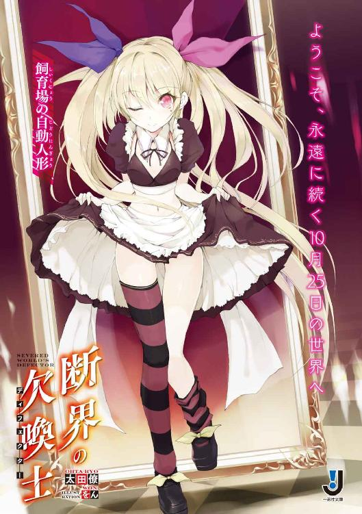
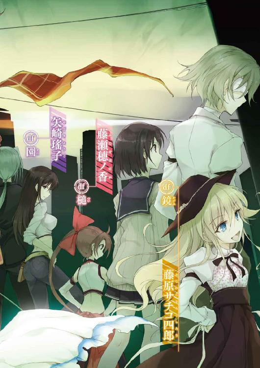
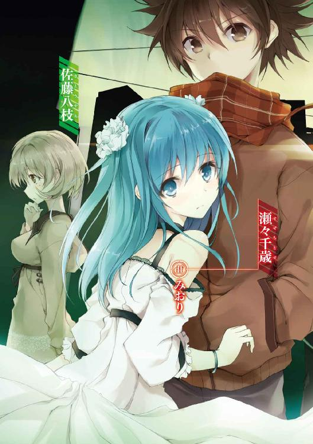
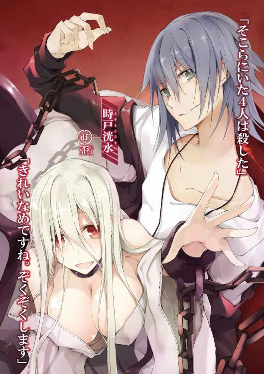
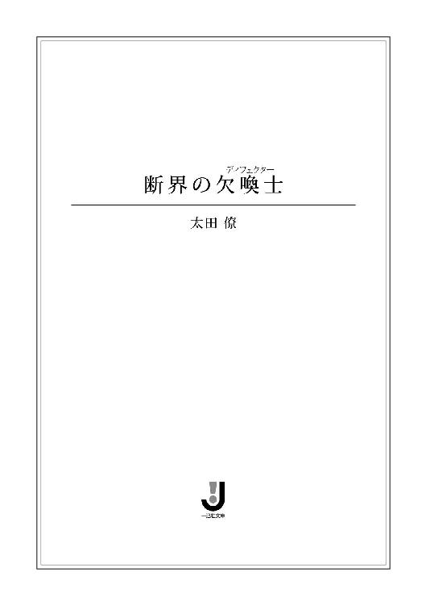
挿画：をん
デザイン：ナカムラナナフシ（ムシカゴグラフィクス）
序の章
――その日の彼は、運が悪かった。
思い返せば、とにかくその一言に尽きた。
今日が休日だったことも、昼飯を買うためにコンビニに寄ったことも。単にこの状況のために積み重ねられたようなものだった。
「あのさ、こういうのってよくないと思うんだ」
後ろ手に回された両の親指には結束錠。冗談というには物々しく、ささやかな抵抗すら許されない。
連れ込まれたのはゲーセンのトイレ。そして囲んでいるのは、元クラスメイトの二人。
つまり、彼――瀬々千歳は面倒な状況に陥っていた。
「っ、引っ張っても、取れな......いてっ」
「ごちゃごちゃうるせぇよっ！」
壁に向かって突き飛ばされ、千歳は換気用の窓に後頭部をぶつけた。
「ふぉ、ぉお......」
頭を擦ることすらままならない。その上、お世辞にも綺麗とはいえないトイレだ。転ばされでもしたら、目も当てられない。
「もう勘弁してもらいたいんだけど、駄目ですかね？」
相手の顔色を窺いながら、千歳は苦笑いを浮かべた。
「クラスが変わりゃ、俺たちから逃げられるとでも思ったか？」
「いや、そんな風には思って――たかな」
「随分と素直に言ってくれんじゃん」
背の高い方の男が、優位の笑みを浮かべながら千歳の襟首を掴む。
「俺、すっげぇ傷ついたわ。どうしてくれんだよ」
「どうもしない方向で......」
千歳は渋い顔で俯いた。
たまたま寄ったコンビニで鉢合わせなんて、これ以上にないハズレくじだ。
千歳は気付かれないようにため息を吐いて言う。
「その、俺を標的にしたい気持ちも分かるけど、こっちとしては――」
「記憶にない。俺らのことは顔くらいしか覚えてない、ってんだろ？」
「そう。去年の10月以前の記憶がところどころ抜けてるんだ」
そう口にして、千歳は自嘲的に笑った。
「ここまでしつこくするってことは、俺の財布で錬金術をしてたか、この身体で溜まったものを解消してたんだろうけど」
「嫌な言い方してくれんじゃんよ」
背の高い方が、千歳の襟をさらに締め上げる。
「ま、これっぽっちも覚えてないけどな」
「あ？ 覚えてねぇんなら黙ってろっ！」
千歳は再び強く突き飛ばされ、壁に背中をぶつけ、思いっきり咳き込んだ。
「なぁ、コイツやっぱ舐めてるよな。マジ気に食わねぇ」
「だったら、逆らえないように、また躾けりゃいいじゃん」
背の低い方がしゃしゃり出て、千歳の足を蹴りつける。
「っつ！ そんなにされたら、足が折れるって。俺は虚弱体質なんだ」
「あ？」
振り上げた足で壁を蹴りつけ、背の低い方は唾を吐き捨てた。
「瀬々、その舐めた口がどこまで叩けっか試してみるか？」
聞くに堪えない恫喝。
たとえクラスが変わっても、彼らに見つかればこうなると思っていた。だからチマチマと逃げ続けていた。
「そろそろ解放してもらえないかな。ここは穏便に......」
「だったら誠意を見せろ。おとなしく財布出せって」
下卑た笑いだった。
その後に続くのは、千歳の頭に描かれた通りの展開――
「早くしろっ！」
背の高い方が繰り出す右ストレート。
千歳は反射的に顔を逸らした。
「いっでぇっ！」
骨を打ちつける間抜けな音。声を上げたのは目の前の男だった。トイレのタイルはそれなりに硬かったらしい。
「あー。それ、早く冷やした方が......」
引きつった笑みを浮かべると、それを見た彼らが、さらに激昂する。
「てめぇ、もう死ねよ！」
今度は背の高い方。千歳の無防備な腹を目掛け、勢いよく足を振り上げる。が――
「っ！」
これも想像通りの展開。千歳は勢いに任せ、身体ごとぶつかっていった。
反撃としてはそれで十分だった。
油断していた背の低い方を巻き込み、二人はもつれるようにして個室へと倒れ込んだ。
阿鼻叫喚。
そう、ここのトイレはお世辞にも綺麗とはいえないのだ。
「......ご愁傷様」
一瞥し、千歳は全力でトイレから飛び出した。
＊
「まったく、なんて日だ......」
開店前の居酒屋の店先、千歳は雑居ビルの階段を登った暗がりに腰を落ち着けた。
下手に逃げるよりは、彼らが諦めるのを待とうと考えたからだった。
「運が悪いにも程があるな」
「ええ、そのようですね。こうして私に目をつけられてしまうくらいですし」
「......？」
気付くと、千歳の目の前には少女がしゃがみ込んでいた。
10代の頭というところか。泣きぼくろのついた温和な顔、黒にも見える艶やかな紫のショートワンピースに、片方がずり落ちた黒と紫のボーダーニーハイ。
そして腰には――老人のようにひしゃげた顔のジャックランタンをぶら下げていた。
「こんにちは。そして多分......はじめまして」
無邪気な笑みを湛え、その少女は物怖じせずに千歳の顔を覗き込んできた。
「えっと、なにか用か？」
「そうですね、用と言えば用かもしれません。大事なご相談ですし」
「......相談？」
「ええ、よろしいでしょうか」
まんまるの目を細め、少女が頬を緩める。
正直な感想を言ってしまえば、取り込み中だってのに気楽なもんだ――だった。ただ、タイミングは悪くないとも思った。
千歳はニッと笑い、少女に言った。
「......その前に一つ。なんでもいい、切れるものを持ってないか？」
「どうかされましたか？」
「実は、こういうことになってて」
身体を捻り、結束錠で固定された両の親指を見せる。
「はぁ、そちらのご趣味の方でしたか。人は見かけによらないと申しますが......」
「いや、そうじゃなくてさ」
「構いません。そのようなご趣味をお持ちでも、ご相談はさせて頂きます」
小さく気合を入れると、少女は千歳に強く頷いてみせた。
「......分かった。そう思っても構わないから、頼まれてくれ」
「はい、なんなりと。大抵のことには対応致しますので、ご遠慮なく」
「じゃあ、俺の後ろのポケットに財布が入ってるから――」
「えっ!? あの、そういうのは困ります。お小遣いとか、本当に」
少女がブンブンと手を振った。
「......誰がやるって言った。近くのコンビニでハサミを買ってきてくれって話だよ」
「もしや、そのプラスチックを切りたい、と」
「急いでくれ」
「はい、お任せ下さい」
そう言うと、少女はその場に膝をつき、抱きつくように千歳の身体に腕を回した。
「えっ？」
寄せられた小さな体躯。千歳の鼻腔を淡い髪の香りがくすぐった。
そして――
「とやっ！」
ぷつん。と、小さな音。少女はいとも簡単に結束錠を処理してみせた。
「っ!?」
きつく締められたせいで擦過傷ができていたが、千歳の両手はすんなりと開放された。
「......今、どうやって切った？」
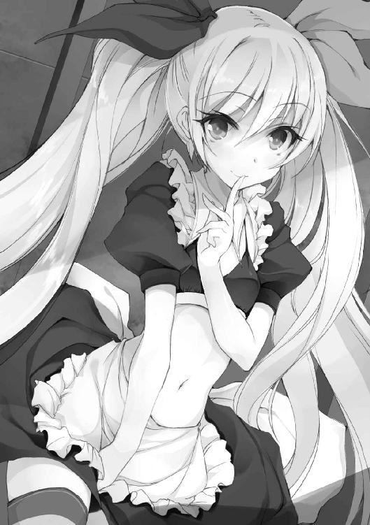
「それは秘密としておきます」
少女は、その唇に人差し指を当てた。
「それより、先のご相談の件なのですが、そろそろよろしいでしょうか？」
「え？ ああ――助けてもらったし、無理なことじゃないなら」
「いえ、それなりに無理なことかと」
「........................」
「ただし、こちらはあくまでご提案する立場、そこは弁えているつもりです。ご要望等がありましたら、ご遠慮なくどうぞ」
「要望が条例に引っかかるようなことだったら？」
「その場合は、こちらからも追加で提案をさせて頂くことになります」
少女が頬を染め、微笑む。
「私......見られている方が興奮しますので、公衆の面前で......」
「お前、馬鹿だろ」
千歳は続く言葉を遮った。と――
少女の口元がわずかに歪んだ。
「あの、その話は後にしましょう。どうやらあなたには、先約の方々がいらっしゃるようですので」
「え？」
同時に、階段を登ってくる二つの靴音が耳に届く。
千歳はペタリと座って微笑む少女の背後に目をやった。
そこには逆光に浮かぶシルエットと、記憶に新しい薄ら笑いがあった。
「捜したぜ、瀬々。こんなところに隠れやがって。しかも一人でボソボソと。てめぇ、頭おかしいんじゃねぇのか」
なるほど、先約だな。と納得。
千歳はため息混じりに腰を上げ――
「......一人？」
「ええ、彼らに私は見えておりません。ですので、こういったことも可能です」
少女はトコトコと前に出ると、背の低い方の鳩尾にノーモーションで掌底をめり込ませた。
「......ぅえ!?」
反射的に舌を出し、そいつが崩れ落ちる。
「......っ、ぅげぇッ！」
「お、おいっ！ どうした!?」
もう一人が身体を支えるも、彼はその場に吐瀉物を撒き散らした。
「さ、今のうちに」
「ちょっ――」
目を丸くする千歳の手を引き、少女が薄暗い階段へと駆け出す。
路上に飛び出すと、飲み屋街から再びゲームセンターへ。プライズコーナーを走り抜け、駅前側の出口から、巨大な陸橋を有するロータリーへと出る。
そして人ごみを縫うように走り、二人はロータリー脇に設置されたエレベーターの陰へと逃げ込んだ。
「ここで、少し様子を見よう」
コンクリの壁に背を預け、千歳は息を整える。と、おもむろに正面に立った少女が、両手で千歳の顔を包み込んだ。
「では、その間に私の話を聞いて頂くことにしましょう」
「ん？」
「単刀直入に言います」
少女は小さな咳払いを一つ。そして粛々とその続きを口にした。
「あなたの肥大したその願望、叶えてみたいとは思いませんか？」
「............なんて？」
「諦め切れない願望が叶うとしたら、どうしますか――と、聞きました」
その真摯な表情に、千歳はコクリと唾を呑み込んだ。
普段なら笑い飛ばすところだ。が――
「あなたには、非常に強い願望があるはずです......暗鬱で捻れたものが」
まるで壊れた人形のように微笑む少女に、千歳は呑まれてしまっていた。
「ありますよね？」
「どうして――」
見抜かれている。と、千歳は直感した。自分の中に隠している答えを、だ。
その動揺が、口から零れ落ちる。
「......抜け落ちた記憶が、取り戻せるのか？」
「なるほど、願望は記憶でしたか」
「大事な記憶なんだ、多分......」
千歳は、今はもういない妹の名を呟いた。
「では、取り戻しましょう。小さなリスクで大きな見返り。その首を縦に振って頂ければ、すぐにでもその権利を差し上げます」
少女が千歳の目を覗き込む。
しかし、千歳はそれをしっかりと睨み返して言う。
「ただな......甘すぎる話は苦手なんだ」
「でしたら、ご安心下さい。そこまで甘い話ではありません。願いが叶うかどうかは、あなた次第ですので」
「俺次第？」
「ええ、《王の称号》を手に入れることができれば、の話です。それと――」
少女が触れていた千歳の顔を、クイッと横へと向ける。
「どうやら見つかってしまったようですね」
視線の先――ゲームセンター前には、真っ赤な顔をした元クラスメイトが、千歳を見据えつつ電話をかけていた。
「いかが致しましょう。考える時間は、然程ないかと」
少女は千歳の顔から手を離し、言うまでもない状況を口にする。
「怒り心頭。ご友人を集めているのでしょう。無理に逃げ出したりするから......」
「半分はお前のせいだろ」
千歳は、背にしていた陸橋へと続くエレベーターのボタンを押した。
そして、２Ｆと光り続ける文字版に舌打ちを一つ。
「こちらに向かってきています」
「言わなくていい」
「私がどうにかしましょうか？」
自らの胸に手を置き、少女は静かに首を傾げた。
「私のお話に、首を縦に振って下さればいいのです。そうすれば、あなたはここから逃げ出すことができるでしょう。それに、願いを叶えることだって――」
「..................」
振り向けば、あの二人がすぐ間近まで迫っていた。
「分かった、乗ってやる」
「畏まりました。では、上へ参りましょう」
小さく２回――少女が手を叩くと、エレベーターの扉が音もなく開いた。
千歳はすかさず少女を抱き寄せ、中へと飛び込む。と、触れてもいないボタンが点灯し、エレベーターは扉が閉まるのを待って静かに動き出した。
駆け寄ってきた二人組が、その勢いのまま扉を殴りつけたのは次の瞬間だった。
ゆっくりと視界から消えていく二人の姿。
千歳は少女を抱いたまま、安堵の吐息を落とし、その場に座り込んだ。
「......今これ、勝手に動いてたよな」
「ええ、私がやりましたが――もしや、ご自分で押したかったのですか？」
不思議そうな顔で少女が言う。
「でしたら、代わりにこちらをどうぞ」
そして少女は目を閉じ、顔を寄せると、目尻の小さなほくろを千歳に向けた。
沈黙。そして千歳はそっとほくろを押してみた。
「あんっ♡」
「うるさいよ」
なにがしたいのかさっぱりだった。
千歳は呆れ顔でため息を吐いた。
「とにかく、陸橋に出たら駅構内に逃げ込むぞ」
「なぜですか？ もうその必要はありません。彼らの貧弱な願望では、こちら側に来ることなどできませんので」
「こちら側？」
「はい、そろそろ境界線を越えるでしょう」
その言葉と同時にエレベーターが強い衝撃に襲われ、千歳と少女は跳ね上がった。
「うぉあっ!?」
「ご心配なきよう。移動は恙無く完了しました」
反射的に手すりを掴んだ千歳に、少女は平然と言った。
そこに鳴り響く、お決まりの到着音。
「それでは――」
少女は静々と立ち上がると、開かれた扉から外へと出ていった。そしてスカートの裾を摘んで左足を後ろへ。微笑を湛えてちょこんとお辞儀をした。
「ようこそ、永遠に続く10月25日の世界へ」
「............10月、25日？」
「こちらが、あなたの願望を叶えるための場所となります」
千歳は恐る恐る立ち上がると、辺りを見回しつつエレベーターから足を踏み出した。
目の前に広がるのは、静まり返った無人の町。
映像のないマルチビジョン、大きなビルの壁に描かれた４という数字。
見回せば見回すほど、現実味が失われていく気がした。先ほどまでと同じ駅前だというのに、明らかに空気が違った。
「......ちょっと待ってくれ」
とにかく落ち着くことからはじめよう。と、千歳は彼女が今までに口にしたこと、自らの目で見たことを思い返していく。
ついでにもう一つ。千歳の目の前には、ある疑問が――
「えっと、いいか」
「はい？」
少女が首を傾げる。
「どうしてつまんだスカートを上げ下げする。見えるんだよ。気が散るから、余計なことはやめてくれ」
「しかし案内人というものは、得てして異様な存在であるべきだと、私は常々考えております」
そう、現に――と、少女は千歳を指差した。
「私に呆れることで、あなたは落ち着きを取り戻しています。それは混乱というものが、より不可解な行動で抑制することが可能だからです」
少女が言ったことは、あながち間違いではなかった。この異様な世界の中、千歳は自分でも驚くほどに落ち着きを取り戻していた。
「どうやらよろしいようで。では、簡単にですが、お話をさせて頂きます」
「..................」
千歳はあえて返事をしなかった。が――
「まずはこちらの世界について。お手数ですが、頭の中に町の地図を描いて頂けますか？」
話とやらは勝手にはじまっていた。
千歳はやむなく頭の中に地図を描く。
「では、その地図の中心部をポラロイドカメラにて写し、出てきた写真を地図に重ねて置いた、とお考え下さい」
「............それになんの意味が？」
「それがこちら側、後付けで重ねられた方の町です」
「――ってことは、またエレベーターに乗れば向こうに戻れるのか？」
「それはできません。いえ、むしろ焦って戻る必要がありません。元の世界に戻ることは酷く簡単なことなのですから」
「......今さらだけど、お前、何者なんだ？」
「私は《飼育場の自動人形》といいます。あなたの陰鬱な願望を叶えるため、潜在能力を引き出しに来たナビゲーターとご認識下さい」
胸に手を当て、少女は目を閉じて頭を下げた。
「............」
「ご認識下さい」
なぜか念を押された。
「......人形？ 潜在、能力？」
「それはこれからお見せします」
人形と名乗った少女は微笑みを湛えたまま、２歩、３歩と距離を取り――そこで強く足を踏み鳴らした。
次の瞬間――
遥か上空から、二人の間に巨大な板状の物体が落下した。
爆発したかのような轟音と風圧。そして震動が襲いかかってきた。
「......っ、ぶっ!?」
飛び散る礫。逆巻く土煙。千歳は反射的に両腕で顔を覆いつつ、隙間から目を凝らした。
そこに突き刺さっていたのは――
「っなん......だ、鏡？」
「ええ、これが私の能力です」
２メートルはあろうかという豪奢な姿見の裏から、ひょっこりと人形が顔を出す。
「今からこの鏡を使用し、あなたの能力を引き出します。まずは鏡面をご覧下さい」
人形が裏手で鏡の表面をノックする。と、鏡はまるで生き物であるかのようにふんわりと浮遊し、くすんだ鏡面に千歳の姿を映し出した。
「浮いてるんだけど......」
「はい、こちら側はそういうものだ、とお考え下さい」
「なるほど、そういうもの......」
「よろしいでしょうか？」
「全然よろしくない。けど、もういいから進めてくれ」
千歳はこめかみを押さえながら言った。
「はい、ではあなたの本質を映すとしましょうか」
人形が再び鏡面をノックする。と、触れた場所から全体へ、幾重にも重なる眩い波紋が広がっていった。
光は染み込むように、鏡面に揺れる世界を滲ませていく。その幻想的な光景を、千歳は食い入るように見つめた。
「これって――」
まばたきを一つ、二つ。
揺れる波間には――匂い立つばかりの少女が映っていた。
「 」
まず、目が奪われた。
言葉が出ず、息が詰まった。
歳の頃は千歳と同じく16、17といったところか。
艶のある長い黒髪、左右に咲く二つの髪飾り。しっとりと閉じられた目。そして優しく、穏やかな雰囲気。
ふんわりと広がる羽のようなリボンのついたワンピースがよく似合っていた。
「............」
千歳は無意識のうちに鏡へと近寄っていた。
「いかがですか？ なかなかに器量のよろしい方かと......」
「――こ、これが？」
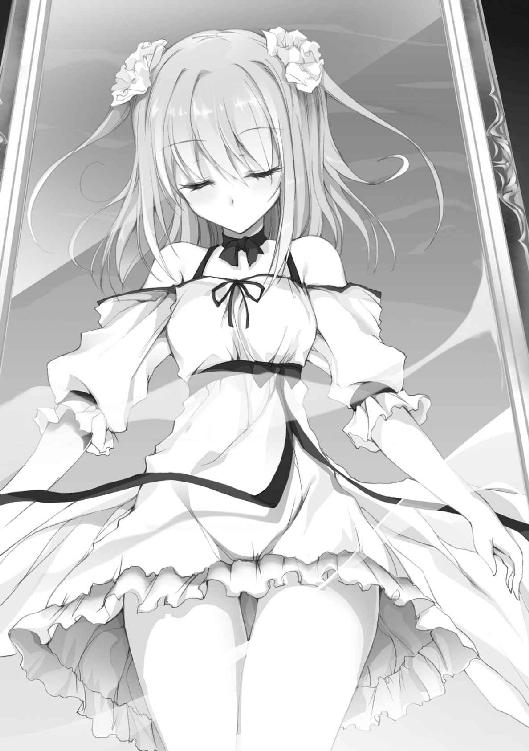
「あなたの潜在能力です、が......出てきませんね。通常は映しさえすれば、にゅるにゅるとところてんのように出てくるのですが」
酷いたとえに、揺さぶられた感情が台無しだった。
しかも、人形は浮遊した鏡の裏側を、平手でバンバンと叩きはじめる始末。情緒など微塵もない。
「......出ませんね。ならば、仕方ありません。お手数かもしれませんが、右手を前にお願いできますか」
「......こうか？」
言われるがまま、千歳は素直に右手を前に出した。
すると、鏡の中の少女も左手を前に出し、鏡面を挟んで千歳と触れ合う形となった。
「いいでしょう」
ずり落ちていたニーソックスを引き上げ、人形が言う。
「では、鏡面をずらしていきます――」
ゆっくり、浮遊する鏡を人形が引いていくと、鏡面には再び波紋が生まれはじめた。
「............っ」
まさか、と思うよりも早く、千歳は合わせた手に柔らかな体温を感じ取った。
鏡面から出た彼女の手は、実体となっていた。
「彼女の手をしっかり握ってもらえますか？」
コクリ、と、千歳は無言で頷き、彼女の手に指を絡ませて握る。
手のひらには温もりと、すべすべとした感触。
すると、トコトコと人形が千歳の隣に並び、その顔を見上げて微笑んだ。
「どうするつもりだ？」
「こうします」
と、人形は豪奢な鏡枠を、小さな体躯からは想像もできないほどの力で蹴り飛ばした。
耳を劈く破砕音が響き渡る。
「......っ!!!」
それは、もう人間業とはいえなかった。
ひしゃげてしまった鏡枠は、先ほどのエレベーターの扉に突き刺さり、無残な姿へと変わり果てた。
しかし、千歳にとってそれは些細なことにすぎなかった。
それ以上に――目の前の光景が、その目を奪って放さなかったのだ。
砕け散った鏡面が、手を繋いだ千歳と少女に降り注ぎ、そして空気に溶けるように消えていく。
それは本当に幻想的で――
力なく崩れ落ちる少女を、千歳はどうにか座り込みつつ抱きとめた。
「なんともお優しい手付きで。まるでラブロマンスです」
まるで他人事の台詞。
千歳は人形をひと睨みすると、その膝で静かな呼吸を繰り返す少女に視線を落とした。
「彼女はｄｆ――あなたの力といって差し支えないでしょう」
「ｄｆ？」
「はい、欠喚士の特殊技能とでも申しましょうか。強い願望を持つ人間にのみ与えられる固有の力、とお考え下さい」
「ディフェクター......」
「その方固有の欠落、欠陥、欠点、コンプレックス......心の奥底に眠るマイナスの力を別人格として具現化し、召喚するものという意味です」
「......それで？」
疑問はあったが、千歳はあえて続きを促した。
「いい反応ですね。非日常は受け入れることが重要です」
「............」
「続きはご本人の口からお聞きになるといいでしょう」
そうして人形が手のひらで少女を示す。と――
「んん............」
艶かしい吐息と共に、少女が千歳の腕の中でゆっくりと目を開けた。
「え......」
ぼんやりとしていた瞳に光が灯る。
「大丈夫、か？」
「――びゃあっ！」
凄まじい悲鳴。さらには少女が勢いよく身体を起こしたことによる激突。
こちらの顎に彼女の額。千歳はもんどり打った。
「お、お......おぉっ、お......」
「す、すみませんっ！ はのっ、私......驚いてしまって」
少女が慌てて飛びのき、その場に正座になる。
千歳はというと、涙目で顎を押さえるのが精一杯だった。
「そ、そのっ、えっと......あなたは――」
上目遣いで少女が恐る恐る口を開く。が、千歳の背後に目を留めると、たちまちその表情を凍らせた。
「まさっ、まさか、人形っ!? ってことは、私......」
「ええ、その通りです」
少女の視線を受け、人形が意味深に微笑む。そして、涙目の千歳に向けて言う。
「さて、これで準備は整いました。後はどうやって敵を消すかをお考え下さい」
「......敵？」
「はい、願望を叶えるには、私の主催する《ゲーム》で、あなたたちと同じ欠喚士たちと戦い、幾度か勝たねばなりませんので。それと、もう一つ。もし願望を諦めるのであれば、ｄｆである彼女を殺すか、ご自分の命を絶って下さい。そうすることで、すぐに元の世界に帰れるかと」
言いながら人形は片足を上げ、再びずり落ちていたソックスを、引っ張り上げた。
「殺すか、命を絶つって......」
「ご心配には及びません。もちろん痛みや苦痛は伴いますが、この世界での死はかりそめのものです。本当に死んでしまうわけではありません。もっとも、どちらにしてもご自分の一部を失うことになりますので、相応の対価を頂くことになりますが」
「相応の対価......」
「こちら側で過ごした記憶とお考え下さい」
そして近くに転がっていたランタンを拾い上げると、靴音を立てて足を揃え、片手を胸に深々と頭を下げた。
「ちょっと待ってくれ！ まだ聞きたいことが」
千歳は座り込んだまま手を伸ばし、人形のスカートの裾を摘んだ。が――
「では、ご縁がありましたら、また」
人形がその視界を覆うようにランタンを突き出す。
そして次の瞬間、その姿はすっかり消え去ってしまっていた。
持ち主を失い、重力に引かれたランタンがフロアに落ち、乾いた音を立てる。
「消え......た」
跡形もなく。そう、煙のようにだ。
なぜか千歳が摘んでいたスカートを残して。
午後の日差しの中、陸橋の上に座り込んだ千歳と少女は顔を見合わせた。
「――これ、どういうつもりだと思う？」
手にした布をヒラヒラと揺らす千歳。
「さ、さぁ......」
少女が微妙な顔で言う。
「いらねぇよ、ちきしょうっ！」
千歳は足元にスカートを思い切り叩きつけた。
＊
十数分の後――
千歳たちは、ロータリーを覆うように架かる橋から駅ビルへ。目についたコーヒーショップの奥まった一席に腰を下ろすことに決めた。
「......顔色悪いけど、大丈夫か？」
少女の前の丸テーブルに、千歳は水の入ったグラスを置いた。
「あの、ありがとう......です」
少女が伏し目がちに、小さく頭を下げる。
それから深呼吸を一つ。水で口を湿らせてから、千歳の顔を見上げた。
「あの......あなたって――」
恐る恐る少女が言う。が、すぐにブンブンと手を振る。
「あ、いえ！ 相手のことを聞く時は自分からですよね」
居住まいを正し、それから丁寧な口調で自己紹介。
「私、みおりっていいます。えっと、17歳で――色々あってｄｆをしています。よろしくお願いします」
どこからどう見ても普通の人間にしか見えないが、千歳から生まれた潜在能力だというその少女――みおりは勢いよく頭を下げた。
「瀬々千歳だ。えっと、みおりさん......」
「み、みおりでいいです」
「そっか、じゃあ俺も千歳でいい」
「あ、はい」
そう頷いて微笑むと、みおりは「千歳、千歳......」と何度か繰り返して口にした。
その仕草がやけに可愛らしく見えて、千歳はなんとなく笑ってしまった。すると、みおりが首を傾げて問う。
「......あの、私、なにか変なこと言いました？」
「そうじゃなくて、なんか子供みたいでさ」
まるで瞬間湯沸かし器。その言葉に、みおりは一瞬で赤くなった。しかも、俯くばかりか、ふるふると震えはじめる始末。どうやら素直で照れ屋らしい。
「まぁともかく、よろしく」
千歳はそっと右手を差し出した。が、みおりはそれを不思議そうに見つめ、自分の手をぽん、と上に乗せた。
「お手じゃねぇよ」
「ふぎぃっ！」
千歳がつっこむと、みおりがびくんと跳ね上がった。
やむなく、千歳は引っ込められたみおりの手を取り、しっかりと握り直して言った。
「よろしく、みおり」
「こ、こちらこそよろしく、です」
真っ赤な顔のまま、釣られるようにみおりがはにかんだ。
「えーっと......とりあえず、ここは元の街に似てるけど、別の世界ってことなんだよな......」
みおりがこくりと頷く。
にわかには信じがたい。しかし、とりあえずは受け入れるしかない。
ともかく持ち物を確認しておこうと、千歳はポケットを確認した。
財布と小銭、家の鍵、スマホ。そして――
「......なんだこれ？」
出てきたのは、すべやかな緑色のリボンだった。前から持っていたのだろうか？ まったく記憶にない。
「ひょっとして、みおりのか？」
聞いてみるが、みおりはふるふると首を振った。
千歳は少し考え、それを元のポケットに戻す。ひょっとしたら、記憶を失う前に持っていたものかもしれない。
そして一息、
「少し......外を歩いてもいいか。この10月25日の世界ってのが、どんな場所か知りたい」
千歳は誰もいない店内を見渡して言った。
「それにｄｆのことも聞いておきたいし」
小さく頷くみおり。
二人は席を立ち、とりあえず店の外へと足を向けた。
そのまま駅ビルを抜け、見通しのきくバスロータリーへ。
「......誰もいない、な」
いくら見渡せど、バス停や大通りに人影はなく、収穫といえる収穫はなかった。
千歳は振り返り、少し後ろを歩いていたみおりに言う。
「じゃあ、みおりのこと聞かせてもらおうかな」
「えっ!? わ、私の......ですか？」
みおりが素っ頓狂な声を上げる。
「ああ、みおりって、どこから見ても普通の女の子みたいだし......いきなり俺の中から出てきた力とか言われてもピンとこないんだ」
と、みおりはその言葉に、少しだけ悩む素振りを見せ、しっかりと頷いた。
「分かりました――協力します」
そして縁石の上にぴょんと飛び乗ると、千歳の横に並んで歩き出した。
「あの、千歳はどれだけのことを人形から聞きました？」
「どれだけって、説明されてないから......まったく」
「......え、丸投げ？」
みおりのまん丸の目が、さらに丸くなった。
「じゃあ、まずはｄｆについての基礎知識から、です」
ぴっ、と人差し指を立てて言う。
「そもそもｄｆっていうのは、欠喚士の強烈な願望を基盤に生み出された純粋な力のことなんです。もっと正確に言うのなら、欠陥を持つものの性質を捻じ曲げて投影した力で――」
「......悪い、早くも分からない」
千歳はそっと両手を上げた。
「では、もっとシンプルにまとめてみます」
みおりが人差し指を顎に当てる。
「そうですね......とどのつまり、ｄｆというのは意思や人格を持った力で、いわばもう一人の自分です。外見や性格は、欠喚士の深層心理から生み出され、その能力は――欠点から決まるようで......」
「欠点？」
「はい、ｄｆの語源。defect、です。その人の欠陥、欠点、欠落、足りないもの、求めてやまないもの、コンプレックス。深層意識にあるマイナスの心理が能力になるんです」
みおりが丁寧に説明する。
「ちなみに、身体能力は人間よりも高いのが一般的ですが、私は普通の人間とほとんど変わりません。それと、肉体を持っているのは、千歳の生命力を凝縮して実体化しているからで、その生命力は、私たちの体内にある受容石で受け取っています。だから、受容石を壊されたりすると......」
「存在できなくなる？」
みおりは小さく頷いた。
「ｄｆはたとえ瀕死になっても、欠喚士の生命力があれば復活できます。でも、受容石だけは修復できません。他にも30メートルくらい離れると、生命力が届かなくて能力が使えなくなったりとか......」
「なるほど......俺がコントローラー兼バッテリーで、みおりがラジコンみたいなものか」
千歳はみおりの小さな体躯に視線をやった。
「みおりにもあるのか？ その受容石ってやつ」
「えっ!? あ、私に、も......あると思います」
なぜか煮え切らない口調だった。
「で、肝心の戦うための能力っていうのは――」
すると、みおりは小さな咳払いを一つ。
「えと......私に刻まれた銘は《適解の公式》といいます。銘というのは能力を要約した名称みたいなもので、あまり人に言うものではないのですが――」
「ああ、人形にもそんなのがあったな」
「《飼育場の自動人形》。はい、あれと一緒です」
みおりが真面目な顔で「うんうん」と頷く。
「でも私の能力は――きっと口で説明してもピンとこないと思います」
「というと？」
「曖昧な能力なんです。言うなれば、たった60秒の魔法......」
「............」
沈黙。と、みおりはその場でピタリと足を止めた。
「あの......使えない、とか思ってます？」
「まさか」
「そ、それなら、いいです」
みおりは目を閉じて頷いた。
「......それで、この能力なんですが、発動させるためには契約状態――つまり私の身体に触れていることが条件になります」
「俺が、みおりに？」
「そう、です」
みおりは不意に駆け出すと、近くのショッピングビルの入り口に立った。
「あの、ともかく百聞は一見に如かずなので、試してみましょう」
「いいのか？」
「はい。千歳は私の使役者ですから......」
頬を染めながら、みおりが微笑む。
「遠慮しなくていいので、触れてみて下さい」
どうぞ、と、みおりは胸を張って目を閉じた。
「......ここでか？」
「だ、大丈夫ですから」
みおりは語尾を強めて焦らせる。ともかく契約状態に、ということらしい。
千歳は唾をコクリと呑み込み、ゆっくりと手を伸ばす。目標は双丘の右側だ。
――ふよ。
ささやかではあるが、悪くない柔らかさだった。ただ扱い方が分からないので、とりあえず下から押し上げるようにしてみた。
さぁ、どうだ。
なにが起きるんだ。
とはいえ、千歳はさすがに若干の後ろめたさを感じていた。
どんな能力が発動するにしろ、女の子の胸を堂々と触るなんて、はじめての経験だ。
能力とやらが発動するなら、さっさとしてもらいと思っていた。
しかし、みおりは目をぱちくりとしたまま、千歳の顔をただ見つめていた。
そして、触れられている自分の胸に視線を落とし――
「――――――――――――――――!!!」
飛びのきながら、耳を破壊せんばかりの勢いで超音波を繰り出した。
「っ、ど......うした？」
「ひぎっ、どうして胸っ！ ふっ、普通は、どう考えたって手とか腕とか、百歩譲っても、頬とかでっ！」
爆発するように茹で上がったみおりが、両腕で胸をガードしつつ叫ぶ。
「いや、遠慮しなくていいって、胸を張ったから――」
「駄目ですっ!!! い、いくらあなたから生まれた力だからって――わ、私だって、い、一個の人格なんですからっ！」
見ると、みおりは目に一杯の涙を溜めていた。
「......なにか、わ、私に言うことは」
「......これからの成長が楽しみ、とか？」
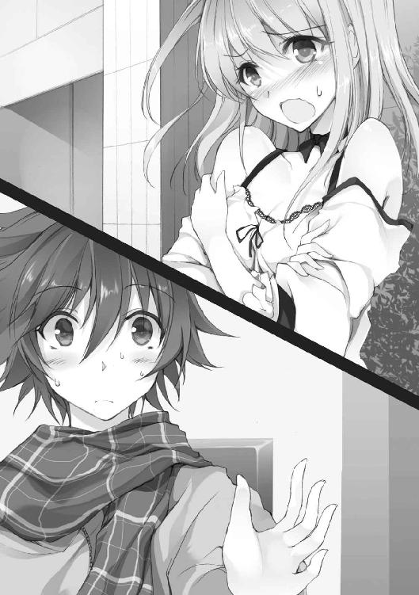
そう言った瞬間、みおりが猛烈なスピードで駆け出――す前に、千歳はその襟首を掴んだ。
「はなっ、放して下さいっ！」
「駄目だ」
イヤイヤをするみおりに、千歳は冷静に告げる。
理由は――視界の片隅に、煤けた光の塊が浮いていたからだ。
「......あれ、なんだと思う？」
千歳は目を凝らし、ピンポン玉ほどの塊を見つめる。
しかし、半ベソのみおりは、まだ気付いていない。それほどに微かな光。
その次の瞬間だった。塊から光る糸のようなものが放たれ、自分たちを囲むように三角形を描きはじめた。
「っ、みおりっ！」
千歳は反射的にみおりを突き飛ばし、すぐさま自らも飛びのいた。
「ひぎゃあっ!!」
驚き、形容しがたい声と共に、みおりがすっ転ぶ。
と、同時に、二人の間の空間が甲高い音を立てた。
「ほう、いい反応じゃないか」
聞こえてきたのは女の声。千歳とみおりは反射的にそちらへ目を向けた。
「取り込み中に失礼させてもらうよ、少年」
ショッピングビルの脇の五差路、女は車線を挟んだ商店街の車両止めに腰をかけていた。
タイトなデニムにシャツ。美人というよりはハンサムという方が相応しい。背筋を伸ばして座る姿は、見とれるほどに凛々しかった。
そして、その隣にはもう一人。腰よりも長い髪を一つにまとめた黒いスーツの女。表情に乏しいその顔の半分は、無機質な仮面に覆われていた。
「駅の方で大きな音がしたと報告があったんでな。新入りであれば手合わせでも、と思って来た次第だ」
「大きな音？」
考えるまでもない。人形が落とした大鏡で決まりだ。
千歳は渋い顔でため息を吐いた。
「で、さっそく敵が現れた、と......」
「ゲームでよくあるチュートリアルのようなものだ。当然、はじめての戦闘だろうから、こちらの能力を教えるくらいのサービスはしてやる」
「......？」
「私の欠点は、自分の世界に籠もり、外界との繋がりを一切遮断してしまうことらしい。そこから生まれたｄｆの能力は――園、やれ」
女が路上の外灯へと目をやる。と、園と呼ばれた仮面の黒スーツの女が、そちらへと手のひらを向けた。
次の瞬間、狙いつけた外灯の周囲に、三つの煤けた灰色の光が灯り、それぞれが光の糸を放って三角形を描く。
「――三点の光を結んだ面の切断」
そして甲高い、金属が摺り合うような遮断音。
外灯は根元で遮断され、ゆっくりと傾いて――派手な音と共に倒れた。
「以上。こちらの能力は分かったな。さぁ、戦いをはじめよう。少年にも叶えたい願いがあるんだろう？ 戦って敵を消さなければ、願いは叶わない。ここはそういう世界だ」
そして腕を組むと、傍に控える仮面のｄｆに視線をやった。
「相手をしてやれ」
仮面のｄｆは無言のまま前に出ると、ゆっくりとこちらに手のひらを向けた。
「ちょっ、ちょっと！ 俺はまだ――」
千歳は両手を前に、思いっきり首を振った。
「頭を下げて下さいっ！」
「んがっ!?」
ワンピースの裾を押さえつつ、みおりが千歳の頭を踏みつけて宙に跳ね上がる。
瞬間、二人の間には、あの甲高い音が鳴り響いていた。
＊
みおりは、千歳の無事を確認すると、着地と同時に駆け出した。
足を止めれば狙われる。一緒にいては千歳を守り切れない。
だが、回り込もうと交差点に出たみおりの周囲に光が灯り――糸が走る。
そしてあの遮断音。
傍らの信号が、みおりの胸の高さで二つになり、路面に倒れて派手にガラスを撒き散らした。
しかし遅い。みおりは既に交差点から歩道へと抜けていた。
強く地面を蹴りつけ、左へ右へと回避。
さらにはその勢いを反動に、正面へと切り替えして一気に接近を試みた。
「ほう、攻撃を自分に集中させにきたか。いい判断だ」
「千歳っ、あなたは逃げて下さいっ！」
２歩、３歩と加速する中、みおりは胸元から銀色に光るボールペンを引き抜いた。それはみおりにとっての宝物だった。他にこれといった持ち物はない。
「これが私に与えられた武器......？」
なら、見た目は頼りなくとも、恐らく物理的に壊れることはないだろう。
千歳は、まだ状況を理解し切っていない。もちろん能力の使い方も、戦い方も知らない。絶対に守り切ってみせる。
全ての責任は――私にあるんだから。
次々に光を配置する仮面のｄｆを見据え、みおりは駆けていく。
恐れる気持ちは、下唇を噛んで誤魔化した。
二つ目の信号が飴のように、踏み台にした乗用車が模型のように真っ二つになった。
さらには根元で切断された電柱が、火花を撒き散らして向かいのビルへと突っ込んだ。
が、鳴り止まぬ金属音の中、左右に刻むショートステップで狙いを絞らせない。そして大きな跳躍で残りの距離を一気に詰めていく。
攻撃能力のない自分に、相手を倒せるとは思えない。ただ、まだ自分の能力を知られたわけではない。だから今はハッタリでも、千歳が逃げる時間だけを稼げればいい――
「覚悟ですっ!!」
目標はｄｆの背後の欠喚士だ。
みおりはペンを握る手に左手を添えた。が、女に動揺は見られない。
傍らに立つｄｆに視線をやり、その腕の周囲に灯った光に笑みを零す。
それが意味するのは――
「あぐっ!!」
真正面。不意に現れた断面による盾に激突し、みおりは声を上げた。
身体を打ちつけた衝撃で倒れ込み、そのままの勢いでアスファルトを転がる。
「......くっ！」
「惜しかったな。直接攻撃タイプでないにしては、そこそこ動けていたが......」
冷静な声。だが、気を取られている場合ではない。
みおりは路上へと転がったボールペンに目をやりつつ、どうにか立ち上がる。
しかし――
「あ..............................」
胸の奥で小さな鼓動が一つ。
そして訪れた強烈な息苦しさに、みおりは堪らず胸元に手をやった。
荒い息。理由は分かっていた。引き出されて間もないため、受容石への生命力供給が上手くいってないのだ。
「残念だったな」
気付くと目の前には、あの女が立っていた。
「この程度では、この先も生き残れない」
その言葉を受け、相手のｄｆがみおりへと手のひらを向ける。が、動けない。
悔しさで込み上げる涙を堪えることしかできなかった。
「みおりっ！」
きつく目を閉じたみおりの耳に、千歳の声が響いていた。
＊
「みおりっ！」
ギリギリというのは、本当に心臓に悪い。
切断音が響く寸前、千歳はみおりに飛びついた。
「どっ、どうして......」
転がり、仰向けになった千歳を、折り重なるみおりが驚いた顔で見下ろしていた。
「セーフだったな」
「......ど、どうして逃げなかったんですか......!?」
千歳の胸元を強く掴むみおり。その息は酷く荒い。
しかし、千歳は答えずに呟く。
「能力は使えるか？」
「ぶ、ぶっつけ本番なんて無理です。千歳は、まだこの能力のことをよく知りません......」
「それでも、一人で戦うよりはマシだろ」
身体を起こし、座り込んだみおりの冷たい手に、千歳は自分の手を重ねた。
「教えてくれ、俺はどうすればいい？」
「......そのまま、手を繋いでいて、下さい」
それは消え入りそうなほどに微かな声だった。
「発動条件は満たしてますから、このまま行使します」
「どういうことだ？」
「この能力は、千歳を活かす能力......」
じっと目を覗き込みながら、みおりが言う。触れていた手に、少しだけ力が入った。
「今から、60秒の魔法をかけます」
「......それで、あいつらに勝てるのか？」
ふるふると首が振られる。「分かりません」という言葉を添えて。
つまり、やるしかないということだ。
千歳が頷くと、みおりは俯いて静かに目を閉じた。
「求めし者に、先見を以て示します――」
再び、ゆっくりと開かれる目蓋。みおりの紫色に変化した瞳が千歳を捉える。
同時に脳裏に描かれていく未来への映像。
チリチリと焼けつくような痛みが、千歳の眼球の奥に燻ぶりはじめた。
「これが――《適解の公式》？」
まるで早送りの無声映画だった。
ノイズ混じりの視界。
仮面のｄｆが千歳を見据える。
狙いは――千歳の首だ。
そして繰り出される遮断、遮断......遮断。
「今、私と千歳の頭の中には60秒先までの状況に適解が示されています。これから起きることに、最適な未来の選択を示す――それが私の力。でも、それが過ぎてしまえば――」
「......見えなくなる。だから、再発動させるために60秒以内に戻ってこい、か」
「そ、そうなんですが、できますか？」
大粒の汗を流しながら、みおりが微笑んだ。
「60秒以内に帰れとか、病んでる乙女かよ」
「ご、ごめんなさい......」
その言葉に、千歳は静かに首を振った。
確かに戦うには心許ない。攻撃に向いた能力でもない。
しかし、状況に対する適した解を積み重ねることで、相手を征していけばいいだけだ。決して悪い能力ではない、と。
未来への道しるべ。
それは、千歳の欠陥――記憶を失ってから、過去も行く末も見失っていた自分から生まれた能力に相応しいとすら思えた。
「ま、やってみるか......」
まずは深呼吸。千歳はみおりの手を引きつつ、ゆっくりと立ち上がった。
「策でもあるのか？」
こちらの様子を窺っていた女が言う。
「はい、お待たせしました」
千歳はトントンとつま先を鳴らし、正面に立つ女を睨みつけた。
「期待しているぞ、少年」
その言葉をスイッチに、仮面のｄｆが身構える。
少しだけ温かくなった手を放し、千歳はゆっくりと女の方へと歩きはじめた。
直線距離にして約10メートルといったところか。
「......欠喚士が前に出るのは、セオリーとは逆だぞ」
「セオリー？」
「欠喚士の死はゲームオーバー条件の一つ。受容石を破壊されなければ消滅しないｄｆが欠喚士を守るのが普通だ」
「なるほど......でも、セオリーがいつも正しいとは限りませんよね」
千歳の言葉に、女は交差点へ退くみおりを一瞥した。
「ふん、どういう能力かは知らないが、容赦はしないぞ――やれ」
「承知しました」
女のｄｆは胸に手を当て一礼、返す手で千歳へと狙いをつけた。
その狙いは首。
千歳の周囲に三つの光と、それを結ぶ糸。そして三角形が成立し――
静けさの中に、甲高い金属音が鳴り響く。
「――ほう、その攻撃をかわすか」
余裕を気取っていた女が目を見開く。
千歳は、身体を沈めて攻撃をかわすと共に、手を地面についてスタートの体勢を取っていた。
今の攻撃は、みおりが受けていたものよりも格段に速かった。目で見て反応できるほど、人間の身体は優秀ではない――はずだった。
しかし、現に回避は行われた。
『知り得て』いたからだ。
千歳は頭の中の映像に自分を重ね合わせて、駆け出した。
足を狙った切断面を飛んでかわし、腕を狙ったものを、身をよじって避ける。その異様な光景に、女が零す。
「......まさか、見えている、と考えるべきか」
次々に襲いかかってくる切断面。その全てを器用にかわしながら、千歳は駆けた。
相手の能力を殺すためには、接近戦に持ち込むしかない。
あと２メートル、１メートル――
「蹴散らせ」
鋭い声。女の指示が飛ぶと共に、仮面のｄｆが右拳を振りかぶる。
「......っ！」
間一髪。初撃の右ストレートを、千歳は膝を折ることでくぐり抜けた。
続けざま、繰り出された左の掌打はスウェーで避ける。
崩れた重心は、右足を開くことで整えた。
しかし、そこにｄｆ渾身の蹴り上げが打ち込まれる。
本当に見えていた通りだった。
千歳は両腕をクッションに、ガードを固め――
10メートルの距離を経て、交差点のど真ん中に背中から打ちつけられた。
「ほう、やるな」
女が感心したように言う。と、仮面のｄｆが無表情のまま答える。
「ええ、後ろに飛んで威力を殺しています。それに――」
狙い通りだった。
千歳が転がった先には、みおりがいた。
「た、ただいま......」
痺れる両腕でどうにか起き上がると、そこにはみおりの泣き出しそうな顔。
千歳はそっと手を差し出す。と、みおりがその上に自分の手を乗せた。
「いや、お手はいいから......」
「ふへっ!?」
千歳は苦笑しながらも、その手を握り、新たな適解へと意識を向けた。
再び、チリチリとした痛みが頭の中を疾走する。
映像が目の前に広がる。こちらを見つめる女とそのｄｆ。みおりが踏み台にしたことで、真っ二つになった車。そして、その上に立つ見知らぬ少女――
「......これ、誰？」
「えっと......」
千歳が問いに、みおりは困った顔で首を振った。どうやら、見えたもののことがなんでも分かる、というわけではないらしい。
と、その瞬間。
二人の耳に、その声が届いた。
「覚悟しろ、お前のポイントはあたしが根こそぎ頂いてやる」
舌足らずな喋り方。小学生......いや、中学生といったところか。
胸元にリボンをあしらったジャンパースカートにブラウス、揃いの帽子――というクラシカルな少女の登場だった。
新たな敵――と思いきや、
「おい、どうした、かかってこないのか！ かかってこないならこちらから――どっ、どうしてそんなうんざりした顔をするっ！」
きゃんきゃんと吠えながら、少女が指差しているのは、千歳ではなくあの女の方だった。
「......面倒なことになったと思う人」
「はい......」
千歳が問うと、みおりは繋いだ方とは逆の手を挙げた。その反応をもたらしたのは、二人が共有している適解だった。
この隙に逃げる。そんな選択肢もあるにはある。しかし、二人の脳裏には、襲われる少女、それを助ける千歳――という未来の映像が展開されていたのだ。
「ともかく行ってくる。あの猛チワワみたいのを助けるのが適解みたいだ」
「き、気をつけて下さいね」
するり。と、繋いだ手が解かれ、千歳は未来の映像を辿るべく駆け出した。
その距離、25メートル。
数秒後には、少女を囲むように灰色の光が配置される。
そして３秒後、少女の毛先が切断される。
高さは胸の辺り。さらに次ぐもう一撃が下腿を狙う。
千歳が助けなければ、髪だけでは済まされないだろう。
目標は車の上に立つ少女。千歳は脇目も振らずに交差点を駆け抜け、少女のスカートを掴んで引きずり下ろした。
「にゃっ!?」
ギリギリまで千歳の接近に気付かなかった少女は、突然の出来事に短い悲鳴を上げた。
瞬間、二つの金属音。少女の毛先が風に舞う。
そして着地。千歳は華麗に少女の下敷きとなり、どうにか一難を乗り切った。
「お、お......お前っ！」
絞り出すような声。抱えた少女が、千歳の胸を両の握り拳で叩いた。
「ぶっ、無礼だぞっ！ こんなに大胆に抱き寄せるなんて、どっ、どういうつもりだ！」
生意気にもフローラルな香りを漂わせる少女を押しのけ、千歳はフラフラと立ち上がった。
「黙ってろ。それから......絶対に俺から離れるな」
「な――っ！」
少女がなにかを言いかける。が、千歳の張り詰めた表情に、口を噤んだ。
「ち、千歳っ」
「次が来る、油断するなよ」
追いついたみおりを背に庇い、千歳は正面を見据える。
「まったく、見ず知らずだろう少女を助けるとはな」
女が言う。その顔には、余裕の表情が浮かび上がっていた。
「しかし、おかげで確信が持てた。少年の能力は『先読み』に属するものだろう、とな。こちらの攻撃モーションよりも早く動きはじめれば、馬鹿でも分かる」
「......っ」
「ただ、そうそう先のことまでは見えないらしい。こうして私に気付かれてしまうくらいだからな」
鋭い。
だが、能力を使わないで切り抜けられる場面ではない。
千歳はバトンを受け取るように、背後のみおりに手を出す。と、その手がきゅっと握られた。
そして三度、《適解の公式》が発動――
「嘘だろ......」
見えたのは、想像だにしなかった攻撃。それは巨人の一撃といっても大袈裟ではないほどのものだった。
「やるしか......ないですね」
遠くに転がる銀のボールペンを見つめつつ、みおりが呟く。
「千歳、頑張って下さい」
みおりが見えた映像に従って、よたよたと駆け出す。
千歳は女から目を逸らさず、ため息混じりに言った。
「......にしても、その攻撃は――」
「先を読んだか？ いいアイディアだろ？」
女の楽しそうな声。続いて、一等大きな金属音。
しかし、千歳の視界に遮断面は存在しない。
当然だ。女はその遥か頭上、六階建てのビルを斜めに遮断させたのだ。
「さすがにやりすぎだと思いますけど......」
「分かっていても避けられない、がコンセプトだ」
地鳴りと共に滑り落ちてくる巨大なコンクリートの塊。
「おっ、お前っ！ 上だっ！」
さすがに気付いた少女が、千歳の袖を強く引く。
「大丈夫だ、心配するな」
知っていなければ、足が竦んで動けなくなっていただろう。
千歳は少女の腕を掴み、後ろに３歩。ゆっくりと目を閉じて腕で顔を覆った。
――轟音。
耳を劈くような倒壊の音。肌を叩く小さな異物と、うねりを見せる土煙。
ただし、今、千歳たちが立つこの場所だけは別だ。この一点には被害は及ばない。
「お前は動くな」
千歳は怯える少女へ、戒めの言葉を放つ。
そして、うねる風圧の中、「......５、４――」と、ゆっくりとカウントを開始した。
舞い上がる土煙。
チャンスは一度、今しかない。
「３、２......」
相手は視覚を奪われ、こちらを認識できないはず――
「１」
千歳は目を見開き、倒壊したビルの残骸を駆け上がりはじめた。
走れ、走れ、走れ、走れ――
そう呟きながら、数メートルの高さへ達すると、千歳はその勢いのままに身体を宙へと踊らせた。
千歳の姿が見えない限り、反応はできないはず。
そして、ふと見た土煙の隙間には、瞳に強い光を灯すみおりの姿。
「みおり――」
そこには『あるべきもの』があるはず。
頭に描かれていた映像に従って中空に手を伸ばし――千歳がそいつを掴み取る。
みおりが投擲した武器――ビルの残骸から引き抜かれた鉄の棒だ。
「っ！」
千歳は渾身の力を込め、腕を振り下ろした。
――が、女の頭の数センチ手前。
映像と寸分違わず、千歳の腕はｄｆによって止められていた。
「..................っ」
千歳は肺の中の空気を全て吐き出した。
60秒の魔法はそこで終わりを告げた。
頭の中の映像はここで途切れているのだ。続きは自分の目で確かめるしかない。しかし、続けたところで勝ち目がないことは明白だ。
――と、不意に女が大きく息を吐いた。
「もう十分だろう」
「はい」
返事をしたのは、仮面のｄｆだった。掴んでいた千歳の腕を放すと、丁寧なお辞儀を残して溶けるように消えていった。
「......どういうことですか？」
「気に入った、ということだ」
女は無防備に歩み寄ると、唐突に千歳の頭をきゅっと抱えた。
「あのっ、ちょっと......」
「いいぞ、少年」
さらには、真っ赤になった千歳の肩を掴み、ガクガクと揺らす。子供のようなキラキラした目で。
「あ、あの......てっ、敵の人っ！ 千歳から離っ、れっ、てっ、下さい！」
割って入ったのは、フラフラのみおりだった。
「ああ、嫉妬か？ 申し訳ない」
薄ら笑いを浮かべる女を前に、みおりの動きがピタリと止まる。
と、女は二つに折った紙をデニムのポケットから出すと、それを千歳の手に握らせてきた。
「私は矢崎瑤子。ｄｆは園という」
「あの、これは――」
「少し休んでからで構わない。そこに書いてある場所に顔を出してくれ。正式に交渉をさせてもらいたい」
「......交渉？」
「ああ、今の非礼も詫びよう。こちらにも事情があるのでな」
「で、でも、一歩間違えれば、私たちは消えてました」
口を挟んだのはみおりだった。胸を押さえながらも瑤子を威嚇する。
「それ相応の見返りは提示させてもらうつもりだ」
「見返りなんて......」
強がりはそこまでだった。瑤子が踵を返すと、みおりはその場にペタリと座り込んでしまった。
「みおり？」
千歳が慌ててその身体を支えると、みおりは首を振って口元に力を入れた。
「だ、大丈夫です......受容石が、空っぽなだけで......」
顔を上げるが、そこには消せない疲労が現れていた。
「ちょっとだけ、消えます、ね。必要になったら......私の名前、呼んで」
そうしてみおりは小さく息を吐くと、ゆっくりと目を閉じ、酷い有様となった風景にその身を一瞬で溶かした。
「......とりあえず、助かったみたいだな」
まずは一息。
千歳はその場にバッタリと仰向けに倒れ、静かに目を閉じた。
しかし、それも束の間――
「......こら、起きろ」
千歳の顔に影が落ちた。
「いいのか、早く起きねば大変なことになるぞ」
苛立たしげな言葉。次いで不穏な笑い声と――
「ん～っ!!」
目を開けた先に突き出された小さな舌。そこから迫る糸を引いた雫。
「............おあっ！」
千歳は垂れてきた涎を避けて飛び起きた。
「なっ――にすんだよ、おいっ！」
「おお、起きてるじゃないか」
荒んだ風景の中、存在を忘れ去られていた少女が口元を拭う。
と、なにを思ったか、不機嫌そうな千歳を前に、ビルの残骸を危なっかしく登りはじめた。
そして１メートルほどの高さに達すると、そこに足をかけ、仁王立ちになった。
「初戦で矢崎を退けるとは、なかなか使えそうな新入りだな」
「お前も......敵なのか？」
「......まっ、待て！ あたしは、ポイントも持ってないお前と争うつもりなどない。とはいえ、矢崎のビハイブにスカウトされるほどの奴だからな」
少女が慌てて手を前に出し、千歳に待ったをかける。
「......ポイント？ ビハイブ？」
少女は見下すように大袈裟に顎を上げ、ニヤリと笑った。
「知りたいか？ 知りたいなら、お前のｄｆの銘を言うことだな。これは、ぎばんどていくだ」
「......ギブ＆テイクか？」
「おお、それだ！」
覚え立ての単語だったのか、少女が嬉しそうに指を差す。
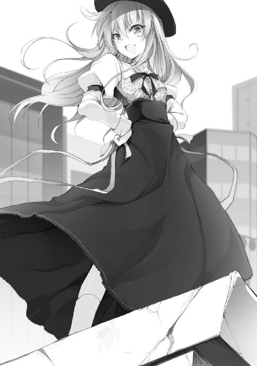
「いいか、あたしは甘くないぞ。簡単に情報を与えるのは阿呆のすることだ。どんな情報が弱点になるか分からんのだからな」
「そう言われて、素直に教える奴がいると思うか？ 子供か、お前は」
「なっ!?」
冷静な一言に、少女が目を見開いてうろたえはじめる。
「こ、子供扱いはやめろ！ それに......レディに対してお前呼ばわりは失礼なんだぞ！」
続けた言葉に、少女が真っ赤になって食いつく。その姿は、まさに猛チワワだった。
「そう言われても、名前も知らないしな」
「くっ、そうやって聞き出すつもりか」
キッ、と鋭い目が千歳を刺す。
「いや、可愛い子の名前なら知りたいと思うのが当然だろ」
「かっ、可愛いっ!? あの、それは嬉しいが、あたしは......駄目だぞ！ あたしには――」
声を裏返し、少女はもじもじとスカートを弄りはじめた。
「――で、名前は？」
「ふっ、藤原サチコ......」
素直にも程がある。と、千歳は苦笑する。
「あ、いやっ！ それは本名じゃなくて、あたしは......そう、四郎だ。藤原サチコ四郎！」
「......付け足すなよ」
「とっ、ともかくだ......偽名ではあるが、これからはサチコ様と呼ぶがいい」
「お前、馬鹿だろ」
「ばっ、馬鹿ではない!!」
顔を真っ赤にして、サチコが瓦礫を強く踏みつける。
「まったく、どこまでも失礼な奴だな。せっかく、その......たっ、助けてもらった礼に、この世界で生きるための知識を与えてやろうかと思ったのに」
「......どういうことだ？」
「どうもこうもない、そのままの意味だ。それとサチコ様と呼べ」
「サチコ様......ねぇ」
「あたしはこう見えても、半年以上もここにいる猛者だからな」
サチコが平たい胸を張る。
「どうした？ 遠慮なく呼ぶがいい」
「......分かったよ。じゃあ、生きるための知識ってやつを教えてくれ、サチコ様」
「お、おおっ、ならば......まずはビハイブについてだ」
千歳の言葉に、サチコの機嫌が上を向いた。
「この世界は――今はどれだけいるか分からないが、戦いで消えたり、お前のような新入りがたまに送られてきて、常に増えたり減ったりしているのだ。ビハイブというのは、その住人によって作られる集団のことだ。数十人の団体から、数人の小さなパーティのようなものまである。加わる理由は人それぞれだがな。願望を叶えるため、自分の身を守るため......もしくは、寝首をかくつもりとかな」
「へー、お前も入ってるのか？」
「いいや、あたしはずっと一人だ」
「それは............うん、なんか分かる気がする。ごめんな」
千歳はそっと目を逸らした。
「ま、待て、謝るなっ！ あたしは好きで一人でいるだけだからな。あの、あたしは――」
「分かった。それより話を続けてくれ。今の......願望を叶えるとか、そこを詳しく」
「い、いいだろう」
サチコは強気を装いつつ、肩にかかった髪を手で流した。
「お前は《ゲーム》についてなにか聞いているか？」
「勝てば願いが叶うってことくらいは......」
「正確には――不定期に人形が開催する《ゲーム》に参加し、敵を倒してもらえるポイントを１００集め、《王の称号》を得られれば願いが叶う、だ」
「......面倒だな」
「正直に言うな！」
鼻息を荒くして、サチコがキャンキャンと吠える。
「......お、お前だって、叶えたい願いがあるんだろ」
「――でも、本当に叶うのか？」
千歳は疑いの眼差しをサチコに向ける。
「あたしはそう聞いてる。縋る輩が大勢いるのはそれが理由だ。殺し合うゲームだというのに、な」
「それでビハイブが存在するわけか......協力者を得るために」
その言葉にサチコが「うむ」と答える。
「一人じゃないってことは、それだけでアドヴァイ......アド、有利だ。あたしはそう教わった」
コホンと咳払いをしつつ、サチコが頬を染めた。
千歳としても、その意見には同意だった。
仲間がいれば、生存確率が上がるのは間違いない。それも多ければ多いほど、その効果は高くなる。
「......誰かを襲うだけの理由も力も、あたしたちには与えられているからな」
沈んだ声。
ふと、千歳が見上げると、サチコはどこか寂しそうに笑った。
「そうだ、お前はケータイを持ってるか？」
「えっと......ここでも使えるのか？」
ポケットをごそごそと探り、スマホを取り出す。
「......見てみる価値はあると思うぞ。もうＤＬも済んでるはずだ」
その画面に見慣れないアイコンが点滅していた。
「これって......」
千歳がアイコンを叩くと、画面には『1025.liber』という文字と、三つの項目が表示された。
［ゲーム情報］［エリア情報］［ランキング］
「それが、この世界のナビみたいなものだ」
「......というと？」
「［ゲーム情報］は次の《ゲーム》の開催が決まった時に、場所や時間を知らせてくれるものだ。《ゲーム》中にナビが出たりすることもあるな。［ランキング］は文字通り、欠喚士の持っているポイント順位などが表示される。こっちは便利な分、閲覧にポイントが必要だ」
スマホを上から覗き込みつつ、サチコが解説をしていく。
「そして最も便利なのが［エリア情報］だ。それがあれば半径２００メートル以内に限られるが、一度出会った人物やそのｄｆに限り、情報や所持ポイントが自動的に表示される。さらに相手の端末を奪って自分のＩＤを入れることで、そいつの所持ポイントを自分に加算したりもできる。ビハイブの間では、主にポイントの譲渡に使われるようだ」
「そうやって一人ずつ倒してポイントを集めていくのか？ やっぱ面倒だな」
「だから《ゲーム》があるのだ」
ふふん、と、サチコが鼻を鳴らす。
「開催中は、倒した相手のポイントが自動で加算されるから、参加人数によっては一気にポイントを溜めることも可能だ。しかも、お得なボーナスポイントも発生するんだぞ」
「コンビニで使えるカードかよ......」
「ただし《ゲーム》では、単に戦って勝つだけが全てではない。ビハイブ同士の駆け引きもあれば、交渉や色仕掛け、なんて手段もあるが――ま、それは置いといて、まずは［エリア情報］を押してみろ。あたしの情報が見られるはずだ」
言われるがまま、千歳は［エリア情報］を押した。と、表示されるサチコの写真と、「藤原サチコ」の名前。しかしｄｆの銘や能力の欄はブランクになっている。
「相手のｄｆの能力は《銘》を知れば表示される。逆に明かさなければ、その能力を知られることはない。覚えておくといい」
なるほど、と、千歳は頷く。
誘導すればサチコのｄｆの《銘》も聞き出せそうだったが、なんだか可哀想なのでやめておいた。
そして一通りの情報を眺め――言った。
「お前、３ポイントしか持ってないのか」
「............」
沈黙。５秒。
サチコが瓦礫の上から、小さな礫を投げつけてきた。
「......と、とりあえず、常に油断はするなってことでいいんだな」
サチコの話を要約すると、ポイント集めの手段として《ゲーム》が開催されるが、《ゲーム》中でなくても、狙われる危険があるということになる。
「その通り。特に日が沈んでからは要注意だ」
サチコが尖らせた唇で言う。
「この世界の夜には緑の月が昇る。その薄明かりの中はなにが起こっても不思議じゃない。油断をした奴から寝首をかかれることになる」
「闇に乗じて、か」
「そ、そう、闇に乗じて！ それだ」
なにが気に入ったのか、サチコは嬉しそうに繰り返した。
「いいか、こっちの世界で一番ヤバいのは、間違いなく時戸洸水だ。こいつだけは見かけたら逃げろ。許しを請う暇があったら走り出せ」
「どんな奴なんだ？」
「会えば分かる。《ゲーム》もポイントも関係なく、襲いかかってくる奴だからな」
まったく参考にならない。が、サチコはお構いなしだ。
「後は――本町灯璃とか、茅ヶ崎皐月にも気をつけろ。そうだ、絶対に敵対するなって意味では芙蓉姫子もだ。そして忘れちゃいけないのが藤原サチコ......えっと、四郎だ」
そしてニヤリと唇を吊り上げた。
「自分で名前を忘れかけてたっぽいが、最後の奴はそんなにすごいのか？」
「ああ、すごいぞ。強くて速くて美味しくて美しいらしい」
肩にかかる髪を大袈裟に払い、サチコは腕を組んで堂々と立った。
「............」
千歳は無言のまま手招きをしてみる。と、サチコがそろそろと瓦礫の山から下りてきた。
「なんだ？ あ、いや......ちょっと、やめ――」
思いっきりサチコの頬をつまんでやる。果てしなくつまむ。さらには捻り、張りのある頬をこねくり回した。
「駄目、あ......ごめ、なさい。今のは、少しだけ、大袈裟らった」
身を捩り、サチコが千歳の指から逃げ出す。
「くっ、まったく......無礼だぞ！」
サチコが頬を押さえながら悪態を吐いた。
「あの、あれだ。戦意を向けられると面倒なので、少々大袈裟に言ったまでだ」
「なるほどな」
千歳は頬を緩め、一呼吸。
「......最後にもう一ついいか？」
「なんだ？」
「どうしてそれを俺に教えたんだ？」
その瞬間、サチコの頬が再び朱に染まった。
「それは――た、助けっ、てくれた礼もあるが、気にな......面白そうな奴だからだ。少しでも貸しを作っておきたかった」
「貸しが返されないこともあるって、分かってるよな」
「え!? あ......だ、駄目だぞ。ちゃんと返さないと。それは人として大事なことだ。ずるいぞ！ えっと、なんとか太郎！」
サチコが勢いよく千歳に掴みかかった。
しかし、千歳はサチコの頭を押さえつけながら一言――
「......瀬々千歳だ。忘れんなよ、サチコ様」
瞬間、突進がピタリと止まった。
「お？ おおっ!? 分かった、しっかりと刻んでおいてやる」
サチコは乱れた前髪を直すと、千歳の顔をじっと見つめてニッと笑った。
「――それじゃ、あたしはそろそろ退散するとしよう。矢崎のところに顔を出すのだろう？」
「............」
千歳はポケットの中の紙を思った。正直なところ迷っていた。
しかしそれを吹き飛ばすかのように、サチコは千歳の背中を押した。
「心配はいらんぞ。矢崎は優しいからな、色々と学ばせてもらうといい」
それがポイントを奪おうとしていた奴の言葉か、と千歳は思った。が、そこにはなぜか説得力が感じられた。
「前向きに検討してみる」
「それが賢明だ」
千歳に背を向け、サチコは言った。が、すぐに振り返り、思い出したように付け加えた。
「またな、千歳。すぐに消えてくれるなよ」
そして手を振り――千歳が瞬きをする間にその姿を晦ませた。
＊
駅前から歩くこと十数分。オフィス街を抜けて、小さな通りを道なりに――
千歳がその場所に到着したのは、夕暮れ前の時分だった。
「......ここ、か？」
可愛らしい草花をあしらった門と、温もりのある少し古い建物。
渡された地図の場所には、小ぢんまりとした保育園が佇んでいた。
「えっと......」
なんとなく自信が持てず、千歳は再び地図を見直した。しかし、どうやら間違いではないらしい。
ただ、奥まった造りのせいで、入り口から中を窺うことはできない。
となれば、仕方がない。
千歳は深呼吸を一つ、躊躇いながらも園内へと足を踏み入れた。
「お、来たか」
「うわぉっ！」
千歳はいきなりその腕をがっちりと掴まれた。瑤子だった。どうやら門のすぐ内側にいたらしい。
「えっ、あの......」
「待っていたぞ、少年。さっそくだが、こっちに来てくれ」
挨拶を交わす間もなく、瑤子が千歳を引きずって歩きはじめる。行き先は――園庭の最奥にある一室のようだった。
「あ、あの、この保育園って......」
「私たちビハイブのねぐらだよ」
「ねぐら、ですか......」
らしいと言えば、確かにらしかった。
千歳はなんとなく納得すると、部屋の前のすのこで靴を脱ぎ、瑤子の後について中へと入っていく。
そこは――斜陽の差し込む教室だった。
目についたのは、背の低い木製のロッカーと、壁一杯に貼られた色とりどりの画用紙。
それに、真ん中に置かれた大きなテーブルに着いた二人の少女。
「彼女たちもこちら側に来たばかり、つまり少年とは同期のようなものだ」
「............」
瑤子の紹介に生返事を返し、千歳は少女たちを見つめる。
その一人は学生。セーラー服にニットのカーディガン。あどけない顔には似合わない強い瞳が印象的だ。そしてもう一人は、フードのついたゆったりとしたワンピースの少女。淡い表情でぼんやりとこちらを眺めている。
「さ、いつまでも突っ立ってないで座るといい」
瑤子に背中を叩かれ、千歳は彼女たちの前へと出た。
「紹介しよう。彼は――」
「......瀬々、君？」
消え入りそうな声。不意に名前を呼ばれた千歳は、淡い表情の少女へと目を向けた。
くせ毛のショートボブに、静かな瞳。噤んだ薄い唇。
「えっと......？」
印象的じゃないことが印象的な少女。
けど、この雰囲気は......どこかで――
千歳は自身に「覚えているか？」と問う。そして、抜け落ちてまだらになった記憶から、彼女の名前を拾い上げた。
「佐藤......八枝？」
その名を口にすると、淡い表情の口元がわずかに緩んだ。
そうだ、間違いない。小学校や中学校で一緒――そう、同じクラスだったこともある。千歳は自らの記憶に頷いた。
「八枝さんのお知り合いですか？」
唐突に割り込んできたのは、制服の少女だった。
「うん、昔の......」
「そんな偶然、あるんですね」
まじまじと千歳を見つめ、それから手を挙げて言う。
「あの、下の名前と歳を聞いてもいいですか？」
「千歳。高２で17歳だ」
「あ、年上なんですね。でも、それも......ありかな」
ボソリ。と呟き、少女はほんのりと頬を染め、千歳にはにかんでみせた。
「あの......私、藤瀬穂ノ香っていいます」
「そっか、よろしくな」
さらりと会釈を返す。と――
「分かってるとは思うが、彼女たちも欠喚士だ」
千歳の隣に立つ瑤子が、実に楽しそうに言った。つまり、この二人もなんらかの能力を持った者、ということになる。
千歳は気を取り直すと、顔を引きしめ、差し出された椅子に腰をかけた。
「さて、これで全員だな――」
千歳の真向かい。同じく席に着いた瑤子が、テーブルに肘をついた。
――と、その時だ。すのこを踏む軽い足音が聞こえ、右サイドを編み込んだ小学生くらいの女の子が、ガラス戸からひょっこりと顔を出した。
「これ、みゆきちゃんが持ってけって」
つまらなそうに頬を膨らませる女の子。手にしたお盆には、お茶が四つとかりんとうが載せられていた。
「すまないが、こっちまで持ってきてくれ」
「あ、うん」
瑤子の言葉に女の子が従う。が、テーブルにお盆を乱暴に置いたのがいけなかった。
ガチャンという鋭い音。お茶受けのかりんとうが零れ、お茶の飛沫が跳ねる。同時に瑤子の厳しい叱責が飛んだ。
「こら、気をつけないか――怪我や火傷はしてないな？」
瑤子は女の子を素早く確認する。
「え、だって......これ重いんだもん......」
女の子が不満そうに鼻を鳴らす。
「別に気にしてないんで、いいですよ――お手伝いして偉いよな」
千歳はポン、と女の子の頭に手を置いた。
「お茶、ありがと」
「え？ あ............っ」
その瞬間、明らかに不機嫌だった女の子の目がまんまるへと変わった。そして手にしていたお盆を強く抱きしめると、パタパタと走って部屋から出ていってしまった。
「......あれ？ 嫌われましたかね」
「いや......落ちたんだろ」
と瑤子。
「ええ、落ちてましたね......」
女の子の飛び出した方を眺め、穂ノ香が頷きながら同意した。
「な、なんですか、その目は」
千歳は気まずさに耐え切れず、咳払いを一つ。
「でも、あんな小さな子までこの世界に来てるなんて......」
「人形は《願望》があれば、節操なく誘っているからな」
こともなさげに、瑤子が言う。そして――
「さて、本題に入ろう」
一呼吸を置いてからニッと笑い、それぞれの顔を見回した。
黙々とかりんとうに手を伸ばす八枝。どことなく真剣な面持ちの穂ノ香。そして、やや緊張気味の千歳。
「最初に断っておくが、これから提案することは強制ではない。ここはあくまで交渉の場だ。基本的な知識はあるものとして話すが、分からない言葉や、理解できないことがあったらその都度聞いてもらいたい」
「「「分かりました」」」
３人がコクリと頷く。
「では簡潔に述べよう。――私のビハイブに入ってほしい」
「つまり、仲間になれってことですよね」
穂ノ香の確認に、瑤子が目を細める。
「こちらの戦力は私を含めて10名程度。これまでに確認されている10数個のビハイブの中では、中堅クラスの規模だ。だからこそ、力を貸してもらいたい。もちろん、君たちの能力や適性を、既に確認させてもらった上での話だ」
その言葉に、千歳は何気なく二人に視線を向けた。
それはこの二人もあのチュートリアルをクリアしたということに他ならない。
「――まぁ、いきなりこんな世界に放り込まれて右も左も分からない中、急な話だということは理解している。だが、こちらにも色々事情があってな、あんな試し方になってしまった」
瑤子はお茶を一口、テーブルの上で手を組み――そして、言う。
「君たちは《王の称号》のことは聞いているか？」
「はい、１００ポイント集めて称号を獲れば......願いを叶えてもらえるって」
千歳が答える。
「では駅前のビルに、４という数字が書かれているのは？」
問われ、千歳は記憶を探る。代わりに答えたのは穂ノ香だった。
「ショッピングビルの外壁ですよね？」
「そうだ。あれは《ゲーム》の主催者である人形からのメッセージでな。携帯と連動する形で、《ゲーム》までの日数と、そのビルが開催場所になるという目印になっている」
「ってことは、明日にはその数字が３に書き換えられる、と」
千歳が頷く。しかし、瑤子は怪訝そうな表情を浮かべた。
「書き換え――そうか、更新のことはまだか」
「更新？」
「元の世界に準じようとする現象のことだ。たとえばだが――こちら側で壊れてしまったものでも、あちら側で壊れていなければ、深夜０時の更新できっちりと修復される。元の世界の情報が、こちらに反映されることになるからな」
それでか。瑤子が遠慮なく町をぶっ壊したわけだ。と、千歳は深く納得した。
「ちなみに、それは食料についても適応される」
「どういう意味ですか？」
イマイチ分からなかったのか、穂ノ香が小さく手を挙げた。
「簡単なことだ。こちらでどれだけ食べようが、食料は常に更新、補充される。気兼ねなく食事ができるということだ」
「じゃあ、この世界では食べ物が腐ったり、飢えて死ぬってことはないんですね」
穂ノ香がほっとしたように息を吐いた。
それは、生きていく上で、最も根本的なものが保障されているということだ。
「ま、ビルの数字もそれと同じと考えてくれ。今夜の更新で４という数字が消える。そして人形が新たに３と書くわけだ」
瑤子はニッコリと笑い、それから居住まいを正した。
「これまで私たちは《ゲーム》には参加せず、仲間と情報を集めていた。が、次の《ゲーム》では勝ちにいく。だから、ビハイブにもっと人数が欲しい」
「つまり、ビハイブ同士の争いに参加しろ、と」
穂ノ香が反射的に言葉を返す。と――
「ふぇほはれすは？」
続きを口にしたのは、それまで沈黙を守っていた八枝だった。
が、口の中一杯に頬張ったかりんとうによって、その発言は台無しになっていた。
「えっと......佐藤が言いたいのは、手駒ですか、ってことですね。《ゲーム》に勝ってもポイントはあなたたちが持ってく、とか」
千歳がなんとなくフォローする。サチコによれば、ビハイブの中ではポイントの譲渡が行われるという話だったはずだ。
「なるほど、いいところをつくな」
瑤子は、リスのように頬を膨らませる八枝を一瞥した。
「......だが、こちらに君たちを使い捨てるという考えはない。ただ、残念ながら、それを証明する術がない。私は信用してくれとしか言えない」
「では、《ゲーム》に勝った場合はどうするんですか？」
千歳は真剣な顔で尋ねた。
「いや、称号を獲って、くじ引きで当たった者の願いを叶えようかと......」
あっけらかんと答える瑤子。
「《ゲーム》はビハイブでなくても参加できるし、基本は自分が倒した者のポイントが手に入るだけだ。しかし、仲間と共闘できるのであれば、単純に負けにくく、勝ちやすくなる。戦術にも幅が広がる。それなら皆でポイントを集め、誰かの願いを叶えるのが最も効率的だ」
「じゃあ、チャンスは誰にでもあるんですか？」
口を挟んだのは、スカートの裾をキュッと握った穂ノ香だった。
「そういうことになる。ただ、私の狙いはポイントを集め、称号を手にした先にある」
「その先......つまり」
穂ノ香が瑤子を見つめる。
「ああ、願いが叶うとは言われているが、本当に叶うのか......それを確かめねばなるまい。でなければ、この世界の闘いは無意味だ」
「今までに願いを叶えてもらった人は......いないんですか？」
穂ノ香の素朴な疑問に、瑤子が答える。
「過去にいた。が、もういない」
「どういうことです？」
「この世界から消えてしまったんだ」
瑤子はそっと席を立った。
「話は以上だ。できれば３人ともビハイブに入ってもらいたいが、無理強いをするつもりはない。それと......もう日が暮れる、今日は泊まっていくといい。布団と食事は用意するから、この部屋を自由に使ってくれ」
言われてみれば、確かに外は薄暗くなっていた。
「夜は下手に動かない方がいい。わざわざ足を運んでもらった手前もある。仲間になるかどうかは別として、今夜はこちらで守らせてもらう」
たおやかな笑みで瑤子が言った。
「じゃあ、お言葉に甘えて......」
千歳が穂ノ香と八枝を見ると、二人もしっかりと頷いた。
ちなみに、お茶受けのかりんとうは、いつの間にか八枝によって殲滅されていた。
＊
静かな風と共に、小さなくしゃみの声が届き、千歳は目を覚ました。
視界は薄暗闇。その中にぼんやりと佇むのは、上履きが並ぶ木製のロッカーとオモチャ箱。
そこは保育園の一室だった。
そうだ、今日はここに泊まることになったんだったな、と思い出しながら、千歳は疲れた身体をゆっくりと起こした。
そして、保育園らしい大きな窓へと目を向け――差し込む淡い光の中に、ガラス戸を開けて立つ八枝と穂ノ香の姿を見つけた。
千歳は静かに布団から出ると、ひんやりとした床に足音を立てる。
「......どうした、眠れないのか？」
小さな声で問いかけると、二人が振り向いた。
「千歳さん......起こしちゃいました？」
穂ノ香が申し訳なさそうに言う。
「ごめんなさい......」
八枝も謝罪を口にする。
「いや......この状況で無防備に寝られる方が普通じゃないかもな」
千歳は苦笑しながら、窓際の本棚に寄りかかった。
「今、八枝さんと月を見てたんです。ほら、綺麗だと思いませんか。緑色なんて――」
穂ノ香に言われるがまま、千歳は窓枠の向こうに、ぽっかりと浮かんだ満月を見つめた。
「ま、綺麗かもしれないけど、異様な光景だな」
すると、穂ノ香がくすりと笑う。
「こういうの......なんだか、ちっちゃい頃のお泊まり会みたいですね。場所が保育園だからそう感じるのかもしれないですけど」
「そうかもな」
釣られて千歳も笑い、それから呟いた。
「でも別世界、なんだよな......」
未だに信じられないが、これは現実だ。
「二人も、人形に会ってこっちに？」
「はい、私は学校帰りにキャッチセールスかってくらいに声をかけられて――」
穂ノ香が呆れたように言った。
「で、佐藤は？」
「ワッフルくれたから」
「............」
佐藤八枝は確かに同級生だった。しかし、それほど親しかったわけではない。過去の記憶が曖昧なことも相まって、八枝がどんな女の子なのか、千歳は計りかねていた。
「えと......お二人の考えを聞いてもいいですか？」
ふと、穂ノ香が小さく手を挙げた。
「ビハイブのお誘い、お二人はどうするつもりですか」
さらに千歳の目を見て、おずおずとしながら、思い切ったように口を開く。
「そっ、それから千歳さんっ」
「あ、はい」
「千歳さんのことも教えて下さいっ！」
言うが早いか、穂ノ香は棚の画用紙を拝借し、サラサラとペンを走らせはじめた。
誕生日、趣味、血液型、好みのタイプ、使ってるシャンプーと歯磨き粉、洗濯石鹸――書き綴られること数十項目。
一頻り書き終えると、穂ノ香はそれを勢いよく差し出した。
「......えっと、また今度な」
この子もなにを考えてるのかよく分からないなと思いつつ、千歳は画用紙をそっと床に伏せて置いた。
「で、佐藤はどうするつもりだ？」
「私？ 私は――」
しばらく沈黙。ややあって、八枝は小さく首を振った。
「......実は、別のところにも誘われてるから、少し考えたい」
「そっか、他のところにも――確かにどのビハイブに入るかは重要だよな。《ゲーム》に勝って願いを叶えるなら、もっと大きいチームの方が有利かもしれないし」
八枝は静かに目を伏せ、そして続ける。
「......二人には願望、ある？」
「俺には......」
千歳の心臓がトクン、と鳴った。
「落とし物があるんだ」
「落とし物？」
穂ノ香が首を傾げた。
「......半年くらい前かな、気付いたんだ。俺の記憶、あちこちが抜け落ちてるんだ。周囲とあんまり関わってなかったみたいだから、生活に支障はないけど――」
千歳は寄りかかっていた本棚にコツンと頭をぶつけた。
そして、写真でしか知らない妹の顔を思う。
「きっと、それは忘れちゃいけない記憶で......」
しんと静まる中、千歳は穂ノ香に顔を向ける。
「穂ノ香はどうするんだ？」
「私は――入るつもりです」
夜風に前髪を揺らしながら、穂ノ香が言った。
「私の願望は、行方不明になったお姉ちゃんを見つけることです。そのために《王の称号》を手に入れたくて。だから、ビハイブに入って、《ゲーム》に参加して、ガンガン戦おうと思ってます。すぐに称号が手に入らなくても、生き残っていれば経験も得られますし」
「前向きだな......」
千歳が呟くと、穂ノ香が苦笑する。
「それ、お姉ちゃんにもよく言われてました。それが私の欠点だって。周りが見えてない。無茶ばっかりって」
それから、穂ノ香は絵本や玩具が収められた部屋の中に視線をやった。
「ここに入るって決めた理由は、場所のせいもありますけど......この雰囲気が、なんだか懐かしいっていうか、子供の頃に戻ったみたいっていうか。うまく言えないんですけど、なんだかあったかくって、家族みたいだなって」
穂ノ香はにっこり笑う。すると、
「......そうかも。そこは悪くないと思う」
月夜の園庭に目を向けながら、八枝が納得したようにポツリと零した。
――家族、か。
千歳は一人――その言葉に、拭い去れない痛みを感じていた。
覚の章
翌日、10月25日――
昨日と同じ日付。スマホの表示も変わらないまま。
今までも、そしてこれから毎日――明日も、明後日も10月25日が続くという。
それこそが人形の謳った永遠という意味なのだと、出掛けに瑤子から聞かされた。
「でも......よりによって、この日付か」
抜けるような秋空の下、千歳は独りごちる。
保育園から歩いて30分ほどの距離にあるその河原は、過ごしやすい穏やかな陽気に包まれていた。
こっちの世界でなくとも、人通りは少ない。地元民ならではの散歩道。
昼食を終え、しばらくしてから、千歳は保育園に残るという穂ノ香、誘われているもう一つのビハイブへ行くという八枝と別れ、一人、この場所を訪れた。
「10月25日......」
ポツリと呟く。
それは、記憶のあちこちを失くしてしまったことに気付いた、半年前の日付。
その合致になにか意味があるのか――しかし、考えても分かるはずもなかった。
千歳は河に向かって土手を下りると、ころんと仰向けになって目を閉じた。
と、その時だった。
「......あの、一人でいると危ないと思います」
鈴の音のような、透き通った声。
目を開けると、困ったような顔をしたみおりが千歳を見下ろしていた。
ご丁寧なことに、寝転ぶ千歳から見えないよう、ワンピースの裾を押さえつつ。
「......俺、呼んだっけ？」
「いえ、意識を取り戻したら、いつの間にか具現化していて......」
そう言って、みおりは千歳の隣に腰を下ろした。
「なにか考え事ですか？」
「ああ、ちょっとな」
「......ビハイブに誘われたんじゃないんですか？ それなら保育園にいた方が......」
その言葉に、千歳は起き上がって素朴な疑問を投げかけた。
「ちょっと待て、いつから具現化してた」
「ふひ？ あ......」
目を丸くし、みおりが口元を押さえる。
「戻ってたんなら、出てきてくれたって......」
「それは......その、えっと......私、極度の人見知りなので......」
俯き、どこか上ずったような口ぶり。そして、いつもの困り顔だ。
「......ま、いいか」
「はふ......」
大きな吐息。みおりがほっとしたように胸を撫で下ろした。
「少し、こっちの世界を見て回ろうと思って」
そんなみおりに、千歳はさらりと言った。が――
「それだけじゃないですよね」
みおりの追及の手は緩まなかった。
「使役者の感情は、うっすらですが、ｄｆにも伝わるので分かるんです」
「うん、ちょっと一人で考えたかったんだ。ビハイブに入るかどうかも含めて、これから俺がどうするか......」
「じゃあ......」
「とりあえず、ビハイブの件は、保留にさせてもらった」
「どうしてですか？ 悪い人たちには思えませんでしたが」
「それは分かる。でも、俺はまだ現状把握が精一杯で、《ゲーム》に参加するとか、戦うとか決めたわけじゃないからな」
穂ノ香の言葉から、千歳は自分が状況に巻き込まれているだけだということに、改めて気がついた。
そして、理由はもう一つ。
「それに、苦手なんだよな。仲間とか家族とか――色々あってさ」
「そう、ですか......」
みおりはそれ以上、なにも言わなかった。ただ、そよぐ風に髪をなびかせていた。
「ところで、みおり......」
ふと気付いたものに、千歳は頬を強張らせて呟いた。
河原に沿って続くサイクリングロードに、白い影が揺らめいているのを見つけたのだ。
そして一呼吸――
目を凝らし、千歳はその認識を改めた。
幽鬼のような――異様な風体の「女」だと。
伏せた顔は長い銀髪で見えず、淫らに着崩した服からは、幾本もの革のベルトが垂れ下がって揺れている。
しかし、なにより目を引くのは――彼女の両手首を拘束している弛んだ鎖。
その一端は引きずるほど長く、自身の胴ほどもある鉄の処女を模した金属のアンカーに繋がっていた。
距離にして、約40メートル。
敵、と認識するより早く、背筋に冷たいものが走り、頭に警鐘が鳴り響いた。
「......あれは、なんだ？」
相手は一人。しかも女。
なのにどうしてか、身体の震えが止まらなくなっていた。
サチコは言っていた。
端末を持っている限り、《ゲーム》中でなくても狙われる可能性が常にある。
さらに《ゲーム》もポイントも関係なく襲ってくる者もいると。
千歳は女から目を逸らさずにスマホを取り出すと、『1025.liber』の［エリア情報］をタップした。
欠喚士の欄に写真はない。が、そのままスライドさせると、ｄｆの欄に白い女の写真があった。
銘は不明、名も不明。そして......所持ポイントも０。分からないことだらけだった。
「――!?」
遠くで、女が両腕を振りかぶった。
「みおり、走れ」
千歳は小さな手を取り、全力で駆け出した。
瞬間、座っていた芝生が、爆発したかのように大穴を空けた。
その中心、ざっくりと地面に突き刺さっていたのは――鎖の先に繋がった鉄の処女のアンカー。
「っ!!!」
身が竦む。
生身で喰らえば、すぐさま肉片にジョブチェンジできるほどの威力。
土手を駆け上がりながら千歳は舌打ちをした。と――
「ちっ、千歳......っ！」
みおりが枯れ草に足を取られた。
すぐさまみおりを引っ張り上げつつ、千歳は後ろを振り返った。
女は土手に上がった二人を見上げ、ぼんやりと立ち尽くしていた。その表情は髪に隠れ見えない。が、その口元は確かに笑っていた。
「とりあえず逃げるぞ」
「ひゃい！」
千歳はこの街で生まれ育った。ゆえに土地勘はある。
土手を越えて、隣接した駐車場へ。そのまま閑静な住宅街へと飛び込む。
聞こえるのは、二人分の荒い息だけ。
一瞬振り向くが、白い女の姿はない。追ってきている気配はない。
細い路地、駐車場、目についた庭を抜けていく。
「みおり、念のため《適解》を頼む」
「は、はいっ！」
走りながら、みおりが言葉を紡ぐ。
次のまばたき。その瞳は紫色に変化した。
同時に、千歳の眼球の奥にチリチリとした痛みが芽生える。脳裏に、未来への映像が紡がれはじめた。
砂嵐の中にいるようなざらついた視界。
そして、炸裂。
斜め前の家を貫通して、目の前のアスファルトに鉄の処女が打ち込まれ――
「え......っ!?」
「ひぎっ！」
瞬間、急ブレーキ。二人は路上の右と左に跳び分かれた。
そして３秒後。凶悪な鉄の処女は、映像通り、アスファルトの欠片をとっ散らかした。
見えていなければ、恐らくここで終わっていた。
「大丈夫か！」
路上に転がった千歳が叫ぶ。
「と、とりあえず生きてます」
植え込みの裏側から手が振られた。これも見えていた映像の通り。
「追ってきてる。急ごう」
千歳はその腕を掴んでみおりを引っ張り出し、再び駆け出す。
「ちっ、千歳......どこに向かってるんですかっ!?」
「隠れ家だ」
背後を確認しつつ言うと、みおりが必死の形相で頷く。
これならいける。千歳は確信した。どこから狙っていようと、《適解》があれば回避は可能だ。
二人は、碁盤の目のように並んだ住宅街を一気に駆け抜けた。
しかし――そこには奇なる運命が待ち構えていた。
「よし、60秒――みおり、もう一度だ」
「はい！」
見えていた未来の時間が過ぎ、再び《適解の公式》を展開する。と――
信じられない光景。
脳裏に、目を疑う未来が描かれた。
「な......」
なにかの間違いかとも思った。
突き当たった４車線の大通り。紅く染まる夕暮れの空。路上の上にまで迫り出した街灯。その上に立つ、黒を基調としたドレス姿の女。
そして、放たれる悪意の視線。
――新たなる敵？
しかしその女は――みおりとまったく同じ顔をしていた。
「......えっ？」
大通りに出たところで、千歳は不意に足を止めた。勢いで、みおりがその手を引くかのように前に出る。
まさに千歳の頭に描かれた映像そのものだった。
千歳と手を繋ぐみおり。その肩越しに見える街灯の上、千歳を睨みつけるもう一人のみおり。
千歳は息を呑む。混乱。上手く思考がまとまらない。
「みおり、あれは......」
「.........わ、分かりませんっ......！」
みおりの肩がぶるっと震える。その表情は見えない。
そして――次の瞬間には、黒いドレスの女は、消え失せていた。
「ち、千歳、行きましょう！ 早くっ！」
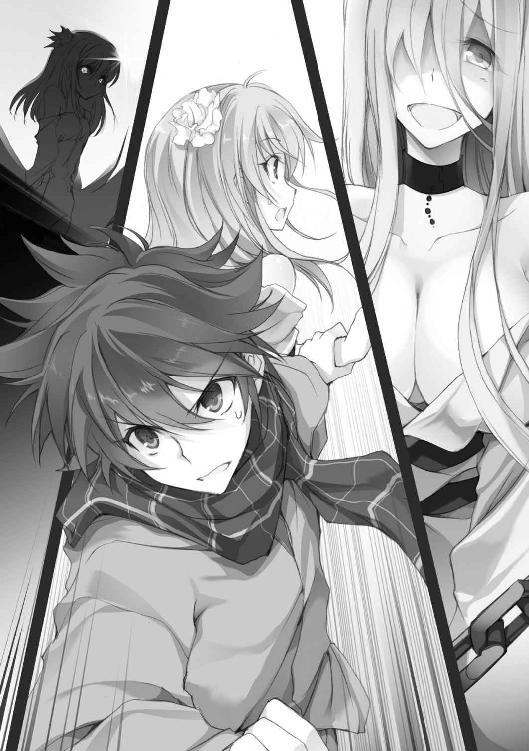
みおりが上げる悲鳴のような声。
その声を耳にしながらも、千歳は唾を呑み込むことしかできなかった。
「そうだ。いつかも、こんなことが......」
フラッシュバック。なにかが脳の奥から這い出てきそうな悪寒――
「千歳っ!!」
みおりの必死の言葉に、千歳は我に返る。
みおりに手を引かれるように、再び駆け出した。
だが、その胸の中に、なにかが強く引っかかっていた。
思い出さなければいけないような、思い出してはいけないような、おぞましいなにか。
――いや、それよりも今は逃げることが先か。
千歳は疑念を振り払い、みおりの前へと出る。
二人の長い影は大通りから、またもや細い路地へ。住宅街を一直線に進んでいった。
追撃は途切れている。《適解》の映像にも、襲撃の未来はない。
「――ここだ」
千歳は十字路の一角にある家の前で足を止めると、ポケットから銀色の鍵を出してドアに差し込んだ。
適解の映像通りだ。逃げ切れた、と考えていいのだろうか。
鍵を開けて玄関に入ると、千歳はその場にぐったりと倒れ込んだ。
みおりはペタンとへたり込み、肩で息をし続けていた。
「どうにか......だな」
「どうにか、ですね」
顔を見合わせ、二人はへらへらと力なく笑った。火照った身体に、玄関の冷たいタイルが心地よかった。
「ところで、ここは......」
「俺ん家だけど」
「へ？」
みおりの表情が固まる。そして右見て左見て、最後に千歳を見て言った。
「ど、どさくさで連れ込まれたんですね」
「嫌な言い方するなよ」
「あの、寝る部屋は別でお願いします」
「ｄｆが貞操を気にするのか......」
「じょ、冗談です。でも、ｄｆである前に女の子ですから」
「なるほど」
千歳は適当に返事をしながら家に上がり、みおりを招き入れた。
既に日が落ちかけて、家の中は暗い。
千歳がリビングの電灯のスイッチを叩くと――みおりが慌てて飛びついてきて、スイッチをオフへと切り替えた。
「だ、駄目ですっ！ 一応、追われてるんですから......」
「そっか......そういえば矢崎さんの保育園でも電気は点けてなかったな」
「はい、わざわざ敵に居場所を教えるようなものです。千歳はもっと慎重に、先のことを考えて行動して下さい」
小動物のように頬を膨らませ、力説するみおり。
「分かった、気をつける。とりあえず温かいものでも飲んで休憩するか」
言うと、みおりの腹の虫が代わりに了承の声を上げた。
「ふぁっ！」
「......ついでだし、飯の支度もな」
千歳は真っ赤になったみおりの頭をぽんと叩いて、キッチンへと入った。
それから５分――
「意外と綺麗にしてるんですね」
二つのマグカップを手に、リビングに戻った千歳に、みおりが無邪気な顔で言った。
「俺、そんなにだらしなさそうに見えるか？」
「えっ!? あ、そういう意味じゃなくて......隅まで掃除が行き届いてるなって」
みおりは少し赤い顔で、出窓に飾られていた写真立てを戻した。
「勝手にすみません。小さい頃の千歳......見ちゃいました」
「いや、別に......」
見られて困るようなものではない。
千歳はテーブルにホットミルクを置き、ソファーに腰をかけた。
「隣に写ってる女の子って、ひょっとして妹さんですか？」
「............」
沈黙。
そうだ、というそれだけの言葉すら出てこなかった。
「......千歳、あの......」
不安そうな顔で、みおりがそっと自分の胸を押さえる。
そうした理由は千歳にもよく分かった。そう、強い感情はｄｆに伝わるのだ。
「色々あったんだ」
そう言うと、みおりは真剣な表情で千歳を見つめてきた。
「なるほど、俺の中から出てきてても、俺の過去のことまでは知らないんだな」
「............はい」
「面白くない昔話だぞ」
「はい」
千歳は湯気を立てるホットミルクに口をつけて一息、重い口をゆっくりと開いた。
そう、目を背けていたものに、恐る恐る向き合うように。
「――俺が４年生の時だ。小学校に入学する前、妹の百希が、ばあちゃんにランドセルを見せたいと言い出した。ばあちゃんの家までは、山を越えて、車で１時間くらい。俺が賛成したのもあって、母さんは承諾した」
知っているままに、千歳は淡々と事実を紡ぐ。
「激しい雨の降る日だった。峠に差しかかってしばらくすると、土砂崩れが起きた。そして、落石を避けたトラックが、俺たちの乗った車の目の前に現れた」
その言葉に、みおりの顔が強張った。
「車は撥ね飛ばされ、俺と百希は車外に放り出された」
「お母さまは？」
「車はガードレールを乗り越えて転がっていったって。新聞記事にそうあった」
千歳は冷静に告げた。
「投げ出された俺は、真っ暗闇の中に転がった。消え入りそうな百希の声だけが聞こえた。俺は這いずって妹の声を辿っていった。そうして――小さな浅黒い塊を見つけた。血がいつまでもいつまでも流れて、止まらなかった」
ぼんやりとテーブルの上を眺めながら、千歳は無表情のまま言った。
「動かさない方がいいのは分かっていた。でも、いくら呼びかけても反応がなかった。だから、必死で揺さぶった」
「......」
みおりはこくりと息を呑む。
「新聞記事によると、妹はほぼ即死だったらしい。土砂崩れのせいで、助けが来るまで２時間かかった。その間、俺はずっと、少し前まで妹だった塊を抱きしめていた」
「............」
「それから俺は、日記に百希のことを綴りはじめたんだ」
千歳は自嘲気味に笑った。
「切られすぎた前髪に癇癪を起こしたとか、寒い日は俺の布団に潜り込んできたとか。俺のおやつをつまみ食いしたとか、ゲームのコントローラーは絶対に放さないとか。怒るとすぐに叩いてくるとか。多分、百希のことを、忘れないように。――けど、そのうち妄想の日々がはじまった」
「妄想......？」
「峠に入る前にコンビニに寄ろうと提案していた自分。そもそも、ばあちゃんの家なんかに行かないと言った自分。日記に、何千、何万のｉｆ、その先にあったはずの未来を書いた」
日記を読み返した時のことを思い出し、言う。
「――でも、そんなことしてれば、誰も俺に見向きもしなくなる。誰とも喋らず、妄想して１日を過ごしてるんだから、当然だよな。まるで、生きながら死んでるみたいだったんだ。親父も、どうしていいか分からなかったみたいだ。それでも......俺は一人でいる方が楽だった」
千歳にとって、それは今も同じだった。
「でも、そんな日々が延々と続いて――丁度半年前の10月25日、俺はふと目を覚ました。病院のベッドの上だった」
「......えっ？」
「なにがあったのか、分からないんだ。事故に遭ったのか、喧嘩に巻き込まれたのか――顔や身体に無数に殴られた痕があって、大怪我を負ってた。それと、目が覚めてしばらく、涙が止まらなかった」
それは自身でもよく覚えていた。
「その時、もう俺はたくさんの記憶を落としてた」
「千歳......」
「......泣くなよ」
小さくしゃくり上げる声を耳にしながら、千歳は優しく口にした。
「でも、やり場のない感情が......痛いって」
「そっか、伝わるんだったな。だけど、今話したことは、『記憶』じゃないんだ。だから、俺が痛いって感じてるのは、きっと過去のことじゃない」
記憶を失って――死んだように生きていた日々から、生まれ変わったのだから。
「俺は、全てを自分の日記で知ったんだ。妹のことも、母さんのことも、嬉しかったことも、哀しかったことも、全部。――それが、痛いんだと思う。でも、こんなに痛いのに、今ではもう泣けもしない」
刹那、耳元に届く嗚咽。首にはみおりの腕が回されていた。
「......みおりが」
みおりが泣く必要なんてない。と続けるつもりだった。
「取り戻しましょう。全部......」
みおりの震える声の力強さに、千歳は唾を呑み込んだ。
「かけがえのない千歳の記憶を――」
「......取り戻す？」
「そうです！」
みおりが耳元で叫ぶ。
「だって――千歳が、記憶を失ったままだったら......百希さんも、お母さんも、消えたままになっちゃいます......」
嗚咽しながら、みおりが言った。涙が千歳の肩を濡らす。
「怖いかもしれないけど、失くしたものを全部取り戻して、生きてほしいです！ きっと百希さんも、お母さまも、そう願っているはずです......」
その瞬間――
千歳は、強く背中を押されたように感じた。
そうだ。
恐れていたんだ。
記憶を取り戻したいと願いながら、怖かった。
元の自分に戻ってしまうのではないかと思った。
でも――
わだかまっていた色々な感情が、突き抜けた気がした。
記憶、家族、人との距離、諦め。そういったものが、みおりの声にかき消された気がした。
死んだように生きたいわけじゃない。
後悔と妄想の世界から抜け出したかった。
苦しいことも、哀しいことも忘れないで、それでも前を向いて、生きていきたかった。
それが千歳の本当の『願望』だ。
それに今、気がついた。
「まったく......」
長い、長いため息。千歳はソファーの背もたれに身体を預けて、天井を見上げた。
「......みおり」
「あい？」
「次の《ゲーム》に出よう」
みおりが千歳からパッと離れ、驚いたような顔を向けてくる。
「やるって決めた。だから、もう泣くな」
「千歳......」
みおりは人差し指で目尻を拭うと、緩やかに微笑んだ。
そして千歳は、
「ありがとう」
と、囁くように呟いた。
＊
物音一つしない静かな夜だ。
入浴を終えた千歳は、その足で冷蔵庫に入っていた牛乳を出し、ストローを刺した。
薄暗闇に包まれた部屋は少し肌寒く、緑の月明かりはどこか落ち着かない。
千歳は片手で大雑把に頭を拭きながら、先に入浴を済ませ、大窓から外を眺めていたみおりの後ろ姿へと目を向けた。
「......そういえば、ｄｆも風呂に入るんだな」
「あ、当たり前です！ ｄｆにだってちゃんと身体があるんですよ。それに、一応女の子ですから......」
パジャマ代わりに貸した大き目のパーカー姿のみおりが、頬を膨らませる。
「なるほどな......って、どうかしたのか？」
「し～っ」
人差し指を唇に当て、みおりは少し怖い顔で言った。
「少し前から、微かにですが......なにか聞こえるんです」
不穏な空気。漂う緊張感。
そして束の間の静寂を経て、遠くの方から、重苦しい金属を引きずるような音が聞こえてきた。
「なんだ、この音......すっげぇ嫌な予感がするんだけどさ」
「き、奇遇ですね。実は私も......」
外の様子を窺いつつ、みおりが震える声で言う。
「聞きたくないけど、これがなんの音か尋ねてもいいか」
「オートバイ、ですね。引きずるとこういう音がするみたいです」
「嘘だろっ！」
「残念ですけど、本当なんですっ！」
いきなり首元に飛びつかれ、千歳はソファーの裏へと押し倒された。
同時、轟音が鼓膜を打つ。投擲されたバイク――その巨大な金属の塊が、壁を抉り、大窓をぶち破ってその姿を現したのだ。
「っな............」
開いた口が塞がらなかった。
押し倒された千歳の真上を黒い塊が横切っていく。そしてテーブルを破砕、床板を割って土埃を巻き上げた。
部屋は一瞬で凄惨な状況になった。
「だっ、だだ、大丈夫ですか？」
折り重なっていたみおりが飛び起きた。
「ど、どうしましょう？」
「みおりが敵の立場ならどうする？」
みおりは一旦深呼吸をしてから、真剣な眼差しを向けた。
「――これだけの破壊力があるなら、適当に攻撃してけん制しながら、相手の出方を見ると思います。こちらの能力も分からないと思いますし、焦れて飛び出してくるのを待つか、確実に一部屋ずつ潰して追い詰めるか――」
「じゃあ、それを踏まえて行動だ。次の攻撃の前に速やかに二階へ移動。追ってくるなら、ベランダから逃げる。《適解》を使えば、状況を打破することは可能だろう。できるだけギリギリで発動しよう」
「わ、分かりました」
素直に頷く。そして――
「よい、しょ......」
速やかな行動。
みおりは膝立ちになると、様子を窺うためにソファー裏からそっと顔を出した。パーカーの裾から零れる丸みを千歳の方に向けて。
「う、ぶっ......」
千歳は慌てて両手で口を押さえた。
「......ど、どうしました？」
「いや、なんでも......」
口元を押さえながら目を逸らし、誤魔化す。
ボリュームのあるカーブと、光沢のある純白は、襲撃者よりもよっぽど凶悪だった。
「......目に毒だ」
しかし、状況が状況だ。千歳はゴツンと床に額をぶつけ、自らの理性を呼び起こした。
「あ、あのっ、なにしてるんですか？」
「なんでもない」
「なら、とりあえず......今なら動けそうです。階段は？」
「リビングを出て右。玄関脇だ」
「はいっ」
みおりは大きく息を吐き出すと、千歳に身体を寄せてペタリと座り込んだ。
と、脇腹に感触。意外と弾力のある、柔らかな膨らみが二つ。しかし、千歳の理性は頑張った。
「いつでもいいぞ」
「はい、それでは――」
息を呑み、一瞬の間を置いて二人は「せーの」で行動を開始した。
リビングを飛び出し、壁に手をついて切り返す。さらには廊下を駆け抜け、２段飛ばしで階段を駆け上がる。
「突き当たりの部屋。ベランダがある」
「はいっ」
前を走るみおりが、乱暴にドアを開けて部屋に飛び込んだ。
そこは12畳ほどの部屋。今は物置として使われていた。
小さな机が並んで二つ。部屋の隅には、空っぽの本棚や、百希と書かれた衣装ケース。それと薄汚れたダンボールが、幾つも積み重ねられていた。
「千歳、こっちですっ！」
部屋の中央、振り向いたみおりが、千歳へと手を伸ばす。暗闇の中、その瞳は既に紫の淡い光を放っていた。
千歳の指先が触れ、みおりの能力を発動する。
「求めし者へ、先見を以て示す――」
瞬時に、千歳の脳裏へと映像が描かれはじめた。
眼球の奥に灯るチリチリとした痛み――
その寸前だった。千歳は目の前で起こった状況に言葉を失った。
みおりの背後、真下から床を突き破って現れたバイクが、その身体を撥ね飛ばしたのだ。
「――みおりっ!!」
思わぬ衝撃と破壊。
繋いでいた手は解け、みおりは部屋の隅にまとめられていた荷の山へと激突した。
契約寸前の解除に、《適解》は跡形もなく消失。
千歳の頭には、映像の切れ端すら残っていなかった。
階下から投げ上げられ、床を突き破ったバイクは大破し、そのタンクから大量のガソリンを撒き散らした。
「――っ！」
ごおっと熱気が渦を巻く。
飛び散った金属片の摩擦で、着火したのだ。
煌めきはじめる炎。まばたきする間に、崩れた箱や小物が炎を纏いはじめた。
「あ......ぐっ、う......」
みおりの細い体躯が痛みに震える。
「みおり、大丈夫か！」
千歳は声を張り上げた。
そして、その時――
「こんばんは、いいよるですね」
ジャリ......と、金属の擦れる音が耳に届いた。
開け放たれたドアの向こう。夕方に見た白い女が、純朴そうな目を光らせていた。
着崩された拘束衣の色は白。そればかりか、肌までもが真っ白だ。
揺らめく炎に照らされたその異様な姿を、改めて千歳は認識した。
異質な存在に対する恐怖が、問答無用で肌を粟立たせる。
ベンチを粉砕し、民家を貫通するほどのアンカーを持ち、バイクを軽々と投石のように扱う力を持つ相手。
到底人間とは思えない力を持ったｄｆ――しかしそれなら欠喚士がどこかにいるはずだが、未だ姿すら見せていない。
「............」
口の中はカラカラに乾いていた。
「あの、わたしとたたかってもらえませんか。できればてかげんもえんりょもなく、ころすつもりで」
素足で近づいてくる女。
当然、千歳に迎え撃つ術はない。その上、相手の能力も分からない。
「......できれば、他を当たってくれないか」
まともに話が通じるはずもないと思いつつ、口を開く。
「ちと、せ......こっち、です」
背後からは、みおりの掠れた声。
だが、
「では、なぎはらいますね！」
いきなり女が右腕を振りかぶる。
見え見えの大きなモーション。
千歳は背後へと転がり、女の腕を避ける。
しかし、本命の攻撃はそれではなかった。
腕を薙いだ余力で引かれた鎖が、ぶうんと重い音を立てる。
「――っ！」
鉄の処女が廊下から部屋に飛び込み、ずどん、という振動と共に壁に突き刺さった。
「あーあ、よけちゃうんですか」
「当たり前だろ！」
喰らえば即死確定と思われる、遠慮のない暴力。だというのに、友達と喋っているかのような気の抜けた会話が、千歳の調子を狂わせる。
と、尻餅をついた千歳の手になにかが触れた。
床を這いずり、必死に伸ばしたみおりの手だ。
「みおり！」
「いきます......っ！」
みおりは歯を食いしばり、千歳の指に自分の指を絡めた。
《適解の公式》、発動。
千歳の中に、60秒先までの正解が描かれていく――
踏み付けにくる女、燃えていく思い出の数々。
そのダンボールの中、いつか家族で囲んだ簡易コンロ。
そして手にする結末は――
「見え――」
「よそみをするのは、かんしんしませんね」
「............っ！」
千歳の目の前、無造作に伸ばされた手が、みおりの首を掴んで無理矢理に立たせた。
「やめろ！」
千歳の制止など聞き入れられるはずもない。
「あ............っうあ、あ......っ！」
ゴミのように投げ捨てられたみおりは、ベランダ側のガラス戸に背中を強く打ちつけ、ぐったりと動かなくなった。
「......では、つぎはあなたのばんです」
ゆらり。女が千歳に掴みかかる。
千歳はその手を払って真後ろへと飛びのこうとしたが、いとも簡単に掴まれ、そのまま投げ飛ばされた。
「――っ！」
床に背中を打ちつけ、一瞬、呼吸が止まる。
まともに戦える相手ではない。
だが、切り抜けるための欠片は、みおりが残してくれている。
「お前の......目的はなんだ。ポイントなら持ってないぞ」
「そうですね、いたくしてもらうことと、みんなをけしていくことでしょうか」
「............」
「でも、もういいんです。いたくしてもらえなかったので、これでおしまいにします」
女が無防備に近づいてくる。
そして不満げな顔で、ゆっくりと片足を上げた。
虫けらのように踏み潰すつもりなのだろう。
「........................」
不思議な沈黙。
女は微妙に頬を染め、
「......したぎ、みえましたよね」
と、拘束衣の裾を押さえながら、改めて千歳の腹を踏み潰しにきた。
その瞬間が、《適解》のくれた合図だった。
踏み抜きにきた素足を転がってかわす。
そして千歳は、傍らにあった火が点いたばかりのダンボール箱を掴むと、思いっきり投げつけた。
「そんなものいくらなげてもむだ――」
「――そうか？」
と、その瞬間。重い銃声のような破裂音が立て続けに起こり、箱の中身が、閃光と共に破裂した。
「......っ、ああ......っ！」
悲鳴。そして散らばる破片。
破裂したのは、中に入っていたカセットコンロのガス缶だ。
「......っく、めが......いた......い。これっ、あつくて、いたいです！」
心なしか艶のある声。女は炎に包まれつつある部屋にペッタリと座り込んだ。
「ほんとうに。あのっ、すごくっ！」
顔を覆う手。その隙間から血が流れているが、見える口は薄っすらと笑っている。
「やってくれますね......」
怒りか、興奮からか。女の息が荒くなっていく。
間合いはたった数メートル。
しかし、千歳は動かない。
いや、動けなかった。炎と煙に覆われつつある部屋の中、頭はがんがんと痛み、吐き気がしてくる。意識を保つだけでも精一杯だ。
そのままゆっくり、女が立ち上がる光景を眺めていた。
《適解》で見えていたのは、ここまでだった。
「これは、おれいをしてあげないと――」
閉じた目から血を流しながら、上唇を舐め、ひた、と女が歩み寄る。
揺らめく炎に照らされた女の表情が、その一挙一動が、千歳の背筋を凍りつかせる。
そして、ゆっくりと伸ばされる手。
しかし――
千歳の首を掴もうとした時、ピタリと女の動きが止まった。
閉じられたままの視線はベランダの先、夜の闇へと向けられていた。
「......いいところだったんですけどね、ますたーによばれてしまいました」
女は軽くため息を吐くと、千歳を見下ろし、細い小指を突き出した。
「また、あそんでください。やくそくです」
破ったら許さない。子供のような笑顔だった。
「......そのうちな」
指切りには応じず、絞り出すように言う。
女は満面の笑みを向けると、助走をつけてベランダから飛び出していった。
「う......」
次の瞬間、千歳は身体ごと崩れ落ちた。一酸化炭素を吸いすぎたのかもしれない。視界がブラックアウトする。
「ち、千歳っ！」
飛び込んできた柔らかな身体に抱きとめられる。
「――みおり......無事だったか」
みおりが名前を何度も呼ぶ中、千歳は安堵の吐息を落とし、意識を手放した。
痍の章
千歳にとっての３日目。
10月25日、午後11時45分。二人は海の底のような、明かりのない町の中心に立っていた。
そこは全てのはじまりの場所となった駅前のバスターミナル。
千歳が目的とするビルは、まさに目の前にあった。
どっしりとした城を思わせる壁面には、１という数字。
あと15分もすれば、更新によってその文字は消え、内部は《ゲーム》の会場となる。
13階建て、中央に大きな吹き抜けを持ったファッションビル。
各フロアを繋ぐのは、ガラス張りのエレベーターが３基と、見晴らしのいいエスカレーターが１基。階段は客が利用できるものが一つと、裏に従業員用のものが一つ。
見栄えのいいシンプルな造りだった。
「痛っ、つ――」
意気込みに大きく息を吸うと、千歳の背中に鈍い痛みが走った。
「あの、やっぱり無理はしない方が......」
「問題ないって、ただの打ち身だ」
もじもじと心配そうに進言したみおりに、千歳は笑顔で応えてみせた。
あの白い女に襲撃されてから２日――
千歳とみおりは、《ゲーム》の開催場所に立っていた。
「ってか......みおり」
「ふい？」
「......お前だって、ほとんど休んでないだろ」
単純に考えても丸一日以上。疲れていないはずがない。
背中のダメージはそれほどでもなかったが、軽度の一酸化炭素中毒を起こしていた千歳を、みおりは燃える部屋からなんとか引きずり出した。
程なく更新によって元通りになった家で千歳を介抱しながら、みおりはｄｆのさらなる襲撃を警戒して、不眠不休で見張りをしていたのだから。
「へっ、へっちゃらですっ！ 人間と違って私はｄｆですから！ 千歳さえ回復してくれれば大丈夫なんです！」
両手を上げて、元気さをアピール。
「ｄｆだけど女の子だって言ってたくせに......」
千歳は苦笑しながら、軽く辺りを見回しはじめた。
「それにしても......誰もいないな」
「はい、既に会場入りしている方もいらっしゃいますので」
唐突な返事があった。
「――お前......」
千歳はいつの間にか隣に並んでいた少女を見やる。
「こんばんは。再びお目にかかれましたことを嬉しく思います」
まさに神出鬼没。
人形は平常運転で、その幼い顔を綻ばせた。
「どうやらお二人も参加されるようで」
「まぁな」
千歳は軽く首肯する。
「でしたら、開始まではまだしばらくありますので、ごゆるりとどうぞ。予定では、24時にビル内にいる方を参加者とし、26時から《ゲーム》の開始となっております」
「ルールは？」
そう問うと、人形は不思議そうな顔で千歳を見上げた。
「情報アプリで公開していますが、この可憐なお口から聞きたいということでしょうか？」
「そっか、だったらスマホで――」
「畏まりました」
人形、満面の笑み。
「本日はこちらのビル内にて《殲滅戦》を行って頂くことになります」
勝手に解説をはじめ、過激な言葉をさらりと口にした。
「ちなみに参加者の皆様には、《ゲーム》開始と同時に、私からボーナスを５ポイント贈呈させて頂きます。ただし、消滅はもちろんのこと、リタイアした場合は没収となります。つまりボーナスだけ受け取って、自らリタイアすることはできません」
「リタイア？」
みおりが問うと、微笑みを以て人形が答える。
「《ゲーム》開始後、ビルから退出した場合は、リタイアとなり、参加権がはく奪されます。一度退出されたら、いかなる理由があっても私が生み出した特殊な障壁により、再びビル内に戻ることはできません」
「つまり生き残るだけなら、交渉や策を練って、中の人間を片っ端から外に出してもＯＫってことだな。危なくなったらポイントを捨てて、逃げることは可能、と」
「そういうことです」
そう言って、人形は片側のニーソックスを引っ張り上げた。
「まぁ、詳しくはまた後ほどということで、私はここで失礼させて頂きます。主催者としての務めもありますので」
穏やかな会釈。人形はその場でくるりと回り、闇にその身を溶かして消えた。
「............相変わらず、神出鬼没だな」
「ですね」
みおりは困ったように頷き、それから小さな声を上げた。
「――あっ、千歳、あれ......」
みおりが指差す方向を見ると、視界の先にＴシャツとジーンズを着た女性――瑤子の姿があった。
「どうやら生き延びていたようだな、少年」
数メートル先まで近づいてきた瑤子がひらひらと手を振る。
「どうにかですけどね」
千歳はため息混じりに笑ってみせる。と、みおりがきょろきょろと辺りを見回しながら、唐突に問う。
「......あ、あの、お一人ですか？」
「いや、すぐに皆も来るだろう」
すると、みおりは慌てて千歳の後ろに隠れるようにして言った。
「えっと、あのっ、千歳、わ、私やっぱり少し休むことにします！」
「え？ ちょ、みおり？」
千歳の返事を待たずに、その姿はかき消えてしまった。
「......急にどうしたんだ？」
怪訝そうな面持ちの瑤子に、千歳も首を傾げた。
「いや......どうしたんですかね」
「――まぁ、それはともかく、少年がここにいるということは、《ゲーム》に参加するつもりなのだな」
「そうです」
「では改めて、保留にしていた答えを聞かせてもらおうか。うちのビハイブに入る気はあるか？」
「――はい、役に立てるか分かりませんが、一緒に戦わせて下さい」
千歳は、瑤子の目を見据え、はっきりと告げた。
「ふむ......この数日でなにがあったのかは知らないが――見違えたな、少年」
瑤子が少し頬を緩めた。
「......大事な記憶を取り戻したいんです。俺はずっと過去と向き合わないまま、未来に進めずにいました。でも......それがどんなに痛くて苦しい記憶でも......取り戻して生きようと、決めたんです」
「そうか、少年の願いは、記憶だったか」
「はい」
目を細めた瑤子も、それ以上は聞こうとしなかった。
その代わりに、まじまじと千歳を観察する。
「あの......矢崎さん？」
「だからこそ、未来を見通す力を得られたのかもな。実に興味深い。やはり少年が欲しくなったよ」
ストレートな物言いに、千歳は面食らった。
「――以前も話したと思うが、私の欠点は、外界と自分の世界を遮断してしまうことだ」
瑤子は大真面目な顔で、千歳の襟元を掴んで引き寄せた。
「しかし、自分の側に囲い込んだものは、全力で守る。私は、ビハイブのメンバーみんなの願いを叶えてやりたいと思っているんだ」
「自分の願いはいいんですか？」
「私の願いは、もう叶っている」
瑤子は涼しげに笑い、その身体を撫でるかのようにして、千歳から手を離す。
「私は――元の世界で得られなかったものを、ビハイブという形で手にすることができたからな」
「どういうことですか？」
「元の世界では、色々うまくいかなくてな。実は、長い間、引きこもっていたんだ」
気さくで面倒見がよい大人の女性だとイメージしていた千歳にとって、それは意外だった。
「私は、外の世界を欲しながら、檻から出られずにいた。けれどこの世界に来て、他者と戦い、仲間を作り、守ることを知った。私にもできることがあった。私の世界は、少しだけ広がった。だから、今の私にとっては――ビハイブを守ること自体が、願いのようなものなんだ」
「矢崎さん......」
「私はいつ戦いの中で果てて、元の世界に戻っても構わない。今の私はきっと、元の世界でも生きていける――だからそれまで、ビハイブのために戦い続ける」
そう言って、瑤子が目を閉じて笑った時――
「千歳さ―――んっ！」
視線の先、闇の中から歩いてくる、10人ほどの姿があった。
その中に、ぶんぶんと手を振る穂ノ香がいた。
「紹介しよう、あれが私たちのビハイブだ。これから最終ミーティングを行う。少年も参加するといい」
瑤子は千歳の肩を軽く叩いた。
「ようこそ、《garden》へ」
＊
閉店後のショッピングビル――それが千歳の抱いた感想だった。
ビルの中心には２Ｆから最上階までを貫く吹き抜けがあり、エスカレーターが隣接している。
吹き抜けを囲む店々はどこも電気を落としており、点灯しているのは通路のフロアライトのみ。薄暗く、あまり見通しはきかない。
ただ、エレベーターやエスカレーターは通常通りに動いており、静まり返った空間には淡い駆動音が響いている。
人形の話によれば、既に中には参加者がいるはずだった。しかし、その気配はない。
みおりを呼び出した千歳は、《適解》の導く通り、二人で７Ｆの本屋のレジカウンター裏に腰を落ち着けることにした。
「みおり」
「はい？」
カウンターから顔を出して警戒していたみおりが振り向く。
結局、みおりは《garden》とのミーティングが終わり、千歳が呼び出すまで、姿を現さなかった。さっき消えた時もそう、明らかに様子がおかしかった。
そのことが、千歳の頭に引っかかっていた。
まるで、なにかを避けようとしているかのようにも思えた。
「......ま、いいか。とにかく、しばらくは様子を見よう。俺たちは《遊撃隊》だ」
「はい」
ミーティングで、千歳の役割は、単独行動の《遊撃隊》として自由に動いていいと決まった。
戦闘経験もなければ、攻撃能力もないｄｆゆえに、無理して戦わず、影から周囲を警戒・援護するのが適切だろうということになったのだ。
「......ってか、はじまってもないのに、緊張で胃が痛くなってきた」
「薬局に隠れるべきでしたね」
千歳が苦笑すると、短いハウリングと共に館内全域に向けてのアナウンスがはじまった。
『お待たせしました。只今、時刻は26時となりました。《ゲーム》を開始致します』
人形の薄ら笑いが目に見えるような声だった。
『参加者は、こちらの世界にいる欠喚士２２１名中25名。既に皆様の端末には、私からボーナスを５ポイント贈呈させて頂いておりますので、戦略の一部としてご利用下さい。ただし、こちらはリタイアされた場合には没収となりますのでご注意を』
淡々とルールが語られていく。
『また、参加後に一度でもビルから退出された方は、特殊な障壁により二度と会場には戻れませんのでご注意下さい。なお、制限時間は日の出の５時57分となっております。その際、所持しているポイントが１００に到達している方がいらっしゃいましたら――《王の称号》を贈呈させて頂きます』
「――どうして人形は、こうまでして俺たちを戦わせようとするんだろうな」
「............」
素朴な千歳の疑問に、みおりが首を振って応える。
とにかく戦って生き残らなければ、その答えも永遠に謎のままだ。
25名に５ポイントずつということは、この一度の《ゲーム》で、称号を手に入れることも可能ということになる。
目の前に分かりやすく餌を吊るすかのようなルール設定。
千歳はそれが気に入らなかった。
『それではご検討をお祈りしています』
と、プツンと音を立て、アナウンスはあっさりと終了した。
「......参加者は25名って言ってたよな」
少しの思考を挟み、千歳は言った。
「確か、矢崎さんのビハイブって......」
「俺を入れて12人」
「ほぼ半分が仲間ってことですよね」
みおりは膝を抱えて座り、少しほっとしたように言った。
「で、俺たちはどうやって動く？」
「あの、なるべく誰とも戦わないようにしましょう」
それから小さな声で「戦いには向いてない能力ですから」と付け加えた。
それは、あの白いｄｆみたいなのに狙われたら、逃げることはできても倒すことは難しいということに他ならない。
「そうだよな......できれば矢崎さんたちの援護ができるといいんだけど」
「では、残りが２時間になったら、３階の衣料品店に火を点けましょう！」
「............は？」
恐ろしく人道的に問題があった。許されるのは世紀末か戦国のどちらかだ。
「燻されて逃げてきた人たちを優しく介抱しつつ、外に逃がしてあげればいいと思います」
「..................そうだな」
才覚溢れる過剰な素敵アイディアに、千歳は少し引いていた。
と、その時――
「あがぁあっ、あぐっ、ああぁぁあ......」
突然、吹き抜けに響き渡ったのは、日常では聞きようのない鮮烈な叫び声。
反射的に顔を見合わせる。
「あのっ、い、今のって......」
「――上の階か。早くも戦いが始まったらしいな」
千歳がスマホの［エリア情報］を確認すると、参加者25名のうち、名前も明らかではない人物が《消滅》したことになっていた。《garden》のメンバーは、まだ全員健在らしい。
と、みおりが落ち着かない声で言った。
「――冷たい言い方かもしれませんが、ここは夢の中のようなものですから......」
「そうか......死んでも元の世界に帰るだけ、だったな」
そして、みおりが手のひらを差し出していることに気付き、その指に自分の指をそっと絡めた。
「ともかく、《適解》で不用意な接敵を避けつつ、安全な場所へ移動する」
「はい」
小さく頷いてまばたきを一つ。みおりの瞳が紫へと染まると、二人の頭の中に解答が描かれはじめた。
非常灯のみの店内。本棚に沿って速やかに移動する二人の姿が描かれる。
早速だが、ここから移動することが正解ということらしい。
千歳に背を向け、みおりが立ち上がる。
「......行きましょう」
繋いだ手がぱたぱたと振られる。千歳も腰を上げた。
見えた映像に倣い、背の高い新書の棚の陰を連なって走り出す。目指すは本屋の奥のにある階段だ。
実際に動きはじめると、緊張感が一気に高まった。
敵は13人。
果たしてどんな能力者たちが待ち受けているのか。
千歳は足音を立てないよう、細心の注意を払う。
みおりに引かれる手は汗ばみ、呼吸が荒くなった。
そんな時だった。同じフロアと思われるどこかから、重苦しい扉が開く音が耳に届いた。
早速、最初の敵が現れたらしい。
＊
生々しい悲鳴と、金属の扉の音が響いた。
「――はじまったか」
瑤子が呟くように言った。穂ノ香は瑤子の視線を追って、遥か上階を見上げる。
吹き抜けの直下、２Ｆのアトリウム。
《garden》のメンバー、千歳を除く11名が集合していた。
そんな中、瑤子は唐突に胸いっぱい空気を吸い込み――
「ビハイブ《garden》の矢崎瑤子だ！ 《ゲーム》参加者に告ぐ。残念だが今回は諦めろ。我々はこれから総攻撃に出る。容赦はしない。消えたくなければ、すぐにリタイアを選択しろ！」
吹き抜けを通し、全てのフロアに響き渡る声を上げた。まるで拡声器だ。
それは、この会場にいる全員への大っぴらな宣戦布告だった。
「......大胆ですね」
穂ノ香が呆れたように言うと、瑤子が片眉を持ち上げて笑う。
「千歳さんは苦笑いしてるんじゃないですか。挑発するのはやめてくれって」
「いや、少年たちの能力では、自分たちから戦いを仕掛けたり、無暗に動くことはできない。こうして相手を多少挑発した方がやりやすいと思ってな」
「でも心配です。一緒のチームになればよかったのに......」
穂ノ香は頬をプーッと膨らませた。
「そう言うな。穂ノ香も本格的な戦闘ははじめてだろう？ 私からあまり離れるなよ」
一通り、メンバーの顔を見回して、瑤子がニッと笑う。
「では、我々もそろそろ動くとしよう」
全員の表情がきゅっと引きしまった。穂ノ香も心持ち、背筋を伸ばす。
「いいな、詳細は既に話してある通りだ」
瑤子が予め通達していた内容を改めて口にする。
「各々が受け取った仮ポイントは、基礎能力の高いｄｆを持つ穂ノ香にまとめ、私が守る。敵の狙いが絞られる分、こちらも対応しやすいだろう」
そして一呼吸。
「では、まず私を含むＡ班５名は、エスカレーターと従業員用の階段を使って、各階をしらみ潰しに回る。Ｂ班６名は地下駐車場へ」
キビキビとした指示に、それぞれが真剣な顔で頷いた。
「再集合は２時間後だ。危なくなったらリタイアして構わない。各自、安全を最優先に行動するように」
「はいっ！」
穂ノ香はコクリと唾を呑み込むと、ぱしっと頬を叩き、気を引きしめた。
穂ノ香はＡ班、矢崎瑤子と行動を共にするのは安心だが、ポイントを預かるという重大な責任を負っている。
それでも、ビハイブのみんなと共に生き残って、願いを叶えてみせる。
「待ってて、お姉ちゃん......」
穂ノ香は呟き、深呼吸とともに思い出す。
半年前、突然いなくなってしまった姉の顔を。
きっと自分のせいだ。だから、ちゃんと謝りたい。
発端はそう、些細なことだった。よくある姉妹喧嘩のようなもの。
あの日、受験を控えていた穂ノ香は、友達や勉強や部活がうまくいかなくて、苛々していた。
それを愚痴っているうちに、今まで溜め込んでいたものが噴き出してしまったのだ。身体が弱く、ずっと入退院を繰り返してばかりの姉に。
お父さんがいなくなったのは、お姉ちゃんのせいだ。
お母さんが私を見てくれないのも、お姉ちゃんのせいだ。
私はお姉ちゃんのせいで色んなことを我慢しているのに。
そのせいで、友達とも遊べなかったし、自由じゃなかった。
溜まっていた鬱憤を言葉にしてぶつけた。
先のことばかりを考えて、不安ばかりを口にするお姉ちゃんが嫌いだ、とも言った。
穂ノ香は言いながら、どんどん自分のことが嫌いになった。
本当はお姉ちゃんのことを大切に思っているのに、お姉ちゃんが生きていてくれて嬉しいはずなのに。
感情が爆発して、周りが見えなくなって、相手に叩きつけてしまう。
しばらくの間、姉はただ黙って聞いていた。
それでも最後に、
私は、穂ノ香が羨ましいな。
酷くつらそうな顔で、姉はぽつりと言った。
そして翌日――穂ノ香の姉は、こつ然と消えてしまったのだ。
「――帰ってきて、お姉ちゃん」
穂ノ香は自分に強く言い聞かせた。
この戦いは、絶対に負けられない。
《garden》の仲間と一緒に、最初の《ゲーム》を生き抜いてみせる。
しかし、そのたった２時間後――想定外の事態が起きていた。
２Ｆ。
静かな闇に、外灯の淡い光が揺れるアトリウム。
集合時刻の直前、地下駐車場へ下りたＢ班６名中の４名が、いずれも一瞬で《消滅》した。さらに２名がほぼ同時にリタイア。
焦った瑤子が［エリア情報］を確認しながら、１Ｆに下りた矢先――
「ばかな......っ！ 全員リタイアしろっ！」
瑤子の鋭い声と同時に、１Ｆのエントランスホールから２Ｆへと伸びるエスカレーターのど真ん中に、自動販売機が投げつけられた。
吹き抜けに響く音が、鼓膜へと突き刺さる。
瞬間、２Ｆに残っていた穂ノ香は駆け出し、エスカレーター脇から身を乗り出して階下の１Ｆホールを見回した。
そこにいたのは瑤子、そしてｄｆの園――
二人は、自動販売機の飛んできたと思われる薄暗い通路を凝視していた。
沈黙による静寂。
恐ろしく長い数秒。
その見つめる先に現れたのは、穂ノ香と同年代の少年だった。
目にかかる色素の薄い髪、口元には薄ら笑い。綺麗な顔立ちだというのに、穂ノ香はその少年に嫌悪感しか抱くことができなかった。
「久しぶりだってのに、リタイアはねぇだろ」
ポケットに手を入れたまま、少年が拗ねたように言う。
「くっ......」
気おされ、ジリジリと後ずさる瑤子。そこにいつもの余裕はない。
「瑤子さんっ！」
「私に構うなっ、穂ノ香、早く逃げろ！」
少年から目を逸らすことなく、瑤子が叫ぶ。が――
「逃がすわけねぇだろ」
少年はそう口にし、気だるそうに穂ノ香の方を見上げた。
同時に、穂ノ香の背後から異様な気配と、驚く声。
反射的に振り向くと――そこには、異様な風体をした、白い拘束衣の女がいた。
Ａ班の仲間３人が慌てて距離を取ろうとした刹那、女は、アトリウムを照らす大きな外灯を簡単に引き抜き、バットのように振り抜いた。
「かっきーんっ！」
軸足に踏み抜かれた冷たい大理石。外灯の先端が抉った傷跡の曲線。
「嘘......」
穂ノ香は我が目を疑った。
今の今まで一緒にいた仲間が――目の前で吹き飛ばされていった。
直後、柔らかなものが１Ｆの床に叩きつけられ、ぐしゃりと潰れる音が届いた。
「よくとびましたね」
頭の中は、真っ白になっていた。
ただ、立ち尽くす。目の前の白い女の存在に呑み込まれるかのように。
彼女の両手首を拘束している長い鎖。その先には、不気味な金属の塊が繋がっている。
呆然と階下を見る穂ノ香。
ｄｆすら出す時間なく倒された３人の仲間だった塊は、もうぴくりとも動かない。
ひしゃげた身体から、止めどなく血が流れていく。
やがて、その存在がうっすらと色を失くし、消えはじめた。
音もなく掻き消えた。文字通りの《消滅》。
血溜まりだけが、そこに残っていた。
「洸水、貴様......」
階下から、瑤子が腹の底から絞り出すような声を発する。
「いつからここにいた？ 《ゲーム》開始時、［エリア情報］にお前はいなかったはずだ！」
「あ？ 遅刻してさっき来たばっかだからな。この《ゲーム》会場、一度リタイアしたら二度と入れねぇらしいが、少々の遅刻参加なら認めるってクソ人形がほざいてた」
「......なるほど、人形らしい適当さだ。合点がいった。駐車場にいた私の仲間をやったのは、お前だな......」
「どいつらか分かんねぇけど、そこらにいた４人は殺した。２人の女は吹っ飛ばしてビルの外に飛んでった。そうだよな、歪」
洸水と呼ばれた男が、指折りながら言うと、穂ノ香の目の前の女が首を傾げた。
「さあ......わたし、けいさんはにがてですから」
つまり、目の前にいるこの恍けた異様な女が、洸水という男のｄｆで――仲間の仇ということだ。
穂ノ香は強く唇を噛んだ。と、その時、
「あなた――」
両手を繋ぐ鎖を揺らしながら、女が穂ノ香に近づきはじめた。
「――っ！」
ただ見つめられている。それだけだというのに、穂ノ香は心臓を鷲掴みにされるかのような感覚に囚われた。
「きれいなめですね。ぞくぞくします。すごくふかい。すいこまれそうです」
息がかかるほどの距離。女は唇を舐めると、墨を落としたような瞳で穂ノ香を覗き込んだ。
「あ......」
殺される。
と、頭の中のどこかで認識する。
動けなかった。伸ばされた女の手は凶刃にしか見えなかった。が――
「......おい、歪」
「あ、はいっ！」
穂ノ香に触れる寸前、ビクッ、と女の動きが止まった。
「そいつはいつでも殺せる、先に矢崎をやるぞ」
「しかたないですね。またあとで」
囁くように穂ノ香に告げ、ガラスの柵をひらりと飛び越えた女が、綺麗に１Ｆに着地する。
同時に追従して落下した金属の塊が、フロアを叩き割った。
「......園、やるぞ」
「はい」
瑤子と園の声がホールに響く。
「――穂ノ香、私が時間を稼ぐ。今のうちにリタイアしろ」
「っ......はっ、はっ、はあっ、は......」
上手く呼吸ができず、穂ノ香はその場にぺたんと座り込んだ。
情けないほどの安堵感。
足に触れるフロアの冷たさだけが、現実味を帯びていた。
＊
片側に吹き抜け、もう片側に雑貨店を持つ通路。
千歳とみおりは、遥か階下のアトリウムを見下ろしたまま動けなくなっていた。
そこに広がっているのは、悪夢のような光景――
「あ、あのｄｆ......」
「思い出させないでくれ」
［エリア情報］は、既にビルに残った《garden》の仲間が、瑤子と穂ノ香だけになってしまったことを表示していた。さらに、そこに突然追加された情報に、千歳は戦慄する。
一昨日、圧倒的な力を見せつけられた相手。
白いｄｆの姿と、その欠喚士の名――時戸洸水。
サチコ曰く、許しを請う暇があったら走り出せと聞いた相手。
「千歳......」
恐怖からか、みおりの顔が青ざめ、震えている。
無理に戦わなくてもいいと言われている。しかし、この状況で瑤子と穂ノ香を見捨てて逃げ出すわけにもいかない。
「――行こう、二人が心配だ」
「はい」
強く頷き、みおりが口元をきゅっと引きしめる。
「――行きましょう」
《適解》を発動させるため、右手を差し出すみおり――しかし、唐突に、なにかに引っ張られるかのように、尻餅をついた。
「ひぎっ!?」
「みおりっ!?」
そのまま、みおりは強い力に引かれるように、床を滑りはじめた。
「なっ、なんですかっ！ ちょっとっ！」
千歳が反射的に手を伸ばす。が、間に合わない。みおりはものすごい勢いで、背後の雑貨屋の奥の暗闇へと引き寄せられ――
「......へへっ、捕まえたぞ」
鼻にかかる高い声。ペッタリとした頭に、フレームなしの眼鏡。靴音を鳴らして現れたのは、見るからにインドア派という痩身の男だった。
そしてもう一人は、女。くすんだチュニックに、黒いケープ姿は、まるで陰鬱な魔道士のようだった。
「......ごめんなさい、捕まっちゃいました......」
「............」
下唇を噛む千歳。
その眼前、距離にして５、６メートル。通路を挟んだ薄暗闇の中、みおりがなんらかの力に囚われているかのように、捕縛されている。
こんなところで足止めされている場合じゃない。一刻も早く、矢崎さんと穂ノ香の元に向かわなければいけないのに。焦りだけが募る。
「......人質を取ってどうする？ 大してポイントは持ってないぞ」
千歳はポケットからスマホを取り出し、つまんだままブラブラと揺すってみせた。
《ゲーム》初参加の千歳は、最初に得たボーナスの５ポイントしか持っていない。それは相手もスマホの情報から分かるはずだ。
「話が早いな、で、でもポイントだけじゃない」
下卑た笑いを浮かべ、男が言う。
「い、今......下で戦ってる奴――共喰い野郎を知ってるか」
「時戸洸水のことか？」
千歳が返答をすると、男はニヤリと口元を歪めた。
「お......お前が行って、僕が逃げる時間を稼げ」
「へっ!?」
突拍子もない要求に、千歳は目を丸くした。
「この《ゲーム》にあんなのが出るなんて聞いてなかった。僕の安全のために、戦ってこい」
「俺にあんなのが倒せるかよ」
「たっ、倒せるわけないだろ。囮になるんだよ......じゃないと、お、お前らもさっきの奴みたいに消してやる」
思い当たったのは、先ほど響いた叫び声の主だった。
「いいか、あれをやったのは僕なんだ。こいつの能力があれば、敵を簡単に捕まえて動けなくできるんだ」
目を血走らせた男が声高に言った。
「――マスターの命令には従った方がいいよ。荒事はしたくない。私に君たちを消させないで」
フードの奥から、ｄｆが口を開いた。
「命令ね」
千歳は吹き抜けの方へと目をやった。
「......ところで、そんな能力があるなら、それで共喰い野郎を捕まえればいいんじゃないのか？」
「や、やれるならやってるさ」
男が忌々しそうに千歳を睨む。
つまり、純粋に共喰い野郎が怖い。もしくは、ｄｆにそれだけの力がないのだろう。
と、そこに、
「私を捕らえてる、この力......あ、あなたの能力は――引力、ですよね」
苦しそうなみおりの声が割って入った。
「あ？」
同時、ｄｆと欠喚士が、声の主へと顔を向けた。
「推測ですが......視線か、実際にコントロールできる糸のようなもので、対象を拘束して引き寄せる。とっても卑怯で便利ですね。それなら、スマホや端末をどんどん引き寄せて、簡単にポイントを集められますし」
淡々と、だが確信した目でみおりが続ける。あえて責めるような、挑発するような口調だった。
「きっとあなたの欠点は、誰からも相手にされず、それでも誰かを側に引き寄せたいという孤独さから――」
「うるさいっ！」
男は、側に座るみおりの髪を掴んで顔を上げさせた。
「か、勝手に喋るな」
「............」
《適解の公式》の弱点――それは、二人が触れ合える位置にいなければ、発動すらできないということにあった。
つまり、引力を持つこのｄｆは、千歳とみおりにとっての天敵ともいえる。
千歳は肩の力を抜き、ため息を零した。
「......分かった。お前の言う通りにする。ポイントも渡す」
「さ、最初からそうすればいいんだ。さっさとスマホをこっちへ寄こせ」
手を前に出し、男が愉快そうに笑う。
が、その瞬間に、千歳は確信した。
みおりがなぜ、わざと欠喚士を挑発するようなことを言ったのか――そこには必ず意味があるはずだった。
そして千歳は、既にその中に隠されたヒントに気付いていた。
合図は、俯いたみおりが小さく頷いた刹那。
「――ほらよ！」
千歳はいきなり、スマホを明後日の方向へと思いっきり投げつけた。
「な、なにを――」
男が慌てふためく。
同時に、フードのｄｆが投擲されたスマホに向かって手を伸ばす――と、見えない糸に絡み取られたように、スマホが空中で静止した。
「よし！ 引き寄せろ！」
男が叫んだ瞬間――みおりがわずかな隙を突き、背後に立つｄｆへと、思いっきり肘を繰り出した。
漏れ出た小さなうめき声と共に、ｄｆが床に崩れ落ちる。
そして残された男が振り向いた直後に――
「あがぁっ！」
千歳は両足を揃え、その顔面へと華麗なドロップキックをお届けした。
「形勢逆転、だな」
仰向けに倒れ、ピクリとも動かなくなった男の上で、千歳は腰を擦る。
みおりが教えてくれたヒント。
彼らの能力は、みおりの言った通り『対象と、自分を引き合わせる糸』で間違いなかった。
ただポイントを集めるだけなら、見えない場所や離れた相手が持っている端末を、無差別に引力で引き寄せてしまえばいい。
しかし、それができないということは、目で見える対象、限られた範囲にしか力は働かないということだ。
それに、みおりを拘束された状態で、千歳はスマホを手に取って見せていた。にもかかわらず、それを強引に引き寄せなかったということは――恐らく出せる糸は一つだけ、引力で捕まえておける対象は一つだけ、ということだ。
「そこのｄｆ、動くなよ」
えげつないと、思いつつも、千歳は気絶した男の首筋に、自分のマフラーをくるりと巻きつけ、両手に持った。
ｄｆが再び力を使って欠喚士を引力で引き寄せれば、自動的に首が絞まる。
「......そちらの要求は？」
ｄｆが歯を噛みしめる。状況を覆された不満からか、不甲斐ない使役者への苛立ちかは分からない。
そこに、みおりの冷静な声が響いた。
「あなたの使役者には手を出しません。《銘》を教えて、待機状態に戻ってもらえるなら、このままビルの外に出して、リタイアさせてあげます」
欠喚士がこの世界で死ねばｄｆもろとも消える。ｄｆは欠喚士から生命力を得ることで存在できる。
ｄｆにどんな能力があろうと、欠喚士を押さえるのがこの世界での戦い方でのセオリーであることを、千歳は今さらながら改めて実感した。
「............」
数秒の沈黙の後、
「......分かった。敗北の証として教える。私の銘は《手繰る糸巻》だ」
渋々といった声で女は了承し、その姿を空気に溶かしていった。
「ま、そもそも殺すつもりはないけどな」
千歳はニッと笑って立ち上がると、男の懐に手を入れ、スマホらしき端末を取り出した。
「せっかくだから初勝利ってことで、ポイントだけもらっておこう」
千歳が端末を操作すると、みおりが焦ったように口を開く。
「急ぎましょう、千歳。でないと、ほのちゃんたちが......」
「......ほのちゃん？」
「え......あのっ、矢崎さんたちが危ないですから！」
わたわたと慌てて訂正するみおりに違和感を覚えながらも、千歳は頷いた。
＊
高い天井と、建物を支える柱が並ぶ１Ｆ。
ビルの顔ともいえるその場所は、小さな噴水のモニュメントを中心に、大理石の敷き詰められた通路が張り巡らされていた。
その一角――鉄の処女のアンカーを避けた瑤子は、巨大な柱を背にしつつ苛立たしげな声を上げた。ｄｆの園は床に膝をつき、向こうを窺っている。
「まったく......お前が《ゲーム》に参加するとはな。興味なかったんじゃないのか」
「そりゃてめぇもだろうが」
返される洸水の声にも、同じ感情が滲んでいた。
「どうして今日に限って現れた？」
「オレの勝手だろうが。退屈してたんだよ」
「こちらは総崩れだ！」
感情をむき出しに、瑤子が叫ぶ。
次の瞬間、再び投擲されたアンカーが柱を砕くと同時に、瑤子と園は飛び出す。
「全部、お前が潰したんだ」
瑤子は対面の通路にいる洸水と、その横にだらしなく佇む白い拘束衣のｄｆ――歪へ睨み殺さんばかりの眼光を向けた。
「そりゃ悪かった。てめぇがそんなに願いを叶えたがってたとはな、知らなかったぜ」
「......私の願望など、とっくに叶っているさ。私は自分だけの世界から抜け出すことができた」
「あ？ んじゃ、どうしてここにいんだ？」
「......恩返しだ。皆の願望を叶える礎になる」
「ふん、殊勝じゃねぇか」
「守ろうとする私と、壊したいだけのお前は、所詮相容れない存在だ」
瑤子は消えていった仲間が残した血の跡を見つめ、奥歯を噛みしめた。
「ああ、だから――存分に殺し合おうぜ！ やれ歪！」
再び繰り出された横薙ぎのアンカー。
凄まじい勢いで襲いくる鉄塊。
「園！」
しかしそれを、園の創り出した遮断の盾が弾いた。
歪が嬉々とした声を上げる。
「ああっ――こうすいさま、あたりませんっ！ あのひとたちなら、わたしをいたくしてくれますかね!?」
再びアンカーを引き戻した歪が、洸水の方を振り返った。
「その嬉々とした顔はやめろ、変態が」
「だってっ」
「――さぁ、歪も楽しみにしてる。いつまでも逃げてねぇで、《遮断の棺》を見せてみろよ」
「............」
しかし瑤子も園も動かない。
「......まったく、厄介な相手だ」
瑤子は独りごちる。
知っている。
歪の銘は――《反撃の魔獣》。
歪への攻撃は、一度きりしか許されない。
能力の効果時間は不明。しかし、それが致命的な時間であることは明白だ。
なぜなら攻撃を喰らった瞬間、歪の防御力と攻撃力が急激に上昇するからだ。
つまり、一撃で歪の首か胴体を確実に切断し、戦闘不能にできなければ、二度目の攻撃は通じない。
あるいは、歪の中にある受容石をどうにか破壊するか、使役者である洸水を真っ二つにするしかない。
だが、歪の攻撃を掻い潜り、洸水を狙うのは現実的ではない。
ならば――
「――園っ」
瑤子が叫ぶ。
その声に応じ、園が両掌を上げ、二つの遮断面を展開する。
一つは歪の首の高さ。もう一つは自分の正面に盾として――
「みえみえですっ！」
遮断面をステップで避ける歪。園が歪を追って猛然と飛び出した。
その様子を眺めつつ、洸水が吐き捨てるように言った。
「どうして本気でこねぇんだ？」
「なんのことだ？」
「さっきから二つしか使ってねぇ。てめぇのｄｆが同時に描ける断面は、もっと多かったろ」
「必要ない」
瑤子は鼻で笑う。その視線の先、園が歪に迫る。
「つぶされてくださいっ」
ぶうん、とアンカーを振り回す歪。
見切ってかわした園が、さらに歪の首を狙って遮断面を展開する。
中空へと大きく跳ねてかわす歪。
それを見た園の仮面から見える口角が、上品に上がる。
次の瞬間、歪の頭上にも遮断面が展開されていた。
「ぶひぃっ！」
ゴツン、と鈍い音。
跳ねた勢いのまま、歪は頭を強打し、床へと落ちる――
「あの馬鹿......」
洸水が首を振り、手で顔を覆う。
これが狙いだった。
どんな相手にも無防備な瞬間は必ず存在する。
着地の瞬間。
そこには既に展開された三つの点が、歪の首の高さに遮断面を描き出していた。
甲高い、遮断の金属音が鳴り響く。
しかし――
「はぶっ!!」
歪の首は、繋がったままだった。
着地できなかったのだ。
皮肉としか言いようがない。瑤子の仲間の血の跡が、歪のつま先を滑らせた。有り体に言えば、無様に転んだのだ。
滑った歪は側頭部をフロアにしこたま打ちつけ、その場にゴロゴロ転がった。
「馬鹿な......」
瑤子がポツリと零す。手にしかけた勝利は、その時点で敗北へと裏返っていた。
致命傷どころか、手傷すら負わせることができなかった。
「あーっ！」
瞬間、歪の泣き出しそうな声。
あまりに寸前で断面を避けたがために、前髪の左側がすっぱりと切り落とされてしまったのだ。
「えっと、これってまけですか!?」
頭を擦りながら起き上がった歪が、不恰好に洸水の元へと駆け寄った。
「ここ、みてください！ まえがみがやられました」
「あ？」
「かみはおんなのいのちです」
「うるせぇよ」
洸水が不機嫌そうに歪のお尻を膝で小突いた。
「はうっ！」
「いいから片づけてこい。一度斬られりゃ、しばらく同じ攻撃でやられることはねぇ」
「あっ、はぁい。そうしますっ」
恍けた顔。悦に満ちた小さな吐息。一瞬で空気に溶けて消えたそれは、明らかに黒く色づいていた。
そして歪は――特攻してきた。
園は瑤子を守るために遮断面の盾を展開する。
「いっきまぁあぁぁすっ!!!」
大振りの右。
盾が成立すると同時に、歪の拳が盾に打ちつけられた。
瞬間、時が止まる。ピンと張った糸のような刹那の時間。
氷に走るひびによく似た音が響く。
そして――
「ぶっふぅううぅっ！」
歪が頬を膨らませながら、黒く濁った息を吹き出した。
「もうひとぉおっつ！ いっきまぁぁああぁっす!!!」
歪の拳が、さらに盾を穿つ。
「あ......」
どこか力の抜けた声が、瑤子の口から漏れた。
その目には――園の身体を突き抜けた歪の細い指先が、綺麗な石をつまんでいるのが映っていた。
「園......っ！」
次の瞬間、受容石は砕け、大理石のフロアでさらに細かい破片となって飛び散った。
茫然。
そして、完全な敗北。
ｄｆの死は、この世界でのゲームオーバーを意味する。
後は、自分も歪によって、殺されるだけだ。
しかし、その時響いた声によって、瑤子は我に返った。
「瑤子さんっ！」
視線の先に、穂ノ香がいた。
「ほの、か......!?」
逃げたんじゃないのか？ どうしてまだそこにいる。
しかし、瑤子のその言葉は声にならず、穂ノ香に届くことはなかった。
＊
「逃げねぇのか？」
と、洸水が言う。
「......逃げたいですよ」
それは、穂ノ香が自ら飛び込んだ死地だった。
瑤子は崩れ落ち、気を失っている。園は消えた。
だからこそ、穂ノ香は洸水と歪の前に立ちはだかった。
手足は震え、喉が渇き、立っているだけで冷や汗が噴き出てくる。
「残念だけど、矢崎は終わりだ。ｄｆを失くせば、この世界に存在する権利そのものを失う。放っておいても消える。戦っても、こいつを助けることはできねぇぞ」
それは分かっていた。
それに、せっかく稼いでもらった時間を使って、生き残るために逃げるという選択肢は、当然あった。
「ええ......でも、やっぱり、逃げるのは性に合わないんで」
「......ほぅ」
洸水は興味深い目を向ける。
「だって、ここで逃げたら、あなたに怯えて、ずっと逃げ続けなきゃいけないじゃないですか。私は考えなしの猛進女ですよ。それも――攻撃に特化したｄｆが生まれてしまうくらいの」
穂ノ香は笑った。
きっとお姉ちゃんがいたら、また無茶だの無謀だの言われるんだろう。
でも戦って、勝って、お姉ちゃんに会って、また文句の一つでも言われたい。
「――槌っ、お願いっ！」
穂ノ香は、その名を呼んだ。
そう、私は一人じゃない――
「......あれ？」
ふと隣を見る。しかし誰もいない。穂ノ香はまだ一人だった。
「えっと、槌？」
嫌な予感に辺りを見回す。と、次の瞬間、視界の片隅に俵ほどの塊が落下してきた。
「びゃあぁあああぁぁあっ！」
心臓が飛び出そうな勢いで、穂ノ香は恥じらいもなく叫んだ。
「なっ、な......」
落下してきたのは、うねる木目に黒い金属をあしらった木槌だった。
「どしたの？」
悪気のない声。穂ノ香が振り返ると、そこにはあっけらかんとした少女の顔があった。
白地に飾りを載せた胴着に、艶やかな濃紫の袴姿。横で一つにまとめた長い髪は、和の趣を感じさせるものだった。
「......っ、槌っ！」
「ふぅん、あれが敵ってことでいいのよね？」
涼しげな視線。穂ノ香のｄｆである槌が、洸水と歪を指差す。
「う、うん」
どうにも緊張感に欠けている。
槌は猪突猛進で、好戦的で、人の話をまともに聞かないところがある。
正直、穂ノ香は槌のそういうところが苦手だった。
自分の欠点から生まれたのだから、無理もないが。
「ね、好きにやっていい？」
不敵に笑う槌。しかし、今はその余裕が心強く感じられ、穂ノ香は頷いた。
「そう、じゃあはじめよっか」
穂ノ香のＧＯに、槌がストレッチを開始する。
「へ～っ、ちんまいのが出てきたが、やれんのか？ 教えといてやるけど、歪の銘は《反撃の魔獣》つって、攻撃を喰らえば喰らうほど、防御力と攻撃力が上がんだぞ」
洸水が面白そうに言う。
「ふーん、面白いね。でも、それ以上に強く殴ればいいんでしょ。こっちもお返しに教えてあげる」
組んだ手を返し、ポキポキと指の関節を鳴らしながら槌が返す。
「私の銘――《気まぐれな玄翁》の能力は、攻撃を当てれば当てるほど、攻撃力が上がんのよ」
つまりこの戦いは――上昇する歪の防御力と槌の攻撃力、どちらが上かということだ。
「槌、無理しないでね」
「どして？ するに決まってんじゃない」
「え!?」
「ｄｆはね、使役者の感情が手に取るように分かんの。アンタ、どうしても勝ちたいんでしょ？」
気のない顔で、あっさりと口にする槌。
「槌......」
「やったげる。少し離れてて」
微笑。
槌は右足を引き、半身に構えて腰を落とした。
大きく息を吸い、長く息を吐き出す。身体の周囲にピリピリとした空気が漂いはじめる。
穂ノ香は慌てて後ろに下がった。
「お待たせ。どうぞ、いつでも」
「ん、あれは使わねぇの？」
洸水が先ほど落ちてきた木槌を顎で示す。が、槌は「重いから」と首を振った。
「おもしれぇ奴」
洸水はククッと短く笑うと、エレベーター脇にある小さな噴水の縁に腰をかけた。
「そんじゃ、オレは見物してっから」
「はーい、おもいきってやられてきます」
入れ替わりに、両腕を繋ぐ鎖をぶんぶん鳴らし、歪が前へと跳ね出る。そして自信の裏返しであるかのように、槌へと無防備に近寄りはじめた。
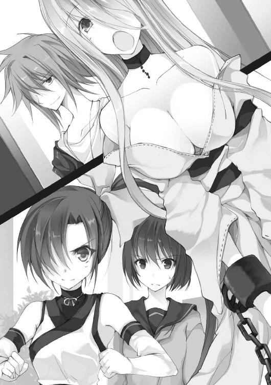
正面、槌との距離にはまだ数メートルの余裕。
油断をしているようには見えない。
しかし、次の瞬間。
歪がもんどり打って噴水の縁に激突したかと思うと、その勢いで跳ね上がり、エレベーターを囲う強化ガラスを突き破った。
パラパラと降り注ぐ粒状の欠片が、水面を揺らす。
「え......」
穂ノ香は我が目を疑った。それが突き出された槌の掌底によるものとは、にわかに信じられなかった。
まるでトラックとの衝突。見てくれからは想像できない剛力に、穂ノ香はその目を奪われた。
「大袈裟でしょ、まだ撫でただけなんだけど」
不敵に笑う槌。
しかし、相手も一筋縄ではいかない。
ガラスの向こう、階下へと落ちた歪が、あっさりと飛び上がって戻ってくる。そして水音を立て、噴水を渡りながら、袖口で鼻血を拭って言う。
「ふひっ、すごいですねっ！ わたしのぼうぎょりょく、だだあがりです」
子供のような笑みだった。あれだけの攻撃を喰らっても、耐えられるらしい。
「そうこなくちゃね、面白くない」
親指を握ってぺキッと鳴らすと、槌は再び腰を落とした。
歪は鉄の処女を引きずり、先ほどと同じように無防備に近づいてくる。
第二局面。
再び縮まる二人の距離。穂ノ香はまばたき一つすることができなかった。
今度の先手は歪だった。
歩きながら雑なモーションでのハイキック。恐ろしく速い。
しかし、槌の動きはそれを遥かに凌駕していた。
まるで魔法か、武術の達人。
襲いかかる左からの蹴りを手の甲で受けたかと思うと、それを右手で絡め取るようにして受け流してしまう。
華麗な捌き。
歪ですら、なにが起こったかを理解できていなかった。
いつの間にか、敵に背中を向けてしまっているのだから。
そして無防備になった背中へ、槌が掬い上げるように触れた瞬間――
「はあっ!!」
歪はピンボールのように打ち出され、天井で跳ね、さらにはフロアを転がって柱に激突した。
まさに剛腕。
「さて、と......」
深呼吸を一つ。槌は肩にかかった髪を払うと、緩慢な拍手を送る洸水へつまらなそうな顔を見せた。
「どう？」
「いい線いってたぜ」
「あっそ」
見下ろすような冷たい瞳で、挑発するように首を鳴らす。
「そういう目、あいつにしてやると喜ぶぞ」
その視線の先では、歪が頬を染めながらフラフラと立ち上がっていた。
「......ただの変態じゃない」
「あ、はい。よびました？」
歪はポタポタとフロアに血を零し、それを足でなすっては黒い線を描いて遊ぶ。しかし、その目は死んでいないどころか、歓喜の色を湛えていた。
「あやうくいってしまうところでした」
恐ろしいほどに真っ黒に濁った息を吐きながら言う。
「でははんげき、いきますかね」
歪はその場でとんとんと跳ねると、着地と同時にフロアを蹴った。
ただ一足。
十分な距離があったにもかかわらず、歪は一瞬で槌の間合いに踏み込んでいた。
「槌っ！」
思わず前に乗り出しそうになる穂ノ香の叫びと同時に、骨の軋む音が響いた。
「穂ノ香――っつ！ アンタは上に！」
交差した両腕で歪の蹴りを受けつつ、槌が叫ぶ。
「でも......」
「いいからっ、アンタが巻き込まれたらそこで終わりなのよ！」
「う、うん......っ！」
穂ノ香は頷くと、中腹に自動販売機の刺さったエスカレーターを駆け上がった。
「本当、世話が焼けるんだから......」
そう言うと、槌は蹴りを受け止めた腕を伸ばし、歪の腕に繋がる鎖を絡め取った。
「よっこい、しょおぉおぉおおっ！」
槌は勢いをつけて鎖を引き、手繰った歪を、反動の掌底で跳ね上げる。さらには浮き上がった身体を、鎖を引くことでフロアへと叩きつけた。
歪は床にめり込み、大理石の破片が飛び散った。
「さ、仕上げね。遠慮なく使わせてもらうから！」
槌はバックステップすると、そこに落ちていた木槌の柄を握った。
刹那、うっすらとした黄色い光が木槌に灯る。
「それ、は......」
歪が顔を上げて槌を見る。
「これまで上がった分の攻撃力が――全部ここに溜まってんのよ！」
槌が空中高く飛び上がり――
「これでっ、お仕舞いっ!!!」
その巨大な塊を振り下ろした。
広がる波紋の衝撃。
地震のような轟音と共に、フロアが揺れる。
大理石の床は、歪を中心に幾つもの大きなひび割れが走り、まるでクレーターのように陥没し、砕け散った。
「――槌......っ」
２Ｆに上がった穂ノ香が、手すりから身を乗り出すようにして、その様子を窺う。と――
ゆらり。土煙の中、槌が立ち上がった。
そして穂ノ香を見て、やれやれという顔で肩の力を抜く。
しかし、次の瞬間。
「あぐあっ！」
足元に倒れていた歪が腕を伸ばし、槌の細い首を掴み、ギリギリと締め上げはじめた。
「にどもわたしのぼうぎょりょくをあげてくれたおかげですね」
「っぐ！」
「ほんとにおしかったとおもいます。もしさいしょにこれをやられてたら、わたしのはずかしいぞうもつとか......みられちゃってたかもしれないです」
声の主がズビッと鼻血をすする。
それから、ゆっくりと起き上がり、槌の身体を片手で持ち上げていく。まるでぬいぐるみを弄ぶかのように。
「槌っ！」
「残念だったな、和服女。本物の化けもんを相手に、よくやったと思うぜ」
静観していた洸水が寂しそうに笑う。
「歪の方が潜在能力が高かったってこった。けど、純粋な力と力の殴り合いってのは、なかなか面白かったぜ」
「......う、くっ！」
吊り上げられた槌が、苦し紛れに歪の顔に膝を入れる。しかし、先ほどの一撃を耐えた歪に効果などあるはずがない。
既に最大の一撃を失った槌には、なす術がないのだ。
「はんげき、いきまぁすっ！」
歪は槌の首を拘束したまま、力任せにフロアへと叩きつけた。
当然、受身など取れるはずがない。
純粋な暴力に、槌の顔が苦痛に歪む。
さらに追撃。大雑把に打ち下ろされる拳が、槌の腹部に沈み込んだ。
「やめてっ！」
目を覆いたくなる光景に、穂ノ香は思わず声を上げた。
「やめませんっ」
再び拳を振り上げる歪。
かろうじて、打ち下ろされる拳の打点を、槌は真横からの掌底でずらして直撃を避けた。
「けりまああぁぁあす！」
どうにか起き上がろうとする槌の脇腹を、歪が渾身の力で蹴り上げる。
「っ、あ......っ」
中空を舞う槌。その落下点は２Ｆのアトリウム――穂ノ香のすぐ側だった。
「槌っ！ もういい、もういいから!!」
「よくないってば......」
駆け寄った穂ノ香を押しのけ、槌がよろよろと立ち上がる。
その目が捉えているのは、既にアトリウムの柵に腰をかけ、鎖を揺らして近づいてくる歪の姿だった。
「......は、はやく......早く下がって......」
穂ノ香を突き飛ばそうとする槌。しかし、穂ノ香はその腕にしがみついた、
「槌、もういいから！」
「馬鹿っ、危な――」
ぶうん、と鎖が鳴り、アンカーが襲いかかる。
「あああああああああああ！」
槌は、穂ノ香を庇い、真正面からアンカーを受け止めた。
しかし次の瞬間、激しい衝撃と共に、二人ともが弾き飛ばされた。
穂ノ香は地面に転がる。
「う......槌......」
顔を上げると、完全に意識を失い、ぼろぼろになった小さな少女が転がっていた。
穂ノ香は床を這いずり、槌のところまで辿り着くと、折り重なるように、小さな身体をきゅっと抱きしめた。
「......ごめん槌、お姉ちゃん......負けちゃった」
穂ノ香はその頬に優しく触れると、薄れていく意識の中で呟いた。
「さて、ではそろそろとどめといきますね」
楽しげな歪の声がアトリウムに響く。
「おい、慌てんなって」
エスカレーターを上がってきた洸水が、歪のお尻を思い切り蹴り上げた。
「いぎゃっ、あ、えっと！ いけなかったんですか？」
「［エリア情報］によると、まだこいつらのビハイブに仲間が一人いただろうが。そいつをおびき寄せる餌にすんだよ」
＊
「到着したらこの状況か......」
２Ｆ――穂ノ香が倒れている場所から、吹き抜けを挟んで逆側。千歳とみおりは柱の陰から、その様子を確認した。
ｄｆが敗北した今――穂ノ香を守るものはいない。
後は洸水の胸三寸。一刻の猶予もない。
隣にしゃがみ込んでいたみおりが、千歳の服を掴んだ。
「あ、あのっ、千歳――」
蒼白な顔、その身体は小刻みに震えていた。
「みおり？ どうした？」
「......ほ、ほのちゃんを、助けて下さいっ！」
再び口をつく、その呼び名。
「穂ノ香のこと、知ってるのか？」
「それは――」
みおりがなにかを押し殺すかのように、きゅっと口を噤んだ。
「......いや、今は時間がない。みおり、《適解》を――」
千歳が手を伸ばすと、みおりはすぐに紫色に変わった瞳を向けてきた。
「先見を以て、今、示します――」
その言葉と同時に、チリチリとした痛みが千歳の頭に生まれ、砂嵐混じりの映像が描かれはじめた。
しかし――
「......!?」
予想だにしなかった展開に、思わず絶句した。
さらに鮮烈な映像は描かれ続け、
「――っ！」
千歳は思わず息を呑んだ。
白いｄｆ――無謀に飛び出す千歳と歪との対峙。
この先、たった60秒間に待つ数奇な流れ。
そして――結末。
未来が見えたのであれば、準じてさえいれば実現はする。
「......やるしかないか」
千歳は、こくり、と唾を呑む。
と、みおりが繋いでいた手をきゅっと握った。
「だ、大丈夫ですか？」
「ああ、任せとけ」
千歳は膝に手をつくと、掛け声と共に立ち上がった。
そして深呼吸を――一つ、
「行ってくる」
千歳は単騎、全速でアトリウムへと飛び出した。
同時に、歪と洸水の目が千歳を捉える。
「歪」
「わかってます」
立ちはだかる歪。洸水の言葉に鼻息荒くし、三日月のような口で笑う。
挨拶代わりに飛んできたのは、鉄の処女のアンカーだ。
だが、千歳は身を屈め、最小の動きでそれをかわす。
洸水が小さな口笛を吹いた。
「――てめぇ、ｄｆか？」
千歳はゆっくりと立ち上がり、改めて洸水に目をやる。
自分と歳もさほど変わらないように見える少年だった。
色素の薄い髪、綺麗な顔立ちの口元には薄ら笑い。
「どう見てもか弱い人間だろ、端末で見てみろって」
と、その時だ。
「こうすいさま。わたしがけせなかったの、このひとです」
歪が千歳を指差していた。
「へ～っ、どんな能力を持ってんだ？ ちなみにこいつ――歪の銘は《反撃の魔獣》な。てめぇの力でやれるか見せてみろよ！」
洸水が心底嬉しそうに禍々しい笑みを浮かべる。
「出てきたってことは、やる気なんだろ？」
「馬鹿言うな」
時戸洸水――サチコの忠告通りの男だということは、千歳にも一目で分かった。
自慢のように《銘》を明かすあたり、なにを考えているかさっぱり分からない。
それに、こんな凄惨な闘いの中にあって、その目は、きらきらと輝いている。
たとえるなら、玩具を見つけたような子供のような、場違いな印象だ。
「......いいか、俺が勝てると思ったら大間違いだぞ」
「あ？」
「５秒だ」
千歳は手を広げてみせた。
「本気を出された時、この頭が飛んでいくまでの時間だ」
「もっとはやくとばしますね」
真後ろからの物騒な言葉。次いで、不意を突いた拳が振り抜かれる。
だが、千歳はそのまましゃがんで攻撃をかわす。
「やっぱりみえてるんですね」
歪が楽しげな声で言う。
分かっていれば避けることはできる。
次に襲いくるのは、真下からの豪快な蹴り上げ。
肌が切れそうなほどの風圧。
さらに蹴り上げの返す踵が、真上から迫る。
頭に焼きついた映像の通り。
間一髪、千歳は打ち下ろされた踵を後ろに転がって避けた。
「っ、危ね！」
叫ぶと同時にもう一発。距離を詰めての右拳を紙一重で見切る。
振り回した腕に付き従う鎖が千歳の頬を掠めた。
「......っぐ」
千歳の膝が悲鳴を上げていた。
「これでおわりですね。ないぞうをぷちまけてください」
歪が振りかぶった貫手。
ただ、その攻撃が千歳の頭に届くことは――ない。
「残念」
「えっ!?」
歪の表情が驚きへと変わった。
「どうして、なにこれ......あつ、い」
肉を叩くような音。胸に開いた指先ほどの穴。一瞬、遅れて響く破裂音。
狙撃だ。
間もなく、歪の拘束衣が鮮やかな色で染まりはじめる。
「どうして、どこから......」
よろめきながら、頬を染めて唇を尖らせ、歪が遥か上階を見上げる。
歪には、見えるはずもないだろう。
しかし千歳は、最上階に止まったエレベーターの上に、佐藤八枝が座っていることを知っている。
そして――もう一人の協力者が、この場にいることも。
千歳はよろめく歪を、力の限り蹴り飛ばした。
転倒した歪は、洸水の足元へと転がる。
瞬間、二人を囲むように配置されたのは、灰色の光。
そして描かれるのは、四つの頂点からなる巨大な三角錐の檻だった。
三点を使った遮断。
そして四点を使った檻。
それが瑤子の能力だった。
「ちっ、まだ生きてたのかよ......」
呆れたように言い、洸水は１Ｆへと続くエスカレーターを睨みつけた。
そこには、血に濡れた園を抱きかかえる瑤子の姿があった。
「園、最後まで面倒をかける」
「はい......」
仮面から覗く口元が、力なく笑う。
これが、千歳とみおりに見えていた光景だった。
「千歳っ！」
足を止めた千歳に、切迫した声がかかる。
振り向くと、気を失った穂ノ香を背負うみおりがいた。
「私たちはじきに消える。そう長くは持たん。少年......穂ノ香を頼むぞ」
穏やかな声が届く。
千歳はただ小さく頷き、みおりを追って、階段へと向かった。
＊
「まさかこんな展開になろうとはな......」
瑤子は園を抱いたまま、崩れるようにエスカレーターの壁に背を預けていた。
聞こえるのは、受容石を失った園の穏やかな呼吸音だけ。
そしてふと目をやると、檻の中に歪の姿はなく、洸水一人だけになっていた。
「――ｄｆは戻したのか」
「仕方ねぇだろ。あのド変態、あれだけの出血でも大喜びで動こうとすんだぞ。しばらく回復させなきゃな」
遮断された空間の中、洸水はゴロンと横になった。
「余裕だな。私が檻を解除して、お前を殺すとは思わないのか？」
「思わないね。てめぇはもう負けを認めた。そういう真似だけはしねぇ」
「ふん......」
瑤子は胸に抱いた園の顔を眺めつつ、小さくため息を吐いた。
「なぁ、洸水――」
「あ？」
瑤子は檻の方を見ずに言った。
「手加減を知らない、なんでも壊してしまうというお前の欠陥が、ここまで凶悪だとは思わなかった」
「ああ、誰もオレに勝てる奴はいねぇかもしれねえな」
「......初期組で生き残っているのは、もう片手ほどになったか？」
「知らねぇ」
素っ気ない応答。
「この世界で最初に誰かを殺したのがオレだってことは覚えてるけどよ」
「ああ、そうだったな......」
瑤子はため息を落とし、当時のことを思い出した。
矢崎瑤子は、《garden》を作る前に、別のビハイブに所属していた。
最初にこの世界にできたそのビハイブは、戦いや争いをやめ、誰も消すことなく《ゲーム》で協力し、ただ生き残ることでポイントを稼ごうという協定を結んでいた。
しかし、そう約束をした仲間が裏切るまでに、大した時間はかからなかった。
油断をしていたものは、その時点で片っ端から殺られた。
そいつを止めたのが、ビハイブに属さず、たった一人でいることを選んだ、洸水だった。
もちろん正義感からではないだろうが、洸水は言った。
――仲間は嫌いだ。だが、裏切りはもっと嫌いだ。
たった半年前のことだというのに、もう遠い過去のようだった。
それだけ、この世界で濃密な時間を過ごしたということなのだろう。
「洸水、あれから、どれだけの人を消した？」
「......さぁな、興味もねぇ」
「お前は本当に変わらないな。この世界に来た時から......」
「なにが言いてぇんだよ」
「まだ探し続けるのか？ お前が壊すことのできない人間を――」
「それがオレの望みだからな」
「だったら、ポイントを集めたらどうだ」
「てめぇは馬鹿か。願いを誰かに叶えてもらったってつまらねぇ。その過程がおもしれぇんだろうが」
「そうか、そういう奴だったな」
瑤子は呆れ顔で洸水を睨めつけた。
「せめて......私が、お前の望むものになり、お前を殺せればよかったんだが」
と、洸水は無言でゴロリと瑤子に背を向け、吐き捨てるように言った。
「いいからさっさと消えちまえ。初期組のよしみで、見届けてやっからよ」
瑤子が吐息だけで笑う。
「やはり私はお前が嫌いだ」
「奇遇だな、オレもてめぇが嫌いだ」
そして、
「先に戻ってろ、そのうち土産話を持ってってやる。覚えてたらの話だがな」
目を閉じたまま、獰猛な笑みを浮かべた。
閃の章
レストラン・美容フロア――
穂ノ香を救出した千歳は、小ぢんまりとした店が並ぶ８Ｆまで上がってきていた。
ここを選んだ理由は、意識の戻らない穂ノ香を寝かせられるリラクゼーションルームがあったことだ。
「とりあえず寝かせておこう」
ゆったりとした大型のソファーに横たわる穂ノ香に、千歳はそっと毛布をかけた。
フットライトだけの小さな部屋は、廊下に輪をかけて薄暗い。
「さて問題はここからだな。時戸洸水とそのｄｆ......」
まずは一息、千歳はこれからのことを考えはじめた。
みおりはというと、穂ノ香の隣にしゃがみ込み、その寝顔をじっと見つめている。
「............みおり？」
「はっ、はいぃっ！」
声をかけると、みおりはビクッと背筋を伸ばして返事をした。
「どうした？ 穂ノ香、怪我でもしてるのか？」
「あ、いえ......そうじゃないんです。そうじゃ、なくて――」
「どうした？」
千歳が聞き返す。と、みおりは伏し目がちになりながらも、なにかを言いたげに、おずおずと口を開いた。
「あの、千歳――」
呟くように紡がれる言葉。
みおりは間違いなく、穂ノ香に関するなにかを隠していて――千歳に伝えたくても伝えられないでいる。抱えているなにかは、それだけ大きなものなのだろう。
「とりあえず廊下に出よう。静かに休ませてやらないとな」
千歳は入り口の方を指差し、外へと歩み出た。
「で、みおり......」
そう言いかけた時だった。
フロアに軽い靴音が響き、千歳、みおりは瞬時に身構えた。
暗い廊下の奥、カツカツと歩み寄ってくる影。
千歳はじっと目を凝らし、ぼんやりとした輪郭を睨みつける。
少女だ。小脇に抱える値札のついた木製のスツール。クラシカルな恰好。見たことのある生意気そうな顔――
「おまえ......」
千歳は肩の力を抜くと、あからさまに嫌そうな顔をした。
「困っているようだな！ あたしが手を貸してやらんこともないっ！」
サチコは手にしていたスツールをフロアに置くと、その上に腕を組んで仁王立ちになった。
「遠慮しておきます」
千歳は即答した。
「このっ、あたしがだっ！ 手を貸してやらんこともない！」
「ちょっと黙っててくれ」
「くっ、お前っ！ なんとか太郎千歳！」
サチコは足を踏み鳴らして癇癪を起こした。
「あ、あなたは......」
二人のやりとりを眺めていたみおりが、まばたきと共に問う。
「ん？」
確かにそうだった、と、千歳は思い至る。サチコと話していた時、みおりは姿を消していた。
「見るな、みおり。動物は目を合わせると攻撃してくるからな」
当人に背を向け、千歳は小さく首を振った。
その瞬間、サチコは椅子から飛び降り、一直線に猛アタックをかけてきた。
「お前っ！ このあたしがっ！ わざわざっ！ 来てやったんだぞ！」
「悪い、ちょっと面倒なことになってて、今は相手をしてやれないんだ」
千歳は詰め寄るサチコを適当にあしらう。
「なっ！ この......千歳めっ！ 散々ちょっかいを出してきたくせに！」
「ちょっかいを？ 千歳が、この子にですか？」
「子供の言うことを信じるな」
「子供じゃない、サチコ様だと言ったろう！」
きゃんきゃんとサチコが耳元で吠える。
「分かったから、黙ってろって」
「サチコ様だっ！」
「ＯＫ、サチコ様、黙っててくれ」
「む......」
サチコは速やかに活動を停止すると、スツールにおとなしく腰をかけた。
「――で、お前、どこから入り込んだんだ？ 洸水と同じで《ゲーム》開始時はいなかったよな」
「ああ、途中参加だ。ボーナスポイントをもらうついでに、千歳を助けてやろうと思ってな！ 感謝するがいい」
「......はいはい」
と、その時だった。千歳はサチコが現れた通路に、さらにもう一人の闖入者の姿を見つけてしまった。
「......そこのスナイパー、それを隠れてるとは言わないぞ」
千歳は通路奥、暗がりの角を指差した。
窮地を救ってくれたあの一撃――その能力が、遠距離からの狙撃であったのは間違いない。
「佐藤だろ」
念を押すかのように名前を呼んでみると、八枝がひょっこりと顔だけを出した。
「......ほのりんは？」
「おかげで無事だよ。今は奥に寝かせてる」
「ん......」
「とりあえず、それじゃ落ち着いて話せないからこっちに来てくれるか？」
千歳が手招きすると、八枝は子供のようにおずおずと物陰から姿を現した。
「――この子が俺のｄｆの、みおりだ」
言うと、みおりが淑やかにお辞儀をする。
「で、こっちが――藤原サチコ野郎様だ」
「四郎だ」
千歳の背にぽかっとパンチが打ち込まれた。
「......藤原サチコ四郎様です。こっちに来て半年くらいの、自称――強くて美しい方です」
「そうだ！ 恐れおののけ」
サチコは腕組みをして満足そうに頷いた。
「そして......」
千歳は、隣でぼんやりとしている少女を手のひらで示す。
「佐藤八枝。昔からこんな感じで、おっとりまったり。なにを考えてるか分からないところがあるけど、悪い奴じゃない」
「ん......」
淡い表情。八枝は千歳をじっと見つめ、それから頷いた。
「一応、俺の元クラスメイトだ。この世界に来てから、矢崎さんのところで再会した」
「再々会は......さっき。危ないところだった」
なんでもないことのように八枝が付け足す。
もっとも、千歳にとっては、最高のタイミングでの再会だった。
「というか、どうして佐藤がここにいるんだ？」
「ビハイブに入るためのテスト。このゲームで生き残れって......」
「ああ、《union》か」
サチコはそう言うと、ポケットから飴玉を取り出し、口へ放り込んだ。
「ユニオン？」
「もご......テストがあるのは、芙蓉姫子のビハイブ――ユニオンだ。あそこは化け物揃いだからな」
「詳しいな」
千歳が感心したように言うと、
「当然だ」
サチコは絶壁の胸を張った。
「んで、サチコは？」
「お前を手伝ってポイントをせしめてやろうと思った」
「なるほど」
「くくっ、お前のポイントを渡せば、あたしが力になってやらんでもないぞ」
「断る」
「ど、どうしてだっ!? あたしが信用できないか？ それとも弱そうだからか！」
「危ない相手だからだ。お前が言ったんだろ、許しを請う暇があったら逃げろって」
白いｄｆ――歪とその欠喚士・時戸の顔を思い浮かべ、千歳は言った。
「......んん？ つまりあたしのことが心配なのか？」
なぜかサチコの頬が赤く染まっていった。
「まさかとは思うが......惚れてしまったのか？ このあたしに！ 惚れてしまったのか！」
恐ろしい勘違いだった。
千歳はサチコを無視して話を進める。
「ともかく、これからどうするかだ。このまま穂ノ香を連れて逃げるのはきつい」
「......だったらどうする」
機嫌を損ねたのか、サチコが仏頂面で言う。
「洸水の能力は――攻撃を喰らえば喰らうほど、防御力も攻撃力も上がるというものだぞ」
「《反撃の魔獣》か......そんなの反則だろ」
「一つだけ隙があるとすれば、時間制限があることだな。効果時間が過ぎれば上がった力は元に戻る」
「時間......」
千歳は難しい顔で、リラクゼーションルームの入り口に佇むみおりを見やった。
「私は、逃げるよりも戦うのが正解だと思います」
「その心は？」
サチコが口を挟む。
「あの歪さんというｄｆと、その欠喚士さんは、《ゲーム》やポイント関係なしで襲ってきます。つまり、このビルから私たちが逃げてリタイアしたところで、戦いは終わりません」
その見解に、千歳は深く頷いた。
《ゲーム》を離脱しても、洸水が相手なら助かったことにはならない。
「ですから、この《ゲーム》のルールを利用して、欠喚士さんを強制的にリタイアさせるしかないと思います」
「――そうか、一度リタイアしたら、二度とこのビルには入れない......」
それは、人形が最初に告げたルールだ。
つまり洸水、もしくは歪をどうにかビルの外に排除できれば、《ゲーム》会場は安全地帯となる。
「歪さんと真っ向勝負しても勝てるとは思えません。八枝さんの狙撃でも倒せなかったわけですし」
その推測は確かに正しいように思えた。あの時、狙撃で歪は撃ち抜かれたが、［エリア情報］を信じるなら、歪も洸水も健在だ。
「でも、能力に制限時間があるのなら――」
「やりようはあるかもしれないってことか」
「今のところ、あちらは八枝さん、そして私たちを敵だと認識してるはずです。だから......」
みおりが視線をやると、サチコが満足気に鼻息を荒くした。
「あたしが秘密兵器というわけか！ 千歳のｄｆは見る目があるな」
「能力次第ではありますけど――」
「なら、打って付けだ。あたしの能力は、敵を欺き騙すことができる」
「騙すっていうのは？」
「いいだろう、実際に見せてやる――鏡、来い」
サチコはすくっと立ち上がると、フロアに靴音をさせた。
と、サチコのすぐ背後、その青年は水面に映る影のように姿を現した。
「お......」
それは、やけに美しい青年だった。
真っ白なシャツ、肩にかけずにだらりと垂らしたサスペンダー。頭から身体にかけて巻かれた包帯、その間から覗く生気のない瞳。
「あたしのｄｆの鏡だ。能力は触れたものの見た目をコピーできる。応用すれば、自分を透過させることも可能だ。まぁ、隠れ蓑みたいなものだな」
鏡は、能力の実演のつもりだろう、その右手を一瞬でふっと消してみせた。
「なるほど......」
背後の風景をコピーして投影するステルス能力。千歳はそう認識した。
戦いに向いた能力ではないが、半年も生き延びたサチコが大したポイントを持っていないのは、この能力で逃げ続けたことによるものだろう。
恐らく言っても納得しないだろうから黙っていたが、いつも虚勢を張って自分を大きく見せようとするサチコの欠点から生まれた能力だと思うと、妙に納得できた。
「どうだ？ お前の作戦に組み込めるか」
「はい、考えてみます」
「だったら、ほれ」
おもむろに手を出すサチコ。
その行動に、千歳は疑問符を浮かべた。
「どうした、早くあたしにポイントを寄こすのだ！」
「しっかりしてるな」
千歳は小さくぼやくと、渋々とポケットからスマホを取り出した。
同時に、自分の端末を眺めていたサチコの表情がぱあっと輝く。
「み、見ろっ！ 13ポイントになったぞ！ あたしのポイントだ！」
その様子を微笑ましく見つめながらみおりが言う。
「それで――佐藤さんを除いて、私たちに攻撃力はありません。だから、千歳には《適解》で見せ餌として頑張ってもらうことになりますか」
「......てきかい？」
みおりの言葉に、サチコが疑問符を浮かべる。
「はい、私の能力の銘――《適解の公式》です。シンプルに言うと、これからすべきことが分かるというものです」
「おおっ、未来視の能力だったのか！」
「厳密には違いますが、当たらずとも遠からずですね」
「ふん、面白そうだ」
サチコが鼻を鳴らす。と、
「......私は？」
今度は沈黙を守っていた八枝がみおりに問うた。
「佐藤さんは最も警戒すべき相手と思われているはずです。だから、狙撃場所を知られてしまえば、佐藤さんが真っ先に狙われるでしょう。つまり――撃つなら一度だけ、です」
その言葉に八枝は考え込み、それからゆったりと頷いた。
「......了解。元々再装填まで時間がかかるから、それでいい」
「ってか、佐藤はいいのか？ 俺を助けるメリットなんて――」
「ある。一緒に戦った方が生き残れるのと......」
八枝は千歳をじっと見つめ、それから唇に人差し指を当ててみせた。
「......後は、秘密」
「そっか......」
と、その時だった。地鳴りと共に、小さな横揺れがビル全体に広がった。
その場にいる誰もが息を呑み、吹き抜けの方へと目を向ける。
漂う緊張の中、口を開いたのは八枝だった。
「休んでたあの洸水って人を倒そうとした人がいる......」
「どうして分かった？」
「私のｄｆが見てるから」
「見てる？」
そう。と頷き、八枝は自分の右目を指差した。
「この右目は、私のｄｆの目とリンクしてる。あの子が見たものは、私にも見える」
「......そいつは、どうなった？」
「壁に活けられた」
「聞かなきゃよかったよ......」
救いのない結果に、千歳は半眼で呟く。と、
「では、そろそろ行動を開始しましょう」
みおりが心配そうな顔を千歳に向けてきた。
「そうだな。まずは動けない穂ノ香が巻き込まれるのは避けよう。俺とみおりは７階に下りて迎え撃つ」
「あたしたちはどうすればいい」
鏡にくっついたまま、サチコが尋ねる。
「とりあえず――ステルスで５階に下りて待機しててくれ。あいつらの能力がどれくらい持続するか分からないしな」
「......お前、囮になるつもりか」
「俺は見せ餌だ。注意を引いて、あいつらを穂ノ香から引き離す。５階まで引きつけたら、サチコと挟み撃ちにしてかく乱する。佐藤はその間に狙撃ポイントを見つけてくれ。安全で確実な場所がいい」
「それで？」
サチコが結論を急かす。
「俺たちでどうにか隙を作る。ま、佐藤が使役者の洸水を撃ち抜いてくれるのがベストだけど、狙撃の能力を知られた以上、簡単に開けた場所には出てこないだろう。だから、襲ってくる歪を誘導して、《ゲーム》会場から叩き出す」
「いいだろう」
「ん......」
二人が頷いた。
「でも、無理はするな。全員が生き延びることが最終目標だ」
「分かっている。お前こそ、ヘマをしてくれるなよ」
サチコは鼻息荒く、鏡を連れ、廊下の薄暗闇に消えていった。
と、いつの間にか隣にいた八枝が、千歳の方を見て言った。
「......瀬々君、借りを返す時が来たね」
「借り？」
「そう」
八枝が静かに微笑む。そして、首を傾げる千歳に背を向け、階段の方へと駆け出した。
千歳とみおりは、二人きりになった廊下で顔を見合わせた。
「俺たちも行こう」
「は、はい」
千歳がそっと左手を差し出す。と、みおりはいつものように自分の手を重ねた。
＊
６Ｆと７Ｆを結ぶ階段。その最上段に立つ千歳は、しかめっ面で目を開けた。
隣には困った顔のみおり。
二人が知り得た未来の映像は、ろくでもないものだった。
「えと、頑張って......下さいね」
ご愁傷様とでも言わんばかりの応援。その微妙な表情は、千歳にとって手招く災厄にも思えた。
そして――その未来はもうはじまっていた。
無音の中に、気だるい足音。
蛍光灯に照らされた広々とした階段を、洸水がゆっくりと上がってくる。
まさに大胆不敵。
踊り場を折り返し、その最上段にいる千歳を見つけると、嬉々とした顔でその場で足を止めた。
「あんだよ、お待ちかねか」
洸水は粘り気のある笑みを浮かべた。
「いや、引き返してもらおうかなって」
「いいぜ、てめぇが下りてくりゃ同じことだ」
「......俺が？ 下りる？」
「ああ、てめぇがだ」
洸水が挑発するかのように吐き捨てる。
「......俺は平穏無事が好きなんだよ」
「そう言うな。二度も消せなかったのは、てめぇがはじめてなんだ」
「必死で逃げてただけだ」
「それがいいんじゃねぇか。必死だから楽しいんだろ」
千歳は汗ばんだみおりの手を解き、みおりに頷いてみせた。
「先に下で待っててくれ」
緊張からか、みおりが唾を呑み込んだ。
ここからは別行動。引きつけるのは千歳一人の仕事だと、《適解》は見せていた。
振り返らずに駆けていくみおりを眺めつつ、千歳は言う。
「帰っていいか？」
「向こうの世界にかぁ？」
肩を揺らしながら洸水が、愉快そうな声を上げる。
「相手になってもらうぜ、チキン野郎」
洸水は薄ら笑いを浮かべると、言葉に勢いをつけてその名を呼んだ。
「来い、歪ぃ！」
「はーいっ」
刹那、千歳の背後に現出した歪が、返事と同時に組んだ両手を振り抜く。
「っ、とぉっ！」
反射的に頭を引っ込め、千歳はすれすれで攻撃をかわした。
「いい感じじゃんよ」
「お前もやられてみろ！」
と、千歳。飛びのき、体勢を整える。
「先が分かってても、心臓に悪い状況だな」
千歳はポツリと愚痴った。
同時、歪が動いた。
鋭い蹴り足、掴みかかる手。その大雑把な攻撃の一つ一つが致命傷レベルだ。いかに未来の映像が頭に焼きついているとしても、集中し続けるのは楽ではない。
次の一発はかわせても、千発となれば分からない。
「あの、こうすいさまっ、あたらないんですけれども」
「どうにかしろ」
「はーい」
あっさりと頷き、歪は階段の柵に付属するアルミの手すりを手にした。
と、固定された金属が甲高い悲鳴と共に外れていく。
瞬間、全長４メートルはあろうかというアルミの棒が、しゃがんだ千歳の頭の上を、すれすれで通り過ぎていった。
反響する破壊音。
振り回される棒が逆側の壁にひびを入れ、頭上の階段の裏に当たり、破片を撒き散らす。
「馬鹿か、こっちも危ねぇだろうが！」
洸水の怒声が飛ぶ。
「そう思うなら、やめさせろって！」
「あぁ？ てめぇが喰らえばすぐ終わんだよ」
「嫌に決まってんだろ！」
千歳は階段の柵を乗り越えると、一気に階下へと飛び降りた。
「ああっ、まってくださーい」
焦りの滲む歪の声。しかし、聞き届ける義理などない。
着地した千歳は、その勢いで肩からフロアに転がり込み、二転、三転する。
「おい、逃げるだけかよ、クソ野郎！ さっさと消えちまえ！」
背に届く洸水の罵声。同時に、受身を取った千歳の身体に影が落ちる。
頭上からなにかが迫って――
「来るってのは、分かってんだよ！」
千歳は転がった勢いを殺さず、前へと飛びのき６Ｆフロアへと飛び出す。
１秒前までいた場所に、むしり取られた防火扉が振り下ろされているのが見えた。
「おしかったです」
フロアへと突き刺さる防火扉。その撃砕された破片の中、歪の物欲しげな視線は再び千歳を捕捉していた。
しかし、フロアに手をついてバランスを取った千歳は、既に吹き抜け脇の通路へと走り出していた。
そして手近なエスカレーターを転がるようにして５Ｆへと駆け下り――直後にその場で急ブレーキ、スニーカーの靴底にフロアを噛ませた。
もし、ここで足を止めなければ――
頭上から激しい爆砕。
前触れもなく天井が抜け、千歳の眼前に瓦礫の山と共に再び防火扉が降ってきた。
歪が天井ごとぶち抜いた防火扉による崩落だった。
巻き上がる土煙。その中から――
「......おしり、うっちゃいましたぁ」
熱っぽい声はすれど、姿は見えず。歪は完全に瓦礫に埋もれていた。
千歳はその瓦礫の山を飛び越えると、そのまま予定通りに生活雑貨店の家具の裏に滑り込んだ。
ただし、
「悪い、待たせた」
「はうっ！」
勢いがつき過ぎて激突し、待機していたみおりを押し倒す形になった。
「えと......っ、千歳っ」
顔を真っ赤に、小さくなるみおり。
「ともかく奴らを引きつける最初のミッションはクリアだ。次のを頼む」
千歳は大きく息を吸い、荒い息を整える。そして、みおりの瞳が紫に変わるのと同時に、適解へと意識を向けた。
どうやら――急いで動く必要はないらしい。
しかし、千歳は疲れた顔で言った、
「......やっぱり駄目だった」
「へっ!?」
「見えてること以上は、無理らしいな」
「なにがですかっ？」
「あいつらを佐藤が狙撃できそうな範囲内――吹き抜け側に引っ張り出そうと、適解よりも大回りしてみたけど、乗ってこなかった」
その時だ。
千歳は不意に頭の中に走った映像に、顔を強張らせた。
現れる白。その背景。手を振るサチコ。そして恐怖との対峙――
「みおり」
「は、はひっ！」
身体を起こす千歳に続き、みおりも飛び起きて正座になる。
「サチコの居場所は見えたな？ 俺が囮になる。回り込んで合流してくれ」
「......わ、分かりまひた！」
「よし、じゃあ動こう。すぐ来るぞ」
軽く背中を叩いてやると、みおりはビシッと敬礼をして生活雑貨店から飛び出していった。
「とりあえずはこれでいい、か――」
まずは一息。そして即座に、千歳は化粧品の棚を踏み台にして、思いっきり空中へと飛び上がった。
その刹那だ。
千歳の足元を、すっ飛んできた棚一つが豪速で抜け、隣の棚にキスをして押し倒した。
たった数秒、店内はすっかり悲惨なスペースへと変貌した。
そんな中、ガラスを踏む音と共に現れたのは――歪だ。
「やっとおいつめました。もうにげられませんよ」
奥の通路は折り重なる棚で埋まり、エスカレーターの前には歪が立ち塞がっている。
「こんなにわたしとわたりあえたひとはいなかったとおもいます」
「参考までに、何人くらいの中でだ？」
「そうですね、えっと......」
天井を見上げつつ、歪が指を一つ、二つ、三つと折っていく。
「あ、たくさんです！ たくさんやってます！」
歪が両手を開いてみせると、腕から伸びた鎖が冷たい音を立てた。
「くさりのおとがきこえたら、いつでもわたしをおもいだしてもらえるように」
「なんだよ、その嫌なキャッチコピー」
うんざりとした顔で呟く。そして千歳は、コクリと唾を呑み込み、死地に向けて飛び込んでいった。
その化け物の向こうに佇むサチコが、準備完了のハンドサインを送ってきていたからだ。
＊
多分、この辺り。八枝はそんな目算を元に、10Ｆ――企業・医療フロアへと足を運んでいた。
ここは吹き抜けの最上階。そしてエレベーターの終点。
他のフロアに比べ、かなり薄暗く、見通しがきかない。
肌に触れる空気も冷たく感じ、八枝は深呼吸と共に首を竦めた。
「ん......っ」
八枝は目的としていた場所を見つけ、ふと足を止めた。
多分、ここでいい。強く、そう思った。
きっと、あの子も近くにいるはずだ。
八枝はキョロキョロと辺りを見回し、近くに設置されていた公衆電話に手を乗せた。
「弾ちゃん......」
小さな声で呼んでみる。
それは姿を見たことのない自分のｄｆの名。
「..................」
やはり返事はない。しかし――
暗闇を踏む足元、フロアに金属の甲高い音が――跳ねた、跳ねた、転がった。
そして八枝の靴にコツンとぶつかり、止まる。
「これ......」
八枝は小さな塊を拾い上げる。
それは金色に光る薬莢。
ふいっと見上げ、八枝は「そこに弾ちゃんがいる」と確信した。
姿は見えずとも、その息遣いはしっかりと八枝に届いた。たった数メートルの距離、エレベーターの上という最高の狙撃ポイントから。
「ん......」
それなら――と、八枝は頷き、それから両膝を立て、鉄柵に背を預けて座り込んだ。
この行動がイレギュラーなことだとは、八枝自身も分かっていた。
弾は離れた場所からの狙撃という能力を持ったｄｆだ。本来ならば、これほどまでに近くにいる必要はない。
むしろ受容石へ生命力が供給される限界距離こそが最適。
通常のｄｆと欠喚士であれば30メートルほどだが、八枝のｄｆ・弾に限っては、もっと距離を置くことができる。
ただ、歪のように滅茶苦茶な攻撃を振り回す敵が相手では、話が違ってくる。八枝にとって最も安全なのは、敵から最も離れた狙撃ポイント――つまりは弾のすぐ側だ。
「弾ちゃん......」
その名を呟き、まばたきを一つ。それだけで八枝の右目の視界が、スコープのそれへと切り替わる。
視界の共有。
十字に切られた照準と、調整された適度な倍率。明度も問題はない。
スナイプコンディションとしては、申し分のないものだった。
「５Ｆ――」
今、最下層に見えるのが２Ｆのアトリウム。そこから数えて、一つ、二つ――
階数を数えながら、八枝はゆっくりゆっくりと息を吐いた。
「後は......」
八枝は考え事をするように天井を見上げ、それから自らの手で左目を覆った。
集中すべきは両耳と右目。それ以外はいらない。
やるべきことは、捉えた目標をきっちりと撃ち抜く――ただそれだけなのだから。
「..................」
集中するほどに、自身の呼吸音と心音が邪魔になっていく。
こういう時くらい止まってくれればいいのに。と、八枝は本気で思った。
だからこそ、自分に誓う。
瀬々君を助けてあげるんだ、と。
それは千歳も忘れているような、ささやかな思い出から生まれた意思だった。
八枝の欠点――それは幼少の頃から変わらない。引っ込み思案で口下手なため、いつも遠くから人を眺めてしまうことだ。
そうして友達の輪に加わらず、周囲と距離を置いていると、他人の欠点や嫌なところばかりが目についた。
結果、八枝はますます一人ぼっちになっていった。
けれど、本当はとても寂しかった。
そんなある日、小学校に上がった八枝は、クラスのいじめのターゲットになってしまった。
暴力ではなく、八枝を「いないもの」として扱う、陰湿で残酷なものだ。
八枝はいつも公園で一人、泣いていた。
理解者の一人もいない自分という存在に絶望していた。
そんな八枝を偶然見つけて話しかけてくれたのが、千歳だった。
「――なぁ、もう泣くなよ。ほら、これ......」
困ったような笑顔で、ポケットに入っていたとっておきの飴玉をくれた。
聞けば、千歳には妹がいるのだという。泣いている女の子には優しくしなさい、というのが母の教えだったそうだ。
ただ――中学ではじめてクラスメイトになった時、千歳は別人のように変わってしまっていた。
あの時のお礼を言えると思ったのに、八枝は話しかけることができなかった。
「......よし」
決心が囁きとなって口をつく。
八枝の願望――それは「親友」だ。だからこそ、この世界に来て、はじめて声をかけてくれた《union》に入ってみようと思った。
そしてもう一つ、千歳と再び会うことができてからの数日、ずっと胸の中で反芻していること――
瀬々君は、私と友達になってくれるだろうか。
この戦いが終わって、あの時のお礼を言えたら、彼は笑ってくれるだろうか。
八枝は可能な限り静かに、そして小さく、自らの意思で呼吸を抑制しはじめた。
苦しいと思う以上に、周囲に神経を尖らせた。
聞こえてくる音から、状況を予測する機械になろうとした。
その瞬間、八枝の耳が千歳の声を捉えた。
慌てた千歳の声と、はしゃぐ女の声。靴底がフロアを蹴る音、お尻と鼓膜を同時にビリビリと震わせる重音。
そして、再びの静寂。
「早く来て、私の出番......」
八枝は頭の中のトリガーにそっと指をかけた。
＊
視界を奪うのは一瞬だけでよかった。
歪の足元に駆け込んだ千歳は、反射的に繰り出す膝をギリギリでかわし、すれ違いざまに足元に落ちていた鎖を掴んだ。
「えっ!?」
歪の注意が鎖へと向かう。
その瞬間、千歳は力の限り、鎖を中空へと放り投げた。
警戒した歪の視線が、反射的に上へと向かう。
想定通りの展開。
千歳は間隙を縫って廊下を駆け、大きなディスプレイのある服屋へと駆け込む。目標は、みおりたちが潜伏している試着室だ。
鏡付きの扉を開け飛び込むと、半畳もない真っ暗闇には、クッションとなる面々――みおり、サチコ、鏡がぎゅうぎゅう詰めに座っていた。
「狭っ！」
「静かにしろ、馬鹿者め！」
サチコの叱責が飛ぶ。
と、同時、チリチリとした痛みが脳幹を駆る。みおりが《適解》の能力を発動したのだ。
暗闇に浮かぶ紫色の瞳。
未来への映像が千歳の中に浮かびはじめた。
「――10秒もしないうちに、歪の攻撃でこの試着室がぶっ潰される。勝負はそこからだ」
「またピンチに陥るのか......」
「そういうことだ。鏡は俺の姿をコピーしながら聞いてくれ」
返事はないが、暗闇に緑色の光に包まれた手が浮かび、千歳の頭に触れたことで、素直に従ってくれていることが分かった。
「いいか、ここを出てから50秒が勝負だ。サチコは必ずみおりと一緒に行動すること。分かったら頭を下げろ。来るぞ！」
瞬間、鉄塊が打ち込まれた。
姿見を割り、ガラスを粉砕し、壁を突き破り、瓦礫を撒き散らす。
試着室を突き抜けたアンカーは、そのまま店舗の奥にまで届き――ビルの外面の厚いガラス窓をも粉砕した。
ごうっ、と突風が吹き込む。
しかし、その時には全員が試着室から飛び出していた。
「なっ、なんでふえてるんですかあぁぁあっ！」
歪が狼狽し、視線を散らす。
右、煩雑な店内。サチコの手を引くみおり。
左、廊下に転がり出る千歳。そして、正面にも――もう一人の千歳。
「どのひとから......」
「手近な奴からってのはどうだ」
正面。一足の距離まで詰めた千歳が、迷う歪の視界を呼び込んでやる。
と、歪はその表情を輝かせた。
「では、そうしますっ」
鎖を握り、アンカーを力任せに引き戻す。
背後からの急襲。
だが、そのコースを知っている千歳に焦りはない。振り向きもせず、横に転がることでやり過ごす。
目標を失ったアンカーが、そこにあった大型のディスプレイを破壊する。
飛び散るマネキン、アンカーは小型のスクーター――ベスパに刺さったまま吹っ飛び、吹き抜けのすぐ脇に転がった。
「さすがです。でもっ」
しなやかな獣のごとく、歪が距離を詰める。
直後、超速で繰り出されるストレートが千歳の頬を切った。
目で見ようとせず、タイミングだけで避けたのが正解だった。
が、歪は動じず、
「これだけちかければあたりますね......」
と、ニタリと笑った。
しかし、次の動作のために腰を落としつつ、千歳は目を光らせる。
「俺が本物だと思ったか？」
「ふぇっ!?」
ブラフだ。しかし、一瞬歪の動きが止まる。
そして響く、鈍い金属音。
千歳の姿をした鏡が、試着室の残骸から引き抜いた鉄パイプで歪の後頭部を打った。
「いぎいぃぃいっ!!」
遠心力を利用した渾身の一振りが、歪の悲鳴を引き出す。
が、苦痛の色を浮かべながらも、歪は振り向きざまに裏拳を繰り出す。
「っ......もうっ！」
見えていた映像のそのままに、歪の注意が鏡へと向く。
こんな攻撃でどうにかなるなどと思っていない。
しかし準備はもう整っている。
千歳は吹き抜けへと駆け、倒れたスクーターを起こした。その車体に引っかかっているのは、件のアンカーだ。
「よしっ」
ベスパにイグニッションキーは必要ない。チョークを引くと共にキックすると、エンジンが始動。
千歳は一気にアクセルを吹かす。
「――っく！」
アンカーの重みと加速によって浮いた前輪は、前傾になって押さえつけた。
そのまま廊下を疾走し、さらに加速を続ける。
鎖を引きずる断続的な金属音――
「ひっ、いやぁあっ！」
鏡と交戦していた歪が声を上げるまでには、２秒とかからなかった。
千歳は頭の映像に従い、スロットルを全開にする。
吹き抜けを掠めるように、歪を引きずり回す。
目標は先ほど歪が破壊した窓ガラスの先――ビルの外だ。
しかし――
「――っ！」
いきなり急制動がかかり、千歳はバイクから放り出され、派手に宙を舞った。
歪が、すれ違いざま吹き抜けの手すりを渾身の力で握り潰し、強引にブレーキをかけたのだ。
吹っ飛んだ千歳の眼下には、吹き抜けの奈落が、ぽっかりと口を開けていた。
「ざんねんでしたね。そうかんたんにりたいあはしませんよ」
手すりを足場に歪も飛び、千歳の足に手を伸ばす。
そして、心の底から楽しそうに言う。
「よそうがいですか？ こうして、いっしょにおちるのもわるくないですよね」
「そう――確かに今のは失敗した。でも、予定通りだ」
千歳は、左手で銃の形を真似た。
「一人で落ちろ」
「なにを――」
同時に一発の銃声が轟き、歪の額に血の花が咲く。
そして落ちゆく千歳は――温かな手に、その腕を掴まれた。
「......助かったよ、ありがとう鏡」
繋いでいるのは腕一本。宙吊りになった千歳は、エスカレーターから身を乗り出した鏡に、疲れ切った笑顔を向けた。
＊
「おうおう、やってくれんじゃねぇか」
緩慢な拍手と、気だるい声。
サチコたちの背後、そいつは不意に現れた。
「まさかてめぇが手を貸すとは、意外だったぜ」
暗がりの廊下を歩く姿は――時戸洸水だ。
「さ、サチコさんっ！」
すぐさま、みおりがサチコを庇って立ちはだかる。
しかし、洸水の笑みは消せない。
「ずっと震えてただけのガキが......どういう風の吹き回しだ？」
「ガ、ガキじゃない！ サチコ様だっ！」
殺気立つ洸水を前に、みおりの袖を握りしめつつも、サチコは一歩も引かずに吠える。
「威勢がいいじゃん」
獰猛な本性をむき出しに、洸水が言う。
「そこの弱そうなｄｆ共々、向こうに送り返してやろうか？」
「やれるものならやってみろ！ お前ごとき、千歳が返り討ちにしてくれるわ！」
「盛り上がるのは勝手だけど、俺を引き合いに出すなって」
駆けつけ現れた千歳が、背後からサチコの口を押さえつける。
「んーっ！ ふんぐーっ！」
「っ、痛っ!!」
「ぶっ、無礼だぞっ！ あたしの唇に触れてくれるな！」
「......噛むなよ」
しかめっ面で手をブラブラとさせる千歳。
と、タイミングを同じくして、千歳と共に戻った鏡が、サチコの小さな体躯を無言で抱き寄せた。
「鏡か――あたしは大丈夫だ」
サチコはその袖を握ったまま、微笑む。
「なぁ、サチコ......あいつ、知り合いだったのか」
「ああ、古株同士は大抵顔見知りだ。あたしも時戸洸水も矢崎瑤子も、な......」
言葉尻を曇らせつつも、サチコは正直に答えた。
「ま、そいつは味噌っかすみてぇなもんだったけどな」
「......どういうことだ？」
千歳が問うと――
「はぶられてたってこった。口だけだからな、そいつ」
あっさりと洸水が言う。
「なら、オレがとっととぶっ殺してやろうと思ったら、土壇場でｄｆも出さずに棒立ちでよ。殺る気がなくなっちまった。だから放置プレイしてやってたのにな」
完全に見下した罵倒。
サチコは唇を強く噛んだ。
「鏡を......お前なんかに傷つけられたくなかったからだ。あたしの願いは、鏡を人間にして、一緒に元の世界に帰ることだからな！」
震える拳を握りしめ、サチコは涙目になりながらも洸水を睨みつけた。
「生まれてすぐ親に捨てられて、ずっと一人だったあたしに、鏡はいつも優しかった！ 一緒に帰りたいって願うことにしたんだ！ それが悪いか！」
足を踏み鳴らし、吠える。
「サチコさん......」
と、その手をみおりが強く握りしめた。
そしてサチコたちを庇うように、千歳が一歩を踏み出す。
「時戸洸水――随分と余裕だな」
倒せてはいないだろうが、歪にダメージは与えたはずだ。
だというのに、薄ら笑いを浮かべる洸水の佇まいに、千歳は不気味なものを感じていた。
「あ？ まぁ、確かに歪はそれなりに喰らっちまったから、完全復活までには少しかかりそうだけどな」
気だるそうに、洸水は廊下を横断し、吹き抜けの鉄柵に腰をかけた。
そして背を逸らし、上階を見上げる。
「気付いてねえとでも思ってんのか？」
「え......っ？」
「スナイパーが最初に歪を撃った時、俺が続けて撃たれててもおかしくなかった。今も落ちた歪に追撃がねぇ――ってことは、一発撃ったら、しばらくは撃てねぇってことだろうが」
八枝の存在を脅威に思っているからこその冷静な分析。
「オレを殺りたきゃ、もう少し考えるんだな」
そう言うと、洸水は躊躇いなく体重を後ろにかけた。
「時戸っ、お前っ！」
サチコが洸水の意図を察した瞬間、その身体は歪と同じく、階下へと落ちていった。
「っ！」
サチコは鉄柵に駆け寄った。
と、遥か階下に、洸水をキャッチし、にこやかに手を振っている血まみれの歪の姿が見えた。
「くそっ、くそっ！ どこまでも馬鹿にしおって！」
鉄柵に身を乗り出したサチコのワンピースを鏡が掴み、どうにかこうにか引き戻す。
「放せっ！」
涙に滲む表情。羽交い締めにされたサチコは、足をバタつかせた。
「すまん、逃がしたのは俺の責任だ。ここまでの未来は見えてなかった」
千歳の言葉。
サチコはその動きをピタリと止めた。
「千歳、お前は......これからどうするつもりだ？」
「《適解》に従うだけだ」
千歳がみおりの手を取った。
そして、
「決着をつける」
そう、はっきりと告げた。
「あたしはどうすればいい」
「......あの、ステルスの能力で、ほのちゃんを隠してもらえませんか？」
みおりが申し訳なさそうに言う。
「まだ隠れてる敵がいるかもしれないからな。サチコ様の力が必要だ」
「す、すゅしょーな心がけだな」
「殊勝な」
サチコはフン、と鼻を鳴らし腰に手を当てる。
「それより、本当に大丈夫なのか？ たった二人で――」
「ああ、きっちり決着をつけて、リタイアに追い込んでやる」
「しかし――八枝の銃弾を喰らわせた今、しばらく同じ攻撃は通じないぞ」
サチコが微妙な顔を見せると、千歳はその頭に手を乗せた。
「やってみるさ。じゃあ、頼んだぞ、サチコ様」
そう言うと、千歳とみおりは奥の階段へと駆けていった。
「鏡......あたしは期待されたのか？」
鏡に問うと、無言の頷きが返される。
「それならよしとしよう！ 鏡、８階に戻るぞ！」
サチコは鼻息荒く叫んだ。
＊
千歳とみおりは、吹き抜けに沿ったエスカレーターをゆっくりと下っていた。
「みおり」
「は、はい」
「これまで適解を見てきて、一つ思いついたことがある」
「えっ？」
「今までとは違うやり方だ。状況を打破するために適解を使うんじゃなく、作り出した状況に適解を出させる」
「それって、どういう......」
「未来は決まったものじゃないってことだ。逃げようと、待ち受けようと、戦おうと、結局は俺たちが選んだ先に未来があって、《適解》ができる。だから、意図的に大きなきっかけを作れば、恐らく未来も大きく動かせる。普通なら見られない《適解》が、きっと見られる」
みおりは千歳の言葉を吟味するように頷いた。
そして、二人は目的地に降り立った。
２Ｆ――生々しい数々の傷跡が残るアトリウムには、一人、自らの血に濡れた拘束衣の歪が座り込んでいた。
距離にして25メートル。微動だにしない歪は、眠っているようにも見えた。
「１階にカフェがあったよな」
「はい、表通りの方に......」
「よし、それじゃあ――」
千歳はみおりにそっと囁いた。
と、みおりの顔が一変する。
「そんなっ、千歳の身になにかあったら......」
「どのみち、やるしかない。適解をくれ、みおり」
「............」
その手が躊躇いながらも千歳の手にそっと触れた。
「これが最後だ、はじめよう」
千歳の言葉を合図に、《適解》が展開される。
そして一呼吸。みおりは千歳に真剣な顔で小さく頷くと、通路の方へ駆けていった。
「よしっ」
千歳は自らに気合を入れ、歪の待つフロアへと踏み出した。
「おそかったですね、おまちしてました」
正面――フロアにぺたりと座って待っていた歪が不意に目を見開き、笑顔を見せる。
その額には血を擦った跡が残っていた。
「おひとりですか？」
「ああ、見ての通りだ」
千歳は視線だけで辺りを見回す。
「時戸洸水はどうした」
「こうすいさまなら、べつのところにいます。そげきたいさくです」
歪はこてんとフロアに転がると、艶かしい足を上げ、身体のバネを使って立ち上がった。
「......よ、いっしょっと！」
鎖がフロアと擦れ、ささやかな音を立てた。
「予告しておくと、お前のアンカーは俺には当たらないからな」
「でも、ためしてみるのはだいじです」
そう言った刹那。銃声と同時に、歪が高速で手を振るった。
「むだですよ。にどもそげきされれば、わたしだってきをつけるようになりますから」
小指から順に手が開かれる、と、音を立てて銃弾がフロアに転がった。
不敵に笑う歪。
狙撃に対する防御力の上昇は健在ということだろう。
しかし、既にアトリウムには千歳の姿はなかった。
適解の示す映像の通り、狙撃と同時にスタートし、アトリウムを取り囲む廊下へと駆け込んでいた。
「あの、あれ？」
「通路だ、馬鹿が！ 逃がしてんじゃねぇよ」
きょろきょろと見回す歪に、柱の陰から現れた洸水が怒声を飛ばす。
歪はすぐに振り向くと、全力で走る千歳の姿を視認し、アンカーを打ち込んだ。
しかし、千歳の予告通り、その攻撃は当たらない。
絶妙のタイミングで切り返し、柵を貫通し、壁に大穴を作るアンカーをやり過ごす。
一発、二発、三発と――小刻みにフェイントを織り交ぜつつ、その全てを避け切った。
そして１分、千歳は適解の終了を以て――
「っ!!」
アンカーによって崩された柵の隙間から、１Ｆへとその身を躍らせた。
「ふぇ？」
歪が目を丸くする。
４メートル以上はあろうという高さだ。
「う............くっ！」
着地と同時に、痺れるような痛みが足の裏と下腿を走る。
四肢をクッションにしたものの、その衝撃は千歳の想像以上だった。
そしてまた、歪も千歳を追い、アトリウムからその正面へと一足飛びに降りてきた。
「もうにがしませんよぉ」
ゆっくりとその距離を縮んでいく。
千歳は背筋に冷たいものを感じつつ、じりじりと後ずさる。
その時だ。
「千歳っ、こっちです！」
そこに息を荒くしたみおりが戻ってきた。
千歳はすぐさまみおりの元へと駆けると、その手を握って、ビルの入り口を目指す。
「歪っ、追え！」
アトリウムから洸水の叱責が飛ぶ。
しかし、二人は既に答え合わせをするように、《適解の公式》を発動していた。
この先、入り口への広い通路で起きること――そして、それからの展開。
わずかに緩む千歳の口元。
無理矢理に作り出した後付けの状況は、適解にしっかりと組み込まれていた。
「みおり」
千歳は見えた映像に従い、はやる足を緩めた。
「先にカフェに入ってくれ。後は俺の仕事だ」
「はい、気をつけて......下さい」
共有する解答が、みおりを頷かせる。
カフェは入り口の脇。みおりの足でも走れば10秒程度の距離でしかない。
広い通路に響く靴音を聞きながら、千歳は歪を振り返った。
「あんなところににげこんでもむだですよ」
「かくれんぼだよ」
千歳がおどけて言う。と、歪はその陰鬱な瞳を細めた。
「みつけたらころしてもいいんですか？」
「好きにしろよ」
あと、５秒――
千歳は頭の中で適解の映像に自分を重ねる。
スタート。
千歳はフロアを蹴り、歪を背にして一気に加速する。背後から打ち込まれるアンカーは、振り向きもせずに、ジャンプでかわした。
そしてマフラーを口までたくし上げると、カフェのドアを蹴破り、中へと転がり込んだ。
充満する、ある臭い。
静まり返った真っ暗な店内を、千歳は最奥の――カウンターへと急ぐ。
しかし、その背には追いついた歪の気配がひしひしと伝わっていた。
「それでは......！」
唸る鎖の音がした。
次いで廊下から洸水の声が聞こえた。
「待て、歪っ！ 様子がおかしい。そいつら、なんか狙ってやが――」
だが、既にアンカーは店内へと打ち込まれていた。
打ち砕かれたのは、みおりが点灯しておいた、吊り下げ電灯。
カウンター内に滑り込む寸前、千歳が見たのは、小さな火花。
そして、爆発。
鼓膜を震わせる音、爆風、飛び散るガラス。
引火したガスは、恐ろしい炎の塊となって、客席のあった一帯を駆け抜け、歪を吹き飛ばす。
しかしその渦の中、千歳もまた無事では済まなかった。
爆風で身体が宙に浮き、吹き飛ばされる。
「千歳っ！」
みおりがどうにか千歳を身体で抱きとめ――
「ぶぎゅうっ！」
窓ガラスを破り、植え込みを突き抜け、クッションとなってアスファルトへと激突を防いだ。が、勢いは殺し切れず、二人は塊となって歩道へと転がった。
「......っつ!!」
暗い早朝の冷たい空気の中、千歳は頭を一振り。すぐに気を取り直して、近くに転がったみおりを抱き起こした。
「大丈夫か!?」
「は、はい......」
みおりが自分の手をつき、どうにか起き上がる。
「上手くいったな」
「ガスのゴム管が上手く切れなくて......焦りました」
「十分だ」
千歳は身体に降りかかったガラスやコンクリを払い、周囲へと目を向ける。
「でも、最初の作戦とは、違った結果になってしまいましたね」
「仕方ないさ」
本当は、この爆発で歪だけをビルの外に吹き飛ばすのがベストだった。
しかし《適解》で見えたのは、千歳とみおりも同時にリタイアするという結果だった。
ただ、千歳もみおりも生きている。
それに、これで歪はビルに戻れない。穂ノ香や八枝、サチコが危険にさらされることはなくなった。
「歪さんは......」
「あそこだな」
歩道にうつ伏せで倒れる歪を千歳は親指で示した。
同時に、堂々と入り口から出てくる男の姿を捉える。
「クソが、やってくれんじゃねぇか......」
滅茶苦茶になったカフェの椅子や机を蹴り飛ばしながら、洸水はこちらを見据え、歪の側に立った。
「起きろ、いつまで寝てんだ」
「はぁい」
焼け焦げた拘束衣。無傷ではないにしろ、歪はあっさりと立ち上がった。
「......頑丈すぎるだろ」
千歳は再び、みおりの手を強く握った。
「頼むぜ、みおり」
「ふぁいっ！」
洸水と共にリタイアになった今、やるべきことはたったの一つ。
ここから逃げ切ることだ。
みおりが大きく息を吸い、その言葉を口にする。
「求めし者に――私の未来を託します」
しかし、《適解の公式》が発動する寸前に、それは起きた。
歩道の洸水と歪を中心に、敷き詰められたレンガがバリバリと捲れ上がりはじめたのだ。
「な......っ!?」
千歳が息を呑む。
四方八方から、まるで折り重なり閉じていく花びらのように。
一声を上げる間もなく、洸水と歪の姿は巨大なレンガの蕾に飲み込まれた。
「あ？」
「こうすいさま、これって――」
「壊せ」
「はぁい」
くぐもった声が聞こえる。
だが、たじろぐ千歳の目の前、レンガの蕾はその形を失い、積み木のようにガラガラと一気に崩れはじめた。
漂う砂塵、残骸の山。
しかし――その中には、誰もいなかった。
なにもなかった。
「......？」
千歳はポカンと口を開けたまま、路上に立ち尽くした。
それはまるで手品。まるで奇術。まるで魔法――
「あいつら、どこに......」
「この世界のどこかよ。どこに飛ぶのか、わたしにも分からないのが玉に瑕だけど」
それは背筋が凍りつくほどに冷たい声だった。
抑揚があるのに感情がない。声であるはずなのに、音のように聞こえる。
千歳とみおりは咄嗟に振り向き、飛びのいた。
その背後――陸橋の上には、ビー玉のように透き通った目で、二人を見下ろす声の主がいた。
「あれは......っ！」
千歳には見覚えがあった。
最初に歪と交戦した中、一瞬その姿を見た。
濡れ羽色の髪、漆黒のドレス、魂を刻まれるかのような視線。
みおりと同じ顔をしたそいつ。
しかし、湛えているのは残虐な笑み。
そしてもう一人――傍らには、欄干に座った美しい少女がいた。
花びらのような６枚の裾を持つ深緑のドレス。
腕や腰に結ばれた、ひらひらと棚引くリボン。
金色の髪には、ロータスピンクの髪飾り。
少女は酷く不機嫌そうな顔で、スリットから零れた艶かしい素足をブラブラとさせていた。
「久しぶり、相変わらず生き汚いみたいでなによりね、みおりサマ」
みおりと同じ顔の女が、なじるように言う。
「瞠......」
凛とした、かわたれの青白い空気の中、みおりは下唇をきつく噛んだ。
よどむ表情。その仕草、その言葉からは、憤りが滲み出ていた。
「どういう......つもり、また私の前に現れるなんて――」
「違う。違うのよ、みおりサマ。用があるのは千歳サマにだけ。みおりサマにはこれっぽっちも――ないの」
「千歳に!?」
「そうよ、預けているものを返してもらわないといけないの。この子の大事なものだから」
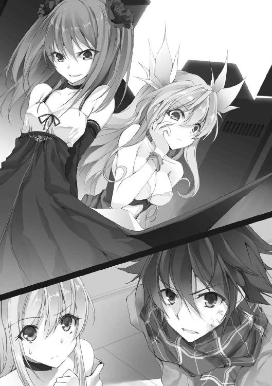
欄干に肘を乗せ、瞠と呼ばれた少女が指を組む。
「返してよね。この子が残してしまった能力の欠片を」
そして笑う。作り物さながらの笑顔で。
「欠片......なんのことだ？」
理解のできない会話に、千歳の思考が混乱の中へと落ちていく。
こいつらも敵なのか。
なぜ、俺のことを知っている。
そして、どうしてみおりが、こいつらを知っている。
みおりは千歳から生まれた能力であり、生命力を凝縮して活動しているｄｆのはずだ。
これまでに幾度かあった違和感。
みおりが隠している真実とは、一体――
「なによ、黙りこくっちゃって。自分でやったことでしょ？ 傲慢。うん、傲慢よね。みおりサマから聞いてるんでしょ？ だって千歳サマが巻き込まれたのは、全部みおりサマのせいなんだから」
瞠と呼ばれた少女は、ゆっくりと言い聞かせるように言った。
「......巻き込まれた？」
千歳の呟きに、みおりが俯き、無言で拳を握る。
と、瞠が再び口を開いた。
「みおりサマ、どうかしたの？ いつも不安で、先のことばかり考えてるみおりサマが口ごもるなんて、本当......珍しい」
隣でつまらなそうにしている少女の顎を、人差し指で撫ぜながらの言葉。
「そうね、そうね。もしかして、はじめから話す必要があるのかな。半年前、みおりサマが死んだ時のことから」
「半年前？ 死んだ？」
わけの分からない告白だった。
みおりは――みおりという存在は、ただのｄｆでは、ない？
「千歳サマも巻き込まれたのよ。覚えてないみたいだけれど」
ケタケタと笑う声。
なんだ、なにを言っているんだ、こいつは。
さらなる混乱が千歳を襲う。
と、その時だった。
「やめっ！ もうやめて......」
「どうして？ みおりサマが言わないから、わたしが代わりに言ってるのに」
「お願いだから......」
「お願い？ その恰好で？ 嘘でしょ？ 人にものを頼む時は、心からお願いしなさいって教わらなかったの」
瞠は不思議そうに、色のない、感情のない瞳をみおりに向け、
「だったら、まず頭を下げなくっちゃ！」
と、惨忍な笑みを浮かべた。
同時、傍らの少女が動く。
陸橋の欄干に座ったまま、足を上げ、踵で柵を強く打った。
千歳とみおりは互いに手を取る。が、遅い。
少女の行動の瞬間、千歳とみおりの立つ歩道が大きく隆起し、捻れ、捻れ、捻れ、花を咲かせるように衝撃波を伴う爆発を起こした。
激音と共に瓦礫が散る。
歩道に沿った店舗のガラスは次々に粉砕された。
二人の繋いだ手も切り離され、千歳は冷たいアスファルトを滑り、転がった。
「いい恰好ね。人にものを頼む時はそうでなくちゃ」
嬉々とした声が耳に届く。
「っく......」
千歳は痛む脇腹を押さえながら立ち上がった。
しかし、みおりは膝をつき、力なく俯いたままだった。
「今の爆発がお前たちの能力なのか......？」
千歳は、陸橋の上で薄ら笑いを浮かべる、瞠と呼ばれた少女に言った。
「あらら、千歳サマはやっぱりなに一つ覚えてないのね。ｄｆを無理矢理引きはがしたショックのせいかしらね」
「......どういうことだ？」
不可解な言動に千歳の思考はリセットされ、頭が真っ白になる。
「そう、ｄｆを交換したの。思い出して――」
「交、換――」
突然、頭の中に、衝撃が走った。
ぷっつりと途絶えていた記憶への入り口が、開いていく。
「ごめんなさい......ごめんなさい、千歳......」
みおりのしゃくり上げる声が響く。
だが、その時にはもう――千歳の意識は真っ暗闇の中へと落ちていた。
疎らな街灯。シャッターの閉まった商店。ぽっかりと広がるコインパーキング。
よみがえる、あの日のこと。
千歳が記憶を失った、その瞬間のこと。
「ごめんなさい......千歳を、巻き込んでしまって......」
みおりの中にも、あの日の記憶が禍々しく、鮮やかによみがえる。
10月25日、商店街の２本ほど裏手にある、細い路地に入ってからのこと――
＊
ぷつ――と、それはなんなくみおりの身体に入り込んできた。
よく表現される、熱いとか、寒いとかはなかった。
ただ、驚愕していた。
自らの腹部に、ゆっくりと赤黒い染みが広がっていくのをみおりは眺め続けた。
塾で帰りが遅くなったからと、近道にと普段は通らない裏路地を通った。
それだけのことで、気がつけば、すぐそこに死が迫っていた。
どれだけ振り切ろうとしても、逃げ切ることはできない。
そう、この世に生を受けた時から、死はずっとみおりの隣にいた。
新生児の検査で心臓に不具合が見つかり、すぐに手術が必要とされた。
３か月後にもう一度。
３年後にもう一度。
その手術の全てが、成功率の低いものだった。
大人たちははっきりと言わないけれど、みおりは自分の命が、なにかの偶然ですぐに消えてなくなってしまうことを知っていた。
けれど、みおりは生き続けた。
７歳に一度。
10歳にもう一度。
13歳でもう一度。
幾度となく手術を繰り返し、生き続けた。
両親や妹の穂ノ香が、自分を犠牲にして、みおりを励まし、生かし続けてくれた。
幼い頃は、とめどなく押し寄せる死への不安から、不幸な未来を思い描いてばかりだった。
死にたくない、生きていたい。
しかし、いつしかそれは希望へと変わり、幸せな未来を思い描くことで、生きる力を得られるようになっていった。
妹の穂ノ香がくれたボールペンで、たくさんの日記を書き、たくさんの未来の夢を描いた。
この世界でもっともっとたくさんのことを知りたい。
できれば恋だってしてみたい。
そうやって、生まれた時は50％と言われた生存確率を超えて、みおりは16年の生命を掴み取ってきた。
それなのに――
駐車場の横を通りかかった時だった。
すれ違った誰かに、とん、と押され、みおりは薄暗い駐車場の方へと転んだ。
「すみません」
と、言われた。
その時は、押されたのではなく、自分が不注意でぶつかったか、相手の荷物がぶつかったと思い込んでいた。
だから、「大丈夫です」とか、「こちらもぼんやりしてて」と言ったのだ。
そして差し伸べられた手に疑問も持たず、引き起こされた次の瞬間――
折りたたみ式のナイフで刺されていた。
「あ、あ......あ、あ――」
混乱、動揺、恐怖。
やっとのことで絞り出せたのは、か細い声だった。
一人の見知らぬ少年が通りかかったのは、そんな時だった。
「助け......」
みおりが手を伸ばす、と、外灯の光に浮かぶ少年は、なぜか逃げる素振りもなく、ぼんやりとしたまま、ただ薄暗い目をこちらに向けていた。
いち早く反応したのは、みおりを刺した男だった。
振り返るやいなや、近づいてきた少年をナイフの柄で殴り倒し、圧しかかっては再び殴った。
二発、三発、四発、五発。もう意識もないだろうに、男は殴り続けた。
冷たいアスファルトに血が跳ねる。
それからどれくらいが経ったろうか、男はぺたりと座り込んだみおりを一瞥し、そのまま大通りの方へと駆けていった。
少年は最後まで無抵抗のままだった。
「......あ、あぁっ、う――」
凄惨な光景を前に、みおりはその場に倒れ込んだ。
目尻から、大粒の涙が零れる。
なにもできない、なにもできなかった自分に対して泣いた。
どうにかしようと足掻こうとするが、右手は傷口を押さえるので精一杯だ。
みおりはどうにか左手だけで身体を起こし、アスファルトに爪を立てた。
と、胸元から、いつも大事に持っているお守りのボールペンが転がった。
せめて誰かが通れば、誰かが通る場所まで――
助けて、お願いします。誰か、私を見つけて下さい。
そう呟きながら、みおりはただただ自分の身体を引きずり続けた。
死から逃げるように。
そんな時だった。
「こんばんは、いい夜ですね」
「え..................」
ふと、視界の中に、片側の靴下がずり落ちた小さな足が見えた。
いつからそこにいたのかは分からない。
本当に――不自然なほど自然だった。
みおりは唐突な出来事に戸惑いつつ、震える目蓋を上げた。
「はじめまして、私は《飼育場の自動人形》といいます。呼ばれた気がしましたので、こうして馳せ参じた次第です」
状況にそぐわない明るい声。
こちらを覗き込むその幼い口元は、涼しげな笑いを湛えていた。
「助け、て......救急車――」
痛みを堪え、血に濡れた手を伸ばす。
しかし人形と名乗った少女は、ただ微笑むだけ。
「そうは申されましても、私にできることは一つしかございません。それに......私は人の業に興味があるだけですから」
「............？」
「お任せ下さい」
舐めるように、人形がみおりの姿態を見やる。
「しかし、こうして私を呼び出してしまうとは、あなた......とてつもなく強い願望をお持ちのようで。私のはじめての試みに相応しいと思います」
そして、みおりの隣にちょこんとしゃがみ込むと、おもむろにアスファルトに手を突っ込み、豪奢な鏡を引きずり出した。
「な、にを......」
みおりの目に、酷く禍々しい笑みが映る。
「はや、く......助けてくだ、さい」
「ええ、分かっておりますとも。既に引き出しにかかっていますので、もう少々......」
人形が恍惚の笑みを浮かべる。
「それにしても、恐ろしいほどの生への執着。見事なものです」
と、その時だった――不意に砂を踏む音が聞こえた。
気付くと、みおりの前には、もう一人の少女が佇んでいた。
「わた、し......？」
跪いた女を見上げ、みおりは目を見開いた。
それは自分とそっくりの顔をした少女だった。
「瞠よ、はじめまして、みおりサマ」
声までが自分のものと同じだった。
「こちらはｄｆ――あなたの欠点・欠落・欠陥、求めてやまないもの、渇望したものから生み出された、もう一人の人格であり、力でございます」
人形が説明を口にする。
が、みおりには、なにを言っているのか理解できなかった。
ひょっとしたら目の前で起きている全てが、幻覚ではないかと思った。
それでも、
「助け、て......」
ジクジクと痛む傷を押さえながら、みおりはワラにも縋る思いで、自分と同じ姿の女に手を伸ばしていた。
「いいわ。みおりサマ、すぐにわたしの手を取って。そして、どうしたいのか言ってみて」
そっと差し出された手に、みおりは震える手を重ねて言う。
「......まだ、死に、たくない......」
「――では求めし者に、その解を」
そう言って向けられた瞠の瞳は、美しい紫色に煌めいていた。
直後、みおりの頭の中に焼けつくようなチリチリとした痛みが生まれた。
「......っな、嫌っ、これ――」
倒れている少年。深緑のドレスを纏った少女。
みおりの中に知らない情報が激流のように流れ込みはじめた。
「嫌っ、嫌ぁあぁああぁっ！ 嫌っ、嫌ぁあっ！」
痛みと、吐き気と、恐怖。みおりの身体が痙攣しはじめた。
その姿を横目に、片頬を吊り上げた瞠が「なるほど......」と呟く。そして、楽しそうに見物を決め込んでいる人形に持ちかけた。
「そうね、あなた――これから面白いことをはじめようと思うの。力を貸してくれる？」
「どういった意図かによりますが......」
「みおりサマとわたしの願い、そしてあなたの娯楽のために」
みおりの耳に不穏な会話が届く。
「......乗りましょうか」
それは見えていた映像と同じ光景だった。
人形は首を縦に振り、差し出された瞠の右手を握った。
「ただし、私の引き出す力を利用するのであれば、対象の意識が必要となりますが――」
「ちょっと待ってね」
瞠は仰向けに倒れていた少年の髪を掴むと、無理矢理に状態を引き起こす。そして一発、二発と頬を張った。
「もしもーし、起きてるかな？ 起きてるでしょ」
と、少年が深く咳き込み、無表情のまま口から粘った血を吐き出した。
「うん、まだ生きてるみたい」
「分かりました。それでは――」
瞠の言葉に、人形が仰々しく頭を下げる。
そして豪奢な鏡を手にし、それを少年の方へと傾けた。
映し出されたのは、深緑のドレスを纏った少女。
人形は鏡の中に手を差し入れると、少女の手を引いてこちらの世界へと連れ出しはじめた。
その異常な光景を、みおりはただ見つめることしかできなかった。
「......これはまた、稀有な力を秘めているようで」
眉をひそめ、丁寧な一礼。人形は手のひらで、新たにこの世界に現れた少女を示した。
「ともかく完遂です」
どことなく不機嫌そうなドレスの少女を前に、人形は役目を終えたとばかりに後ろに下がる。
と、次の瞬間だった。
深緑のドレスの少女が、いきなり少年の顔を踏みつけた。
「名前、私の名前、言って、早く、すぐに、まだ？ 黙ってないで......」
そして徐々に――その目が据わり、息が荒くなりはじめる。
「まだなの、名前、私の！ わ・た・し・のっ！ 早くっ！ 名前っ！」
踏む、蹴る、蹴る、踏む。地面を、顔を、腕を――
「か、な......え」
ややあって、パックリと割れた少年の唇から言葉が零れた。
「かなえ――叶」
少女はそれを聞くと、１８０度、ころりと表情を変えて満面の笑みを浮かべた。
それから――再び蹴る。遠慮も容赦もなく。
そんな叶に、瞠は気軽に声をかけた。
「取り込み中いいかしら？」
すると、叶がくるりと振り返った。そして、瞠の顔を間近で見つめ――
「あなた、可愛い。好き」
幼さを隠さずに言った。
「ありがとう。じゃあ早速だけど、わたしたちにはあなたの能力が必要みたいなの」
「私の？」
「そう、どんな能力なのか教えてほしいな」
「代わりにあなたの能力、教えてくれるならいい」
にっこりと微笑む叶。
一時の沈黙。瞠は目を閉じ、そして――応じる。
「......銘は《適解の公式》。状況に適した解答を見せること。ただし１分だけ」
「そうなんだ」
まるで興味のなさそうな声色。だが、
「私の銘、《王の領域》。願いを叶える。対価を支払えば、それに見合った願いを」
叶はあっさりと自分の能力を口にした。
その答えに、瞠が口元を歪める。
「じゃあ、あの今にも死にそうなわたしの宿主と、この身体を入れ替えることもできるかしら？」
「できる」
「対価は、なにを支払えばいいの？」
瞠が問いかけると、叶は少し考えてから、ぼそりと言った。
「血」
小さな口を開けて、舌なめずりをする。
「血を、ちょうだい。私、血が足りないの」
「そんなものでいいなら」
瞠が頷き、承諾する。
と、叶はそっと瞠に近づき、その身体を抱きしめるようにして――
首筋に、ぷつりと音を立てた。
「んっ......」
吐息と共に瞠が目を閉じると、間もなく叶の喉が、こくりこくりと上下をはじめる。
変化は――その直後に訪れた。
瞠の身体と、倒れたままのみおりの身体が、うっすらと黒い光を放ちはじめたのだ。
そして、叶は瞠の首から口を離し、呟く。
「これで契約、完了」
「ん......」
ふと、みおりは朦朧とした意識の中で静かに目を開けた。
いつの間にか、叶に抱きしめられている。
どれくらいそうしていたのかは分からない。が、ややあって、甘美な痛みを残し、叶はみおりの身体を解放した。
「............」
みおりは、自分の身体を見回した。
傷も、血も流れていない。身体を蝕んでいた痛みはすっかり消え失せていた。
だが、
「これって......」
突如湧き上がる得体の知れない恐怖に、みおりは震えていた。
身体に力が入らず、頭が上手く回らなかった。
それは、なにかが決定的に変わってしまったような感覚。
この世界に存在しながら、存在していないかのような。
自分の身体が透けて、今にも消えてなくなってしまうかのような。
「は、あははは......っ、痛くて寒くて......熱い！ これが人間の身体――身体なのねっ！」
突然の声だった。
みおりが振り向くと、そこには腹部を大量の血で染めた瞠が、足を震わせて立っていた。
ぬっとりとまとわりつくような夜の闇の中、乾いた笑い声が響く。
「わたしは与えられたの。可能性を、夢を見る権利を！」
瞠は自分の血に染まった右手を見つめ、歓喜の声を上げた。
「ありがと、みおりサマ。もらったこの身体......大事に使うからね」
「人から生まれたｄｆが、さらに人として生きたいと願う――興味深いですね」
今まで傍観していた人形がこくこくと頷きながら口を挟む。
「......っ、私になにをしたの......？」
みおりが震える声で言うと、瞠は答えた。
「だから入れ替わったの。今のみおりサマは人間じゃなく、ただの生命力の塊。わたしの所有物になったのよ」
瞠は苦しそうに顔を歪めたが、その瞳は楽しげに色づいていた。
「え......？」
瞬間、みおりは全身の力が抜けていくのを感じた。
「ふふふ、そうだ、ねぇ、叶」
瞠に呼ばれ、叶は不思議そうにカクンと首を傾げた。
「叶の力ってとっても素敵ね。わたし、叶が欲しくなっちゃった。わたしのものになってくれない？」
「いいよ」
あっさりと叶が頷く。
「対価は？」
「私があなたのものになる。代わりにあなたのｄｆが千歳のものになる。それで等価交換」
すると人形が、
「よろしいのですか？ 叶様は、宿主に未練などございませんか？」
心配するような内容とは裏腹に、愉快だと言わんばかりの表情で問う。
と、叶は倒れたままの少年を一瞥した。
まるで汚らしいものを見るような目だった。
「いい。だって千歳には、なんの願いもない。心の底からこの世界に絶望して、妄想の世界に逃げてるだけ。だからこそ、妄想、願望を叶える力――私を生み出せた。でも、この力を千歳は望んでない。千歳は私を、願いを否定してる。それなら、妹も、お母さんも、抜け殻みたいな心も、私が持ってく。一つも、残してあげない、もっと空っぽになればいい。そして死ね、死ねっ！」
それは呪いの言葉だった。
叶は唾を吐き捨て、今度は瞠に愛を込めた視線を送り、その手を差し出した。
「早く、手を取って、可愛い、あなたが好き」
みおりは、呆然としたままそのさまを見ていた。
だが、その時、少年がぴくりと動いた。
「............」
声にならない声を出し、その手は、叶の足に巻かれていた深緑のリボンを掴んでいた。
「......行くな？ どうして、なぜ？ 決めないでっ、私のこと、決めるなぁあっ！」
叶がワナワナと肩を震わせ、掴まれたのとは逆の足で少年の腕を踏みつけた。
「どうして、こんな、嫌いだっ、嫌いっ、嫌い、き、ら、いっ！」
爪先で蹴る。膝を落とし殴りつける。
髪を掴み、アスファルトに顔を打ちつける。何度も、何度も。黒ずんだ血が、冷たいアスファルトに色を残す。
少年は抵抗もできないまま、ぐったりと転がった。
「......叶、もういいでしょ。さぁ、わたしのものになって」
止めたのは瞠だった。叶を後ろから抱きしめる。
と、叶が嬉しそうにすうっと目を細めた。
その瞬間だ、二人を中心に強烈な風が逆巻いた。
そして――瞠の願いは叶い、ｄｆの交換が成立した。
「ようこそ、叶」
「はい、主様」
叶は抱きしめられたまま、満面の笑みを浮かべ、消えた。
そして同時に、みおりの身体も空気に溶けて消えはじめた。
「みおりサマ、元気でね。わたしは、わたしのための世界を創りに行く。永遠に生き続け、終わらない世界を」
去っていく瞠を、みおりはただ見送ることしかできなかった。
消えゆく意識の中、みおりの耳には人形の声が届いていた。
「いつか、この少年のｄｆとして目覚めた時、新しい戦いがはじまるでしょう。次はリベンジできるといいですね」
＊
「それから叶の能力で、この世界を創ったの」
陸橋の上、瞠がこともなげに言う。
「永遠に続く、終わりのない世界――強い願望を持つ人間を見つけ、ｄｆを生み出して、戦い合わせる。願望と欠落と業がせめぎ合い、散っていく世界。その対価は人形が血で払ってくれたわ」
「どうして人形が......」
千歳が疑問を口にすると、
「彼女が求めているのは娯楽。人が業によってあがくさまを見ること。つまり、利害の一致ね」
瞠は涼しい顔で答えた。
「でも、こんな世界を、なんのために......」
「神様になるために決まってるでしょ」
みおりの呟きに、瞠は楽しそうに答えた。
「みおりサマ、あなたは心の奥底でいつも現実を呪い続けていた。どうして私だけが、死の恐怖に怯えて生きなければいけないの？ どうして人間は不平等なの？ 神の気まぐれで生まれたり死んだり......そんなの不条理だって」
「............」
「なら、自分が神様になって、世界を運営するしかないと思わない？」
瞠は静かに語り続ける。
「叶はね、強い願いを叶えれば叶えるほど、その力を大きくしていくの。今は街一つ分だけど、いずれは国を、世界を丸ごと呑み込むこともできるはず。だから――より強く、濃く、業の深い願いを叶えるために、この世界に《ゲーム》を創ったの」
その目は、墨を落としたような光のない目だった。
「――なるほど、よく分かったよ」
千歳が、掠れた声で言った。
「俺の記憶が穴だらけなのも、人間だったみおりがｄｆになったのも、お前らが原因ってことか」
「ごめんなさい......千歳――」
押し潰したような、みおりの涙声。
「なんで謝るんだ？」
「だって......千歳がこんなことになったのは、全部私の......」
「いや、巻き込まれてなければ、俺はあの日、多分――死んでた」
千歳は低く呟いた。
「......これ、自分の部屋で見つけたんだ。家族の写真と一緒に、ノートに挟まってた」
千歳はポケットからしわくちゃになった紙を取り出し、みおりに渡した。
「遺書だ」
「え......っ」
「10月25日、俺は死ぬつもりだった。世界に絶望して、なんで生きてるのか、分からなくなってた。通り魔に抵抗しなかったのも、そのまま死んでもいいと思ってたからだ。でも、記憶を失い、過去を失って......結局は生き残った。だから――」
千歳は優しく笑った。
「みおりが、俺を生かしてくれたんだよな」
泣き出しそうなみおりに、伝える。
「だからみおり、今度は俺がお前を人間に戻してやる」
「......っ」
みおりは二の句が継げず、千歳の顔を見た。
千歳の瞳から、涙が零れ落ちていった。
「母さんと妹のこと、顔も声も、起きたことも全部、思い出せた。ありがとう」
「千歳......」
「今まで全部黙ってたことは、後でお仕置きする。けど、今は性格のひん曲がったあいつらを元鞘に戻すのが先だ」
千歳はぐいっと袖で涙を拭い、みおりに手を差し出した。
「......は、はい」
その手を取ったみおりが、真剣な顔で立ち上がる。
「――それに、あいつらの態度は鼻につく。神になって、この世界を運営する？ 何様のつもりだ」
千歳の心の奥に、小さな炎が息づいていた。
「人間は、絶望しても、あがいて生きようとする。ほんの小さな希望に縋って、逃げてでも這ってでも生きようとする」
絶望の世界から、かろうじて生を掴み取った千歳は言う。
それは、みおりも同じだった。
「だから、人の願いをエサに、殺し合いをさせる最低の神なんか必要ない」
「なら、本当の絶望を味わってみる？」
瞠の言葉がトリガーとなり、欄干に座って退屈そうにしていた叶の目に火が灯った。
ゆらり。
気だるい所作で、叶は欄干の上に立ち上がると、千歳に向かって憤怒の表情を向けた。
「死に損ないが偉そうに！ そんな目、許さない、吐き気がする！ お前に、生きる価値なんてない！ 死ね、死ね、死ね！」
自らの頭をガリガリとやりながら、血走った目で吠える。
「そこまで恨まれてたのか、俺」
「この子の性格って、記憶を失くす前の千歳サマの影響よ」
「......酷いな」
言いつつ、千歳はみおりをちらりと見て頷く。
《適解》を――
しかしその隙を見逃さず、叶は――その場で足を踏み鳴らした。
その瞬間、
「――っ！」
シャッターほどもある石壁が、地面から二人の間に迫り上がり、千歳の右手を撥ね飛ばした。
予期しなかった激痛に、千歳はたたらを踏む。
「元々わたしの能力だったんだから、《適解の公式》の弱点は分かってるの。二人が手を繋ぐチャンスは......二度と来ない」
瞠が言葉を紡ぐ。
「っ、痛......」
千歳は小さく舌打ちをし、確かめるように右手を強く握った。
激痛だが折れてはない。そう判断し、千歳はアスファルトを蹴った。
みおりと繋がらなければ戦うどころか、逃げることもできない。
が、叶はすかさず欄干を踏みつけ、千歳の正面に大壁を迫り上げて、その足を止める。
そして、さらにもう一撃。
今度は壁ではなかった。
千歳の背後のアスファルトから撃ち出されたのは、赤子の頭ほどの石球だった。
「っがああああっ！」
みしり。超速の質量が背中を軋ませ、千歳は目の前の壁に激突した。
「教えてあげる。叶の武器は、願いで生み出されたこの世界そのものよ。全てが思い通りになる。ただ意思を力として叩き込んで、吐き出すだけ」
「そんなのありかよ......」
千歳の背筋を冷たいものが伝う。
瞠が口にしたように、この世界そのものが武器となるのなら、逃げ場など存在しない。
が、考えている暇はない。容赦のない追撃がはじまった。
再び撃ち出された石球を肩に受け、千歳は成す術もなく吹き飛ばされた。
「っぐ......」
転がりながらも立ち上がり、よろよろと走り出す。とにかく動かなければ。
千歳は痛みを堪えて２車線の路上を駆けた。
視界の端で瞠と叶が千歳に視線を合わせたのが見えた。その表情は、張りつけたような薄ら笑い。千歳を嬲って楽しんでいる顔だった。
「くそ......！」
痛みで朦朧とする。
とにかく、みおりの手に触れなければなにもはじまらない。
「千歳！」
歩道に飛び込んだ千歳は、駆けてくるみおりを視界に収める。
しかし、その狙いを察した叶が、みおりと千歳の間の歩道に亀裂を走らせた。
「......っ」
直感が警鐘を鳴らす。
直後、亀裂から散弾のごとき礫が噴き上がる。
正面は塞がれた。右にはビルの壁面。
再び路上へと飛び出したが、行く手には地鳴りを伴って幾つもの壁が現れる。
「千歳っ、こっちです！」
壁の隙間から、みおりが歩道から路面へと飛び出したのが見えた。
その距離、10メートル――
まばたきをするほどの間に、二人の距離が縮まる。
みおりが手を伸ばす。
千歳も手を伸ばす。
だが、同時に地面が隆起し、目の前に石壁が恐ろしい速度で迫り上がる。
叶が生んだ、二人を分断するための壁。
だからこそ、適解を見るまでもなく予測ができた。
――必要なのは、痛みを受け入れる勇気だけだ。
千歳は思い切り跳躍した。
真下から突出した壁に、自ら身体を打ちつける。
びきりと骨の音がする。粟粒が立つほどの痛み。千歳は壁の飛び出す勢いで４メートルの上空へと跳ね上がった。
そして、
「っひぎぃぃいっっ！」
次の瞬間、衝撃。
みおりが千歳を受け止めようとしたものの――二人は折り重なって潰れた。
千歳は組み敷くような態勢から身体を起こし、みおりの様子を窺う。
「千歳......っ、うっ、千歳っ」
泣いていた。両手の甲で目を拭いながら、みおりは口をヘの字に、子供のように身体を震わせていた。
「いっ、痛かったか？」
「違う、です。ごべんなさいって......ぢゃんど謝らないうぢに、千歳が危なぐなっでしまって、怖ぐで――」
それからも、みおりは「怖くて」と繰り返した。そして、もたもたと身体を起こすと、千歳に飛びついて強く腕を回した。
「痛っ......痛いってみおり」
恐らく肋骨がいってしまっているのだろう。息をするだけで激痛が走る。
「ご、ごめんなざい」
慌てて千歳から離れたみおりは、小さく数度、鼻をすすって、息を吐いた。
「泣いてる暇はないぞ」
「分かってます」
ずずっと大きく鼻をすすり、みおりが頷く。
二人は手を繋いで立ち上がり、大きな深呼吸を一つ。
「くそっ！ くそっ！ どうしてっ！ 失敗するのっ！」
見ると、叶が苛ついたように陸橋の手すりをガンガンと叩いていた。
だが、瞠の方は、
「叶、口汚いわよ。別にいいじゃない、もう少しゆっくり楽しめば、ね」
あくまで余裕の笑みを崩さない。
確かに《適解》があっても、今と状況はほとんど変わらない。

逃げ延びる時間がほんの少し伸びるだけ。
それどころか、背負った怪我と痛みは《適解》にも影響を与えるだろう。
しかし、千歳は考える。
引っかかっていることがあった。
どうしてこの世界の神たる瞠が、今、千歳とみおりの前に姿を現したか、その理由だ。
「なぁ、みおり」
「はい？」
「あいつら言ってたよな。俺から叶が落とした能力の欠片を返してもらうって......」
「はい」
それは、多分――
千歳はポケットから、すべやかな深緑のリボンを取り出した。
あの夜、叶から千歳が掴み取ったものだ。
思い当たるのはこれしかなかった。
「この世界を創った、叶の力の欠片――」
千歳は、陸橋に立つ瞠を見やる。
その表情が、ほんの一瞬だけ、ぴくりと動いたことで、確信を持つ。
「これの使い方を《適解》に聞く」
「――はい！」
みおりの瞳が紫に染まる。
チリチリと、脳髄に走る痛み。
――銀のボールペン。緑のリボン。叫ぶ叶。驚く瞠。
破壊と、周囲の全てを呑み込むように広がる土煙。
「千歳、これって......」
映像を見たみおりが、慌てて胸元からボールペンを取り出し、見つめる。
「私がｄｆになってからも持っていた、宝物です。ほのちゃんにもらったものです」
千歳は頷いた。
みおりが生きたいと願い、過去や未来を綴ったボールペン。
それは、みおりが未来を見たいと願った、力の象徴。
「ああ、二人の力を合わせよう」
千歳は深緑のリボンを、そっと銀のボールペンに絡ませた。
突如、眩しいほどの輝きが放たれる。
リボンは一瞬で緑の粒子となり、弾けた。
そして、宙を漂う光はボールペンに吸い込まれ――純白の光を宿しはじめる。
「ああああああああああああっ！」
叶の絶叫が響く。
「とられたっ！ とられた、私の力......っ！ 馬鹿っ！ 返せ！ 返せえぇええっ！」
「まさか......」
これまで一時も余裕を崩さなかった瞠の瞳が、怒りと驚愕に見開かれる。
「――叶、遊びは終わり。早くっ、取り返してっ！」
地の底から轟くような叫び声。
同時に、みおりは目を閉じる。
そして、すっ――と輝きを放つペンを掲げ、残像で宙に記号を描き出した。
記号のような、魔方陣の一部のようなそれは、みおり本人にも意味は分からない。
《適解》が教えてくれた、この世界を構成している公式のようなものだ。
叶が反応するよりも早く、瞠が動き出すよりも早く。
みおりの描いた公式が、光の粒子と共に散り、発動する。
一瞬の静寂。
ぴしり、という乾いた音が響いた。
「いつまでも見下せると思うな。下りてこい」
それは瞠と叶が立つ陸橋の悲鳴。
支柱に、フロアに、階段に亀裂が走る。
そして、崩落する。
「主様っ！」
血相を変え、叶が瞠に飛びつく。
巨大な陸橋はその中央で折れ、ロータリーを抉り、轟音と共に沈みはじめた。
渦巻く土煙。
《適解》が教えてくれたもの。
それはリボンの使い方と、新たな力の使い方。
そして、そのために支払う代償だ。
「......っ、ぐ」
魂を吸い取られたかのような虚脱感が千歳を襲う。くらりと眩暈がして、足がガクガクと震えた。
「千歳！」
みおりが振り向く。
「あ......がっ......」
込み上げるものを抑え切れず、千歳はその場に吐き出した。
びしゃりとアスファルトに落ちたのは、どす黒い血の塊。
怪我のせいではない。もっと根本的に自分の身体を蝕むものだった。
「......ぐ......」
千歳は袖で口を拭う。
「ｄｆを維持するとか力を使うには生命力がいるんだったな......これだけの力を使ったら、こうなるのも当然か......」
「千歳、やっぱりこれは使うべきじゃ......」
「大丈夫だ、《適解》が見えてるうちは死にはしない。次の《適解》を」
「は、はい......！」
指示に従い、みおりが《適解》を展開する。
早くケリをつけなければならない。
生命力を削って放つこの力、何度も使えるようなものじゃない。
千歳は脳に叩きつけられる映像に集中した。
揺らめく土煙の中に人影。降り注ぐ光の雨。怒涛の連弾。そして――
「なるほど......」
これが世界に干渉できる力か。
千歳は呟く。
それは今まで見てきた、いかに生存するかとは違う、いかに勝利するか――という圧倒的な未来だった。
「みおり、俺たちで未来を創り出すんだ」
千歳は、みおりの手を取った。
「――はい」
千歳は路上のど真ん中から、崩落した陸橋を臨んだ。
「瞠、叶......生きてるんだろ」
立ち込める土煙の中へ問う。
返事はない。が、代わりに足を踏み鳴らす音が一つ。
力の矛先は、千歳たちの遥か頭上――数え切れないほどのガラスの割れる音が響いた。
見上げればキラキラと、幾多のガラスが朝焼けの色を映していた。
「無駄です」
みおりが公式を描き、発動させる。
響く重音。左右の地面から石壁が突き出て、千歳とみおりの頭上に屋根を作り上げる。
雨となった破片が、その上に降り注いだ。
その前方では、土煙の中から猛然と飛び出す二つの影。
後方に瞠、その前衛で叶がドレスの裾を舞わせ、走る。
その踵がアスファルトを鳴らすたびに、石の散弾が打ち出された。
「次だ、みおり！」
「はいっ！」
千歳とみおりは一歩も動かず、迎え撃つ。
いや、もう走るどころか、一歩だってまともに動けないのだ。
千歳の足は震え、吐き気が込み上げ、意識を持っていかれそうになる。
乱反射する光の中、みおりは前方に乱立する石柱を生み出し、散弾の射線を遮る。
穿たれる轟音。
「邪魔、邪魔、邪魔だっ！」
石柱をこともなげに爆散させながら、叶が迫る。
「嫌い、嫌い、嫌いっ！ 死ねぇええぇえ！」
叶が、右拳を地に叩きつける。
生まれ出でたのは、アスファルトの巨剣。
膨大な質量のそれが、横殴りに襲いかかる。
だが、その刹那、みおりの新たな公式が完成した。
「待って、叶！」
瞠が叫んだその時だ。地響きと共に、叶と瞠の周囲の道路が、一瞬で陥没した。
円形のクレーターに、叶と瞠が呑み込まれていく。
「っ、こんなものでどうにかなるとでも――」
言葉が止まる。瞠は頭上を見上げ、息を呑んだ。
落ちてくる黒い影。
「そんな......！」
それは、巨大なビルそのものだった。
仮にこの質量を叶が破壊できても、生身の自分は無事では済まないことを瞠は悟る。
「分かっていても避けられない、がコンセプトだ」
千歳は、かつて瑤子に言われた言葉をぼそりと呟き、にやりと笑った。
「主様ぁっ！」
叶が叫び、瞠に飛びつく。
同時に、陥没したアスファルトが瞠と叶を守るようにドームを形成しはじめる。
「......これで終わったわけじゃないからね」
瞠が呪詛のように放った最後の声を、千歳は聞いた。
「その力は必ず返してもらうから」
そして――全身を震わせる地響きと共に、ビルはクレーターに落ちた。
「――ああ、今はここまでだ。みおりを人間に戻す方法を、探さないといけないからな」
巨大な墓石のようなビルを前に、千歳は空を仰ぎ、静かに目を閉じる。
眩い朝光に包まれながら、ビルが崩れていく。
その瓦礫の中には、もう誰もいない。
瞠と叶は、洸水にしたように、自らをこの世界のどこかへと飛ばしているはずだ。
確信する千歳には、もう目を開けているだけの力すら残されていなかった。
「――終わったな」
そう言って全身から崩れ落ちる千歳を、みおりが抱きとめた。
「はい。すごく、すごく長い夜でしたね......」
朝の光は目に痛く、みおりは少し目を細めた。
「私、役立たずだから、迷惑ばかりかけてしまって......」
思い返してみても、いいところは一つとしてなく、ため息だけが零れた。
「悪いのは私です」
「そんなこと......ない」
みおりに抱き留められたまま、千歳が耳元で静かに囁く。
「ごめん、みおり......身体......取り戻せなかったな」
「そんなこと、いいんです」
だって......と、みおりは笑った。
「私は......その、こうして千歳に会うことができて......」
そこでみおりは言葉を止め、コクリと唾を呑み込んだ。
「えっと......ちっ......千歳、私――」
「ここでちゅう、ですね。ええ、いい絵になると思います」
「びぎゃぁぁああぁああぁっ！」
凶悪な不意打ちに、みおりの背筋が一瞬で凍りついた。
「どうかされました？」
「あ、ちょっ......あのっ、いいいいきなり声をかけないで下さい！」
みおりは、唐突に目の前に現れた人形を怒鳴りつけた。
「申し訳ございません。しかし、大変申し上げにくいのですが、瀬々様は既に意識を失われておりますので」
「............」
確かに、くったりと肩に頭を預けた千歳からは、静かな呼吸が聞こえていた。
みおりの顔が真っ赤に染まっていく。
「それと、日の出となりましたので、ゲーム終了のご報告など」
「えっ!? ああ、終わった......んでしたね」
「はい。予想以上のポイントの獲得もあり、とても緊迫した面白いゲームになりました」
人形はずり落ちたソックスを上げながら、あっさりとした感想を述べた。
「生存者は佐藤八枝様、藤瀬穂ノ香様、藤原サチコ様の３名。リタイアは瀬々千歳様、時戸洸水様、松本みゆき様、香椎花様の４名です」
「そ、それだけですか？ あの、その他の方は――」
「ご想像の通りです」
人形は変わらぬ笑みを湛え、さらりと口にした。
「しかし、あなたという人はよくよく運のない方ですね。リタイアされても大変な目にお遭いになったようで......」
「で、でも、どうにかなりましたし......」
「本当にそう思っているんですか？」
人形が首を傾げ、ぱちぱちとまばたきを繰り返す。
「それって、どういう......」
「いえ、お気になさらずに。娯楽としては至高のものでしたので」
人形は小さく手を叩くと、賞賛を口にする。が、その物言いには引っかかりを感じざるを得なかった。
ただ、みおりにはそれ以上に疑問に思っていたことがあった。
「......聞いてもいいですか？」
みおりは警戒の眼差しで言う。
「どうして千歳をこの世界に連れてきたんですか？ ひょっとして、瞠に協力して千歳の能力を回収しようと――」
「そのようなことはありません。瀬々様の願望に惹かれてしまったのと、安定しはじめた世界に一石を投じたいという思いからです」
「............」
結局のところ、敵なのか味方なのかはっきりとしない。
多分、そのどちらでもないのだろう、とみおりは思った。
「まぁ、つまるところ、私の娯楽のためですが」
無邪気な笑みだった。
「娯楽、ですか？」
「はい、強い願いを持った方のｄｆを引き出しているのと同じです。そこに善意も悪意もありません。面白い結果があればいいのです」
そして人形は重要な一言を付け加えた。
「そういう意味では、人を観察するのとも同じですね。先ほどのように、おとなしく奥手な方が、自ら告白、そしてちゅうをお求めに――」
人形の指摘に、みおりの思考がパッタリと停止した。
「あの......そんな、わたっ、わわ私はそんなっ！」
「するつもりでしたよね？ 密やかに拝見しておりましたので存じております。この二つの節穴で、確かに！」
人形は恐ろしく晴れ晴れとした表情をしていた。
終の章
ゲームの翌日、静かな秋の10月25日――
千歳は一人、保育園へと足を運んでいた。
どんな顔をして会いに行けばいいのか、戸惑っていた。
ただ、目に映る光景は、そんな千歳の小さな迷いを簡単に吹き飛ばしてしまった。
猫の額のような園庭――その中央には一人、穂ノ香がぽつんと立っていたのだ。
「なにしてるんだ？」
千歳が声をかけると、穂ノ香はその表情をパッと明るくして駆け寄ってきた。
「千歳さんっ、あのっ、昨日はありがとうございました」
「いや......」
千歳は小さくかぶりを振った。
「えっと......生憎ですが、みゆきさんたちは食事の調達に行っていて、しばらく戻らないと思います」
「ああ、それでか......」
いやに静かな建物を眺め、千歳は穏やかに笑った。
「で、穂ノ香は？」
「私は留守番です」
少し困ったように、穂ノ香も笑う。
その仕草や表情に、千歳はみおりのことを思い出した。それくらいよく似ていた。
「あのな、穂ノ香」
まずは一息。それから、千歳はたどたどしく言葉を紡ぐ。
「その、お前の探してるお姉ちゃん......なんだけどさ」
「はい？」
「実は、すぐ近くにいるんだ」
「えっ！ どっ、どこですか？ この世界に来てるんですか？ 千歳さん、知ってるんですか？」
目を見開き、穂ノ香が千歳に詰め寄る。
「ああ、でも、ちょっと込み入った事情があって......」
千歳は頭をかいた。
説明しようにも、事態が入り組みすぎていて上手に説明できる自信がなかった。
それに――みおりも、迷っているようだった。
人間でなくなってしまった自分が元に戻れる日が来るまで、できれば会わない方がいいかもしれないと言っていた。
「でも、本当に心配いらないんだ。その、すぐ近くに――」
そう口にした時だった。
「......ほのちゃん、ごめんね。心配かけたよね」
ふわりと、みおりが宙に浮かび、すとんと地面に降り立った。
「お、姉......ちゃん？」
「うん......」
唇を噛みしめたみおりが、泣き出しそうな顔で頷く。
「その......ほのちゃん、よく聞いてね。私、色々あってｄｆに――」
言葉はそこで止まった。
みおりには、その先を続けることができなかった。
穂ノ香が泣きじゃくりながら、みおりを抱きしめたからだ。
「――というわけで、みおりは俺のｄｆになってるんだ。ま、急にこんな話されても、信じられないかもしれないけど......」
「............」
穂ノ香は千歳の話を一頻り聞きながら、目を閉じて深くなにかを考えているようだった。
「あの、どうしたの、ほのちゃん？」
「えっと、要するに――」
と、その続きを別の声が継いだ。
「その瞠ってのと、叶ってのをぶっ倒せばいいんでしょ」
穂ノ香の隣には、いつの間にか大きな槌を持った少女が立っていた。
「その......う、うん、そういうことになるのかな」
みおりが曖昧に返す。
と、穂ノ香は勢いよく立ち上がり、両手でみおりの手を握った。
「大丈夫！ お姉ちゃん、私も強くなったんだから。心配させないために姿を隠してたなんて、みくびりすぎ！ 私たちが絶対人間に戻してあげる。ね、槌」
「そうね」
腕組みをした槌が、軽く答える。
「あ、ありがとう、ほのちゃん......」
「うん！ だから、千歳さんっ、それまでお姉ちゃんのこと――それと、私たちのこともよろしくお願いしますね」
「へ？」
いきなり水を向けられ、千歳は目をしばたたかせた。
「今朝、みんなで話したんです。《garden》の中で唯一の男の人ですし......時戸洸水と互角に渡り合った千歳さんがリーダーなら文句はないねって」
「俺が矢崎さんの代わりに？」
「はい」
「............」
正直、自分はそんな柄でも器でもない、と千歳は思った。
しかし――今の千歳はこの場所を、以前の時のように痛みを感じて見ることはなくなっていた。
「参ったな......」
千歳は難しい顔をみおりに向ける。
すると、みおりは優しく笑い、小さく頷いた。
「......分かった。引き受けるよ」
その言葉に、穂ノ香が嬉しそうにパン、と手を打った。
「そうと決まったら、もっとメンバーを補充しなきゃですよね！ そういえば《ゲーム》で私を最後まで守ってくれた子がいたって......」
「ああ、それなら当人にお礼を言えばいい」
「えっ？」
首を傾げる穂ノ香の前、千歳は保育園の入り口の方を指し示す。と、草花をあしらった門の向こうに、クラッシックなドレス姿が見え隠れしているのが見えた。
「街中で俺を見つけたんだろ。いつの間にかついてきて――ほら、サチコ」
大きく手招きをしてやる。すると、恐る恐る様子を窺ったものの、サチコは分かりやすく作ったつまらなそうな表情で、堂々と姿を現した。
「な、なんだ、気付かれてしまっては仕方がないな！ いい機会だから、お前のアジトを探ってやろうと思ってたのに......」
相変わらずの尊大な態度だった。
「あのっ、その節は......私を守ってくれて、ありがとうございました」
穂ノ香が丁寧な礼を述べた。
「べっ、別に私は......そんなことは、ただのついでだ！ 礼を言われるほどのことじゃない！」
「でも、助けてくれたことに変わりはありません」
そしてにっこりと、押し切るような笑顔。
「それで、提案なんですけど、その......サチコさんもビハイブに入りませんか？」
「あ、あたしがかっ!?」
「はい」
「あたしでいいのか？ あたしを誘ってるのかっ!?」
穂ノ香が頷く。
しかし、サチコはスカートをもじもじと弄くりながら、複雑な顔をしていた。
「あたしが、ビハイブに......？」
「みんなで協力して、頑張りましょう！」
「でもな、穂ノ香。こいつけっこうめんどくさ――」
言いかけた千歳の背中に、サチコの蹴りが入る。
「だったら......リーダーが決めてくれればいいと思います」
含みを込め、穂ノ香がクスクスと笑った。
「......分かった。じゃあ、お前、ビハイブに入れ」
千歳はサチコの目を見ずに、そう告げた。
「ば、馬鹿か！ あたしが裏切るとは思わないのか！」
「思わないね。速くて美しくて強くて美味いサチコ様はそんなことしないだろ」
千歳は笑いそうになるのを我慢して、あえて真面目な顔付きで言った。
「う、まぁ、その通りだ。そう思っているなら......ちょっとだけ、お前たちのビハイブに手を貸してやっても、いい」
ぎくしゃくとした素振りで、サチコが手を差し出す。
千歳が、みおりが、穂ノ香が、その手を取った。
それは、思わず笑みを浮かべてしまいそうな光景だった。
ただ、それにはもう一人、
「――で、そこのスナイパーも、そろそろ出てきたらどうだ？」
千歳はもう一人、生垣の向こうからこちらを窺っている存在に声をかけた。
欠陥、欠点、欠落、足りないもの、求めてやまないもの。
失ったものを取り戻す戦い。
絶望から立ち上がり、生を掴み取る戦い。
願いを叶えるための戦い。
それはまだ、はじまったばかりだったけれど。
どんなに醜くあがこうとも、生きている限り可能性が生まれ、未来が描かれていくことだけは、揺るがない真実だった。
【報告書 スクエアビル／ゲーム参加者25名】
消滅（18名）
・矢崎瑤子（garden） 0p 時戸洸水により戦闘不能。以後、消滅。
・今里玲（garden） 0p 時戸洸水により消滅。
・呉帆乃佳（garden） 0p 時戸洸水により消滅。
・有我万理（garden） 0p 時戸洸水により消滅。
・室井唄子（garden） 0p 時戸洸水により消滅。
・三峰さゆり（garden） 0p 時戸洸水により消滅。
・戸谷結友（garden） 0p 時戸洸水により消滅。
・村木あやめ（garden） 0p 時戸洸水により消滅。
・南長司 0p 瀬々千歳により戦闘不能後、時戸洸水により消滅。
・橋野美紀 0p 高知学により消滅。
・木村乃乃 0p 高知学により消滅。
・水無月愛 0p 有働真子により消滅。
・神元子 0p 時戸洸水により消滅。
・高知学 0p 時戸洸水により消滅。
・牧智恵 0p 時戸洸水により消滅。
・有働真子（union仮所属） 0p 南長司により消滅。
・品川佳代（hatchetfish） 0p 矢崎瑤子により消滅。
・安藤郁美（ramphastos） 0p 松本みゆきにより消滅。
リタイア（４名）
・瀬々千歳 0p 時戸洸水と交戦中１Ｆよりエリア外へ。棄権。
・時戸洸水 0p 瀬々千歳を追って１Ｆよりエリア外へ。棄権。
・松本みゆき（garden） 0p 時戸洸水と接触後、地下駐車場よりエリア外へ。棄権。
・香椎花（garden） 0p 松本みゆきと共に、地下駐車場よりエリア外へ。棄権。
生存（３名）
・藤瀬穂ノ香（garden） 65p 時戸洸水と戦闘後、極度の疲労により戦闘不能。
・佐藤八枝（union仮所属） 0p 戦闘不能の藤瀬穂ノ香を保護。以降、サチコのおもり。
・藤原サチコ 10p 時戸洸水と戦闘後、佐藤八枝に合流。愚痴を聞かせる。
あとがき
ご無沙汰しております。もしくははじめまして！ 人生がけっぷち、毎日が背水の陣の太田僚です。こうして再び皆様とお会いすることができ、とても嬉しく思っております。
ということで、本作『断界の欠喚士』は、いかがでしたでしょうか？ 自分でもお気に入りの作品となりましたので、楽しんで頂けたのであれば、これ幸いでございます。
そこで！ 当作品の制作にあたり、ご協力頂きました方々に、この場をお借りして謝辞を述べさせて頂ければと思います。
まずは、魅力ある絵でこの作品を彩って下さったをんさん、本当にありがとうございます。キャラクター資料は、こっそりプリントアウトして机の横に貼らせて頂いてます
そして、身を粉にして頑張って下さった担当のＫ井さん、いつもありがとうございます。
そしてそして、この本を手にして下さった皆様！ 本当にありがとうございます。
またどこかでお会いできるように日々頑張りますので、今後ともよろしくお願い致します！
激動の日々となった２０１４年３月 太田 僚
断界の欠喚士
２０１４年５月１日 初版発行
著 者 太田 僚
発行者 杉野庸介
発行所 株式会社一迅社
〒１６０―００２２
東京都新宿区新宿２―５―10 成信ビル８Ｆ
制 作 大日本印刷株式会社
©Ryo Ohta／一迅社
本書はフィクションです。実際の人物・団体・事件などには関係ありません。
本書の内容を無断で複製、複写、放送、データ配信等することは、堅くお断りいたします。